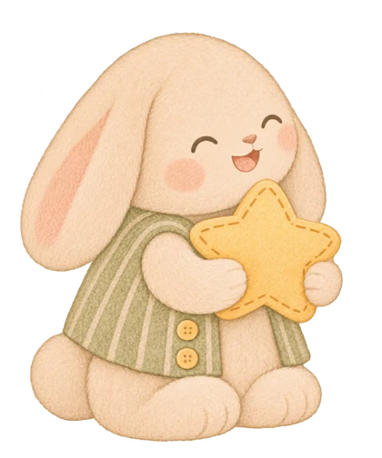
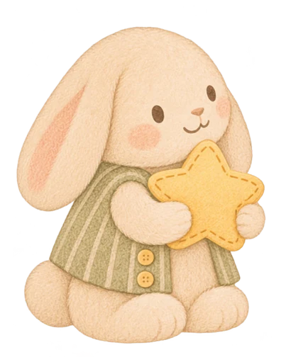
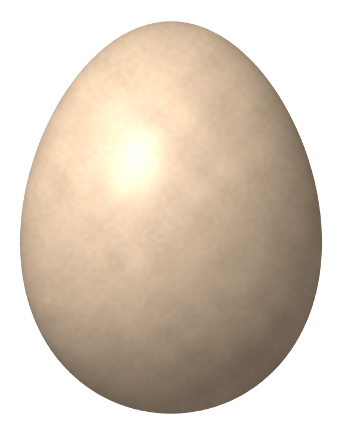

<title>시선사이 모바일</title>
<meta name="claude:viewport-fit-sides" content="cover">
<meta name="siseon-mobile-version" content="siseon-mobile-v1.4-20261119">
<link rel="preconnect" href="https://fonts.googleapis.com">
<link rel="preconnect" href="https://fonts.gstatic.com" crossorigin>
<link rel="stylesheet" href="https://fonts.googleapis.com/css2?family=Noto+Sans+KR:wght@400;500;700&display=swap">
<style>
/* 시선사이 · 공동관찰 입체방 */
.rs-root {
  position: relative;
  overflow: hidden;
  touch-action: none;               /* 스크롤·확대 대신 터치를 그림에 전달 */
  -webkit-user-select: none;
  user-select: none;
  -webkit-touch-callout: none;
  -webkit-tap-highlight-color: transparent;
}
.rs-canvas {
  position: absolute;
  inset: 0;
  width: 100%;
  height: 100%;
  display: block;
  touch-action: none;
  cursor: default;                  /* 호버로 장난감을 드러내지 않도록 커서 변화 없음 */
  outline: none;
}
.rs-sr {                            /* 화면낭독기 전용, 화면에는 보이지 않음 */
  position: absolute;
  width: 1px; height: 1px;
  overflow: hidden;
  clip: rect(0 0 0 0);
  clip-path: inset(50%);
  white-space: nowrap;
}
.rs-root.rs-error::after {
  content: attr(data-error);
  position: absolute; inset: 0;
  display: grid; place-items: center;
  font: 600 16px/1.5 system-ui, sans-serif;
  color: #7a4a2a;
}
.rs-debug {
  position: absolute; left: 12px; bottom: 12px;
  padding: 6px 10px; border-radius: 8px;
  background: rgba(0,0,0,.65); color: #fff;
  font: 600 13px/1.3 ui-monospace, Menlo, monospace;
  pointer-events: none;
}
.rs-gl { pointer-events: none; transition: opacity .2s linear; }
.rs-fx { z-index: 1; }
/* 효과음 켜기/끄기 — 그림 밖 모서리에 작게, 장난감과 겹치지 않음 */
.rs-sound {
  position: absolute; z-index: 2;
  top: max(12px, env(safe-area-inset-top));
  right: max(12px, env(safe-area-inset-right));
  width: 44px; height: 44px; border-radius: 50%;
  display: grid; place-items: center;
  border: 1px solid rgba(122,74,42,.18);
  background: rgba(255,248,236,.72);
  color: #7a4a2a;
  -webkit-backdrop-filter: blur(6px); backdrop-filter: blur(6px);
  box-shadow: 0 2px 8px rgba(90,60,30,.15);
  cursor: pointer; padding: 0;
  touch-action: manipulation;
}
.rs-sound .rs-off { display: none; }
.rs-sound.is-off .rs-on { display: none; }
.rs-sound.is-off .rs-off { display: inline; }
.rs-sound:focus-visible { outline: 3px solid #7fb8f0; outline-offset: 2px; }

/* 시선사이 · 정리 친구의 가족 미션 시범 — every rule is scoped to .smm-* inside the host */
.smm-root {
  --smm-ink: #5b3a24;
  --smm-paper: #fbf4e8;
  --smm-card: #fffaf2;
  --smm-line: #e3cfb3;
  --smm-wood: #c98c52;
  --smm-child: #ff8c5a;
  --smm-family: #6fa86b;
  --smm-font: "Jua", "Gowun Dodum", "Apple SD Gothic Neo", "Malgun Gothic", "Noto Sans KR", system-ui, sans-serif;
  container-type: inline-size;
  box-sizing: border-box;
  width: 100%;
  max-width: 100%;
  display: flex;
  flex-direction: column;
  gap: 10px;
  color: var(--smm-ink);
  font-family: var(--smm-font);
  -webkit-user-select: none;
  user-select: none;
}
.smm-root *, .smm-root *::before, .smm-root *::after { box-sizing: border-box; }

.smm-top {
  display: flex;
  flex-wrap: wrap;
  align-items: center;
  justify-content: space-between;
  gap: 8px;
  min-width: 0;
}
.smm-tag {
  display: inline-flex;
  align-items: center;
  gap: 8px;
  min-width: 0;
  padding: 4px 12px 4px 4px;
  background: var(--smm-card);
  border: 2px solid var(--smm-line);
  border-radius: 999px;
  font-size: clamp(14px, 2.6cqw, 18px);
  line-height: 1.2;
}
.smm-tag-code {
  padding: 2px 10px;
  border-radius: 999px;
  background: #fbefe0;
  border: 2px solid #c9a27a;
  font-weight: 700;
  letter-spacing: 0.04em;
}
.smm-tag-name { overflow: hidden; text-overflow: ellipsis; white-space: nowrap; }
.smm-step {
  padding: 4px 12px;
  border-radius: 999px;
  background: #f1e3cd;
  font-size: clamp(13px, 2.4cqw, 16px);
  white-space: nowrap;
}
.smm-step.smm-role-child { background: #ffe3d4; color: #a6431c; }
.smm-step.smm-role-family { background: #e1f0dc; color: #3f6b3c; }

.smm-stage {
  position: relative;
  width: 100%;
  aspect-ratio: 16 / 10;
  max-width: 100%;
  border-radius: 20px;
  overflow: hidden;
  background: var(--smm-paper);
  box-shadow: inset 0 0 0 2px var(--smm-line);
}
.smm-root.smm-portrait .smm-stage { aspect-ratio: 1 / 1; }
.smm-svg { display: block; width: 100%; height: 100%; }

.smm-caption {
  margin: 0;
  min-height: 2.7em;
  padding: 8px 14px;
  border-radius: 16px;
  background: var(--smm-card);
  border: 2px solid var(--smm-line);
  font-size: clamp(17px, 3.6cqw, 26px);
  line-height: 1.32;
  text-align: center;
  text-wrap: balance;
  word-break: keep-all;
  display: flex;
  align-items: center;
  justify-content: center;
}
.smm-caption.smm-k-title { font-size: clamp(19px, 4.2cqw, 30px); color: #8a4a22; }
.smm-caption.smm-k-done { color: #a6431c; }

/* reduced motion: each step is a still frame; a soft fade marks the change */
.smm-root.smm-flip .smm-svg { animation: smm-fade 0.5s ease-out; }
@keyframes smm-fade { from { opacity: 0.25; } to { opacity: 1; } }
@media (prefers-reduced-motion: reduce) {
  .smm-root.smm-flip .smm-svg { animation-duration: 0.01s; }
}

/* 시선사이 모바일 — 동화책 한 권을 폰 한 대로 넘겨요.
   Layout: 위 얇은 책머리(로고·역할·쪽수) / 가운데 책장 / 아래 엄지 자리 고정 버튼 */
:root {
  --bg: #FBF4E8;          /* 시작 화면 배경 (지정 색) */
  --card: #FFFDF8;        /* 카드·하단바 */
  --line: #E4D6BF;        /* 테두리 */
  --ink: #2A2622;         /* 본문 */
  --sub: #5E5348;         /* 보조 글자 */
  --child: #2E5B92;       /* 아이 책 · 시작 버튼 */
  --child-soft: #E3EAF4;
  --adult: #7A4F2A;       /* 부모님 책 */
  --adult-soft: #F2E6D6;
  --paw: #9A6B43;         /* 발바닥 */
  --paw-dark: #6E4A2C;
  --paw-pad: #F4C7B5;
  --honey: #F3D9A6;
  --ok: #3D7552;
  --warn: #A1462A;
  --font-title: "Hippie", "Noto Sans KR", "Apple SD Gothic Neo", sans-serif;   /* 제목만 손글씨 (히피체) */
  --font-body: "Noto Sans KR", "Apple SD Gothic Neo", "Malgun Gothic", sans-serif;   /* 본문은 깔끔하게, 기본 500 */
  --bar-h: 92px;
  --head-h: 52px;
  color-scheme: light;
}
* { box-sizing: border-box; }
html, body { height: 100%; }
body {
  margin: 0;
  background: var(--bg);
  color: var(--ink);
  font: 500 17px/1.65 var(--font-body);
  -webkit-text-size-adjust: 100%;
  word-break: keep-all;
  overflow-wrap: anywhere;
}
/* 아르떼 종이 결 */
body::after {
  content: "";
  position: fixed; inset: 0; pointer-events: none; z-index: 0;
  opacity: .5; mix-blend-mode: multiply;
  background-image: url("data:image/svg+xml;utf8,<svg xmlns='http://www.w3.org/2000/svg' width='180' height='180'><filter id='n'><feTurbulence type='fractalNoise' baseFrequency='.85' numOctaves='3' stitchTiles='stitch'/><feColorMatrix values='0 0 0 0 .55  0 0 0 0 .45  0 0 0 0 .33  0 0 0 .09 0'/></filter><rect width='100%' height='100%' filter='url(%23n)'/></svg>");
}
button, input, textarea { font: inherit; color: inherit; }
button { cursor: pointer; -webkit-tap-highlight-color: transparent; }
:focus-visible { outline: 3px solid var(--child); outline-offset: 3px; border-radius: 10px; }
img { max-width: 100%; }
.art { filter: saturate(.86) brightness(1.03) contrast(.97) sepia(.04); }
.sr { position: absolute; width: 1px; height: 1px; overflow: hidden; clip-path: inset(50%); white-space: nowrap; }

/* ---------- 책머리 ---------- */
.head {
  position: sticky; top: env(safe-area-inset-top, 0px); z-index: 20;
  height: var(--head-h);
  display: flex; align-items: center; gap: 10px;
  padding-left: max(12px, env(safe-area-inset-left, 0px));
  padding-right: max(12px, env(safe-area-inset-right, 0px));
  background: color-mix(in srgb, var(--bg) 92%, transparent);
  -webkit-backdrop-filter: blur(6px); backdrop-filter: blur(6px);
  border-bottom: 1px solid var(--line);
}
body::before { content: ""; position: fixed; inset: 0 0 auto; height: env(safe-area-inset-top, 0px); z-index: 21; background: var(--bg); }
.logo {
  border: 0; background: none; padding: 6px 4px; min-height: 44px;
  font: 400 25px/1 var(--font-title); color: var(--ink);
}
.head .spacer { flex: 1; }
.role-tag { display: inline-flex; align-items: center; gap: 6px; padding: 4px 11px; border-radius: 999px; font-size: 14px; font-weight: 700; }
.role-tag.child { background: var(--child-soft); color: var(--child); }
.role-tag.adult { background: var(--adult-soft); color: var(--adult); }
.icon-btn {
  width: 44px; height: 44px; border-radius: 50%;
  border: 1px solid var(--line); background: var(--card);
  display: inline-grid; place-items: center; color: var(--sub);
}
.icon-btn { padding: 0; flex: none; line-height: 0; }
.icon-btn svg { width: 22px; height: 22px; display: block; flex: none; margin: 0 0 0 1px; }   /* 스피커 모양은 오른쪽 물결 때문에 1px 오른쪽이 눈으로 가운데예요 */

/* ---------- 책장 ---------- */
.stage { position: relative; z-index: 1; perspective: 1400px; }
.page {
  min-height: calc(100dvh - var(--head-h) - env(safe-area-inset-top, 0px));
  padding-left: max(16px, env(safe-area-inset-left, 0px));
  padding-right: max(16px, env(safe-area-inset-right, 0px));
  padding-block: 16px calc(var(--bar-h) + 28px + env(safe-area-inset-bottom, 0px));
  max-width: 640px; margin: 0 auto;
  transform-origin: left center;
  backface-visibility: hidden;
}
.page.no-head { min-height: 100dvh; padding-top: 0; }
/* 책장 넘김: 지난 쪽이 종이처럼 들려 넘어가고, 새 쪽 위로 그림자가 지나가요 */
.leaf {
  position: fixed; left: 0; right: 0; bottom: 0; top: calc(var(--head-h) + env(safe-area-inset-top, 0px));
  z-index: 24; overflow: hidden; pointer-events: none;
  background: var(--bg);
  transform-origin: left center; backface-visibility: hidden;
  box-shadow: 0 0 0 1px rgba(120,90,55,.08);
  will-change: transform;
}
.leaf.from-home { top: 0; }
.leaf > .page { min-height: 0; }
.leaf::after { content: ""; position: absolute; inset: 0; pointer-events: none; background: linear-gradient(90deg, rgba(255,255,255,0) 30%, rgba(255,250,240,.55) 62%, rgba(110,80,45,.28) 100%); opacity: 0; }
.leaf.next { animation: leafNext .78s cubic-bezier(.5,.05,.35,1) forwards; }
.leaf.next::after { animation: leafLight .78s ease-in forwards; }
.leaf.back { transform-origin: right center; animation: leafBack .78s cubic-bezier(.5,.05,.35,1) forwards; }
.leaf.back::after { background: linear-gradient(270deg, rgba(255,255,255,0) 30%, rgba(255,250,240,.55) 62%, rgba(110,80,45,.28) 100%); animation: leafLight .78s ease-in forwards; }
@keyframes leafNext {
  0% { transform: perspective(1500px) rotateY(0) skewY(0); }
  35% { transform: perspective(1500px) rotateY(-28deg) skewY(-1.5deg); }
  100% { transform: perspective(1500px) rotateY(-108deg) skewY(-3deg); }
}
@keyframes leafBack {
  0% { transform: perspective(1500px) rotateY(0) skewY(0); }
  35% { transform: perspective(1500px) rotateY(28deg) skewY(1.5deg); }
  100% { transform: perspective(1500px) rotateY(108deg) skewY(3deg); }
}
@keyframes leafLight { 0% { opacity: 0; } 40% { opacity: .9; } 100% { opacity: 1; } }
.turn-shade { position: fixed; inset: 0; z-index: 23; pointer-events: none; background: linear-gradient(90deg, rgba(90,64,36,.22), rgba(90,64,36,0) 70%); animation: shade .78s ease-out forwards; }
.turn-shade.back { background: linear-gradient(270deg, rgba(90,64,36,.22), rgba(90,64,36,0) 70%); }
@keyframes shade { 0% { opacity: 1; } 100% { opacity: 0; } }
.page.settle { animation: settle .5s .18s ease-out both; }
@keyframes settle { from { transform: translateY(6px); } to { transform: none; } }

h1, h2, h3 { margin: 0; text-wrap: balance; }
.title { font: 400 clamp(36px, 10vw, 46px)/1.18 var(--font-title); letter-spacing: 0; }
.title .blue { color: var(--child); }
.h2 { font: 400 clamp(27px, 7.4vw, 33px)/1.3 var(--font-title); }
.eyebrow { font-size: 14px; font-weight: 600; color: var(--child); letter-spacing: .02em; }
.adult .eyebrow { color: var(--adult); }
.lead { margin: 0; font-size: 17px; font-weight: 500; color: var(--sub); }
.lead b, .note b, p b { font-weight: 700; color: var(--ink); }
.small { font-size: 14px; color: var(--sub); }
.stack { display: flex; flex-direction: column; gap: 12px; }
.chips { display: flex; flex-wrap: wrap; gap: 8px; }
.chip { padding: 7px 13px; border-radius: 999px; background: var(--card); border: 1px solid var(--line); font-size: 14px; font-weight: 500; box-shadow: 0 2px 0 var(--line); }
.card { background: var(--card); border: 1px solid var(--line); border-radius: 22px; padding: 18px; }
.note { font-size: 14px; color: var(--sub); background: color-mix(in srgb, var(--honey) 35%, var(--card)); border-radius: 14px; padding: 12px 14px; }
.note b { color: var(--ink); }

/* ---------- 시작 화면 (A안) ---------- */
.cover { margin: 0 calc(-1 * max(16px, env(safe-area-inset-left, 0px))) 0 calc(-1 * max(16px, env(safe-area-inset-right, 0px))); position: relative; }
.cover video, .cover img { display: block; width: 100%; height: auto; aspect-ratio: 3 / 2; max-height: 50dvh; object-fit: cover; object-position: 40% 50%; border-radius: 0 0 28px 28px; background: #efe3cf; }
.cover-body { padding-top: 22px; display: flex; flex-direction: column; gap: 12px; }

/* ---------- 하단 엄지 바 ---------- */
.bar {
  position: fixed; left: 0; right: 0; bottom: 0; z-index: 25;
  background: var(--card);
  border-top: 1px solid #E8DCC8;
  box-shadow: 0 -10px 24px rgba(42,38,34,.06);
  padding: 12px max(16px, env(safe-area-inset-right, 0px)) calc(14px + env(safe-area-inset-bottom, 0px)) max(16px, env(safe-area-inset-left, 0px));
}
.bar-in { max-width: 640px; margin: 0 auto; display: flex; flex-direction: column; gap: 8px; align-items: stretch; }
.bar-row { display: flex; gap: 10px; align-items: center; }
.bar-hint { text-align: center; font-size: 14px; color: var(--sub); min-height: 1.2em; }
.bar-hint.err { color: var(--warn); font-weight: 600; }
body.typing .bar { position: static; box-shadow: none; }
body.typing .page { padding-bottom: 24px; }

/* 입체 버튼: 아래쪽 두께(그림자 띠)가 있고, 누르면 그만큼 눌려 들어가요 */
.btn-main {
  position: relative; flex: 1; min-height: 64px; border: 0; border-radius: 20px;
  background: linear-gradient(180deg, #3A6BA6, var(--child)); color: #fff;
  font-size: 19px; font-weight: 700;
  display: flex; align-items: center; justify-content: center; gap: 10px;
  box-shadow: 0 7px 0 #1E3F68, 0 14px 22px rgba(46,91,146,.3), inset 0 2px 0 rgba(255,255,255,.28);
  transition: transform .07s, box-shadow .07s;
  touch-action: manipulation;
}
.btn-main:active, .btn-main.pressed { transform: translateY(6px); box-shadow: 0 1px 0 #1E3F68, 0 4px 8px rgba(46,91,146,.25), inset 0 2px 4px rgba(0,0,0,.18); }
.btn-main svg { width: 26px; height: 26px; flex: none; }
.btn-soft { min-height: 48px; border-radius: 16px; border: 1.5px solid var(--line); background: var(--card); font-weight: 600; padding: 8px 16px; color: var(--ink); box-shadow: 0 4px 0 var(--line); transition: transform .07s, box-shadow .07s; touch-action: manipulation; }
.btn-soft:active, .btn-soft.pressed { transform: translateY(3px); box-shadow: 0 1px 0 var(--line); }
.btn-text { min-height: 44px; border: 0; background: none; color: var(--child); font-weight: 600; text-decoration: underline; text-underline-offset: 3px; padding: 6px 8px; }
button:disabled { opacity: .45; cursor: not-allowed; box-shadow: 0 3px 0 rgba(0,0,0,.08) !important; transform: none !important; }
button:disabled * { animation: none !important; }

/* ---------- 토끼 발바닥 버튼: 앞으로는 오른쪽, 뒤로는 왼쪽 ---------- */
.paw-next {
  position: relative; overflow: visible; flex: 1; min-height: 68px; border: 0; border-radius: 999px;
  padding: 0 8px 0 26px;
  background: linear-gradient(180deg, #B98758 0%, var(--paw) 60%, #8C5F3A 100%);
  color: #fff; font-size: 19px; font-weight: 700; letter-spacing: .01em;
  display: flex; align-items: center; justify-content: space-between; gap: 10px;
  box-shadow: 0 8px 0 var(--paw-dark), 0 15px 22px rgba(110,74,44,.32), inset 0 2px 0 rgba(255,255,255,.3);
  transition: transform .07s, box-shadow .07s;
  touch-action: manipulation; isolation: isolate;
}
.paw-next .label { flex: 1; text-align: center; text-shadow: 0 1px 0 rgba(80,50,25,.35); }
.paw-next:active, .paw-next.pressed { transform: translateY(7px); box-shadow: 0 1px 0 var(--paw-dark), 0 4px 8px rgba(110,74,44,.25), inset 0 3px 6px rgba(60,35,15,.3); }
.paw-next::after { /* 반짝이는 빛줄기 */
  content: ""; position: absolute; inset: 0; border-radius: inherit; pointer-events: none; z-index: -1;
  background: linear-gradient(105deg, transparent 35%, rgba(255,240,215,.55) 48%, transparent 60%);
  background-size: 250% 100%; background-position: 130% 0;
}
.paw-next:not(:disabled)::after { animation: shine 2.6s ease-in-out infinite; }
@keyframes shine { 0%, 55% { background-position: 130% 0; } 100% { background-position: -40% 0; } }
.paw-badge {
  position: relative; flex: none; width: 54px; height: 54px; border-radius: 50%;
  background: radial-gradient(circle at 35% 30%, #FFFDF8, #F6E7D2 70%);
  box-shadow: 0 3px 0 #D8BFA0, inset 0 -2px 0 rgba(150,110,70,.18);
  display: grid; place-items: center;
}
.paw-badge .paw { width: 38px; height: 38px; }
.paw-next:not(:disabled) .paw-badge .paw { animation: wiggle 2.4s ease-in-out infinite; transform-origin: 50% 80%; }
.paw-next:not(:disabled) .paw-badge { animation: glow 2.4s ease-in-out infinite; }
@keyframes wiggle { 0%, 60%, 100% { transform: rotate(0) translateX(0); } 68% { transform: rotate(-12deg) translateX(-1px); } 76% { transform: rotate(10deg) translateX(2px); } 84% { transform: rotate(-6deg); } 92% { transform: rotate(3deg) translateX(1px); } }
@keyframes glow { 0%, 100% { box-shadow: 0 3px 0 #D8BFA0, 0 0 0 0 rgba(255,214,140,0); } 50% { box-shadow: 0 3px 0 #D8BFA0, 0 0 0 7px rgba(255,214,140,.45); } }
.spark { position: absolute; width: 12px; height: 12px; pointer-events: none; opacity: 0; }
.spark::before, .spark::after { content: ""; position: absolute; left: 50%; top: 50%; background: #FFE7A8; border-radius: 2px; transform: translate(-50%, -50%); }
.spark::before { width: 3px; height: 12px; }
.spark::after { width: 12px; height: 3px; }
.spark.s1 { top: -6px; right: 4px; }
.spark.s2 { bottom: -2px; right: -6px; width: 9px; height: 9px; }
.spark.s3 { top: 10px; left: -9px; width: 8px; height: 8px; }
.paw-next:not(:disabled) .spark { animation: twinkle 2.4s ease-in-out infinite; }
.paw-next:not(:disabled) .spark.s2 { animation-delay: .5s; }
.paw-next:not(:disabled) .spark.s3 { animation-delay: 1s; }
@keyframes twinkle { 0%, 100% { opacity: 0; transform: scale(.4) rotate(0); } 40% { opacity: 1; transform: scale(1) rotate(45deg); } 70% { opacity: 0; transform: scale(.5) rotate(90deg); } }

.paw-back {
  flex: none; min-height: 68px; border-radius: 999px; padding: 0 16px 0 7px;
  border: 2px solid var(--line); background: linear-gradient(180deg, #FFFDF8, #F6EEE2); color: var(--paw-dark);
  display: flex; align-items: center; gap: 6px;
  box-shadow: 0 6px 0 #D9C7AB, 0 10px 16px rgba(110,74,44,.14);
  font-size: 15px; font-weight: 600;
  transition: transform .07s, box-shadow .07s; touch-action: manipulation;
}
.paw-back:active, .paw-back.pressed { transform: translateY(5px); box-shadow: 0 1px 0 #D9C7AB, 0 3px 6px rgba(110,74,44,.12); }
.paw-back .paw-badge { width: 46px; height: 46px; background: radial-gradient(circle at 35% 30%, #fff, #F3E4CF 70%); }
.paw-back .paw { width: 32px; height: 32px; transform: scaleX(-1); }

/* ---------- 질문 ---------- */
.q-top { display: flex; align-items: center; justify-content: space-between; gap: 8px; }
.dots { display: flex; gap: 6px; }
.dots i { width: 9px; height: 9px; border-radius: 50%; background: var(--line); }
.dots i.on { background: var(--child); }
.adult .dots i.on { background: var(--adult); }
.story { margin: 0; font-size: 15px; color: var(--sub); }
.story b { font-family: var(--font-title); font-weight: 400; font-size: 23px; color: var(--ink); display: block; line-height: 1.35; margin-bottom: 2px; }
.question { font-size: 22px; line-height: 1.5; font-weight: 700; letter-spacing: -.01em; }
.adult-note { font-size: 14px; color: var(--adult); background: var(--adult-soft); border-radius: 12px; padding: 8px 12px; }

.scene { position: relative; border-radius: 22px; overflow: hidden; border: 1px solid var(--line); background: #efe3cf; aspect-ratio: 3 / 2; max-width: 100%; }
.scene > img { position: absolute; inset: 0; width: 100%; height: 100%; object-fit: cover; transition: transform 1.2s cubic-bezier(.25,.7,.25,1); }
.scene .room-host { position: absolute; inset: 0; }
.scene .room-host.rs-ready + img, .scene .room-host.rs-ready ~ img { opacity: 0; }
.scene-cap { position: absolute; left: 10px; bottom: 10px; right: 10px; z-index: 3; pointer-events: none; display: flex; justify-content: flex-start; }
.scene-cap span { background: rgba(255,253,248,.92); border-radius: 999px; padding: 5px 12px; font-size: 13px; font-weight: 600; color: var(--ink); }
.pin { position: absolute; z-index: 4; width: 26px; height: 26px; margin: -13px 0 0 -13px; border-radius: 50%; border: 4px solid #fff; background: var(--child); box-shadow: 0 2px 8px rgba(0,0,0,.3); pointer-events: none; }
.adult .pin { background: var(--adult); }

.choices { display: grid; grid-template-columns: repeat(2, minmax(0, 1fr)); gap: 10px; }
.choice {
  position: relative; border: 2px solid var(--line); background: var(--card); border-radius: 20px;
  padding: 8px 8px 12px; display: flex; flex-direction: column; gap: 8px; text-align: center;
  box-shadow: 0 4px 0 var(--line); transition: transform .1s, box-shadow .1s, border-color .15s;
}
.choice:active { transform: translateY(3px); box-shadow: 0 1px 0 var(--line); }
.choice img { width: 100%; aspect-ratio: 5 / 3; object-fit: cover; border-radius: 14px; background: #f3e9d9; }
.choice strong { font-size: 16px; line-height: 1.4; font-weight: 500; min-height: 2.8em; display: grid; place-items: center; }
.choice[aria-pressed="true"] strong { font-weight: 700; }
.choice[aria-pressed="true"] { border-color: var(--child); box-shadow: 0 4px 0 var(--child); background: var(--child-soft); }
.adult .choice[aria-pressed="true"] { border-color: var(--adult); box-shadow: 0 4px 0 var(--adult); background: var(--adult-soft); }
.choice .stamp { position: absolute; top: -8px; right: -6px; width: 38px; height: 38px; border-radius: 50%; background: var(--child); color: #fff; display: none; place-items: center; box-shadow: 0 3px 8px rgba(0,0,0,.2); }
.adult .choice .stamp { background: var(--adult); }
.choice[aria-pressed="true"] .stamp { display: grid; animation: pop .35s ease-out; }
.choice .stamp svg { width: 24px; height: 24px; }
.choice.speaking { border-color: #D9A33C; box-shadow: 0 0 0 4px rgba(217,163,60,.35), 0 4px 0 var(--line); }
@keyframes pop { 0% { transform: scale(.3); } 70% { transform: scale(1.15); } 100% { transform: scale(1); } }
.other-pick { font-size: 15px; color: var(--sub); text-align: center; }
.other-pick b { color: var(--ink); }

.cheer { display: flex; align-items: center; gap: 10px; font-weight: 700; color: var(--ok); }
.cheer img { width: 44px; height: 44px; border-radius: 50%; object-fit: cover; object-position: 30% 20%; border: 2px solid var(--line); }
.reason { display: flex; flex-direction: column; gap: 8px; }
.reason label { font-weight: 600; }
.reason .opt { font-weight: 500; color: var(--sub); font-size: 14px; }
.reason textarea { width: 100%; min-height: 76px; resize: vertical; border: 1.5px solid var(--line); border-radius: 14px; background: #fff; padding: 12px; font-size: 17px; line-height: 1.5; }
.reason textarea:focus { border-color: var(--child); outline: none; }
.mic-row { display: flex; gap: 8px; align-items: center; flex-wrap: wrap; }
.mic { display: inline-flex; align-items: center; gap: 8px; }
.mic svg { width: 20px; height: 20px; }
.mic[aria-pressed="true"] { background: #FCE7DF; border-color: #E9A08A; color: var(--warn); }
.mic-status { font-size: 14px; color: var(--sub); }
.listen { display: inline-flex; align-items: center; justify-content: center; gap: 6px; }
.listen svg { width: 20px; height: 20px; }

/* ---------- 건네기 · 알 ---------- */
.center { display: flex; flex-direction: column; align-items: center; text-align: center; gap: 14px; padding-top: 14px; }
.egg-wobble { width: 150px; height: auto; filter: drop-shadow(0 12px 14px rgba(110,74,44,.25)); animation: wobble 1.8s ease-in-out infinite; transform-origin: 50% 90%; }
.egg-pair { display: flex; gap: 18px; align-items: flex-end; justify-content: center; }
.egg-pair figure { margin: 0; display: flex; flex-direction: column; align-items: center; gap: 6px; }
.egg-pair img { width: 110px; }
.egg-pair figure:nth-child(2) img { animation-delay: .4s; }
@keyframes wobble { 0%,100% { transform: rotate(0); } 15% { transform: rotate(-7deg); } 30% { transform: rotate(6deg); } 45% { transform: rotate(-3deg); } 60% { transform: rotate(0); } }
.handoff-art { width: 100%; max-width: 360px; aspect-ratio: 3 / 2; object-fit: cover; object-position: 10% 50%; border-radius: 24px; border: 1px solid var(--line); }
.steps { list-style: none; margin: 0; padding: 0; display: flex; flex-direction: column; gap: 10px; text-align: left; width: 100%; }
.steps li { display: flex; gap: 12px; align-items: center; background: var(--card); border: 1px solid var(--line); border-radius: 16px; padding: 12px 14px; }
.steps .n { flex: none; width: 34px; height: 34px; border-radius: 50%; display: grid; place-items: center; font-weight: 800; color: #fff; background: var(--child); }
.steps .n.adult { background: var(--adult); }
.steps .n.egg { background: #C9862F; }
.steps .n.done { background: var(--ok); }
.steps li p { margin: 0; font-size: 16px; line-height: 1.4; }
.steps li p span { display: block; font-size: 14px; font-weight: 400; color: var(--sub); }
.steps li p b { font-weight: 700; }

.egg-frame { width: 100%; height: min(560px, 62dvh); border: 0; border-radius: 22px; background: #efe6da; display: block; }
.egg-status { font-size: 14px; color: var(--sub); text-align: center; }
.friend-reveal img { width: min(240px, 64vw); filter: drop-shadow(0 14px 16px rgba(110,74,44,.25)); animation: rise .7s cubic-bezier(.2,.8,.3,1.2) both; }
@keyframes rise { from { transform: translateY(30px) scale(.6); opacity: 0; } to { transform: none; opacity: 1; } }

.meet { position: relative; height: 260px; width: 100%; max-width: 420px; }
.meet img { position: absolute; bottom: 10px; width: 46%; filter: drop-shadow(0 12px 12px rgba(110,74,44,.25)); }
.meet .l { left: 2%; animation: inL 1.4s cubic-bezier(.2,.8,.3,1) both; }
.meet .r { right: 2%; animation: inR 1.4s cubic-bezier(.2,.8,.3,1) both; }
.meet .heart { position: absolute; left: 50%; top: 22px; width: 54px; margin-left: -27px; color: #E07A6A; animation: beat 1.2s 1.3s ease-in-out infinite both; }
@keyframes inL { from { transform: translateX(-70%) rotate(-8deg); opacity: 0; } to { transform: translateX(14%); opacity: 1; } }
@keyframes inR { from { transform: translateX(70%) rotate(8deg); opacity: 0; } to { transform: translateX(-14%); opacity: 1; } }
@keyframes beat { 0% { transform: scale(0); opacity: 0; } 20% { transform: scale(1.15); opacity: 1; } 40%,100% { transform: scale(1); opacity: 1; } }

/* ---------- 결과지 ---------- */
.report { display: flex; flex-direction: column; gap: 18px; }
.report section { background: var(--card); border: 1px solid var(--line); border-radius: 22px; padding: 18px; display: flex; flex-direction: column; gap: 12px; }
.report .sec-label { font-size: 13px; font-weight: 700; color: var(--sub); letter-spacing: .04em; }
.friends { display: grid; grid-template-columns: repeat(2, minmax(0, 1fr)); gap: 10px; }
.friend { display: flex; flex-direction: column; align-items: center; gap: 6px; text-align: center; padding: 12px 8px; border-radius: 18px; background: var(--bg); min-width: 0; }
.friend img { width: 100%; max-width: 150px; }
.friend strong { font: 400 21px/1.3 var(--font-title); }
.code { font: 700 15px/1 ui-monospace, "SF Mono", Menlo, monospace; letter-spacing: .12em; color: var(--sub); }
.axis { display: grid; grid-template-columns: 52px minmax(0, 1fr); gap: 10px; align-items: start; padding: 12px 0; border-top: 1px dashed var(--line); }
.axis:first-of-type { border-top: 0; padding-top: 4px; }
.axis .pair { font: 800 18px/1 ui-monospace, "SF Mono", Menlo, monospace; display: grid; place-items: center; height: 44px; border-radius: 12px; background: var(--bg); border: 1px solid var(--line); }
.axis h3 { font-size: 16px; }
.axis ul { margin: 4px 0 0; padding: 0; list-style: none; display: flex; flex-direction: column; gap: 6px; font-size: 15px; }
.axis li { display: grid; grid-template-columns: 22px minmax(0, 1fr); column-gap: 6px; row-gap: 4px; align-items: baseline; }
.axis li b { font-family: ui-monospace, "SF Mono", Menlo, monospace; font-size: 16px; }
.axis li .who { grid-column: 2; }
.who { display: inline-flex; gap: 4px; }
.who span { font-size: 12px; font-weight: 700; padding: 1px 8px; border-radius: 999px; }
.who .c { background: var(--child-soft); color: var(--child); }
.who .a { background: var(--adult-soft); color: var(--adult); }
.qa { display: flex; flex-direction: column; gap: 8px; padding: 12px 0; border-top: 1px dashed var(--line); }
.qa:first-of-type { border-top: 0; padding-top: 0; }
.qa h3 { font-size: 16px; }
.qa .same { font-size: 13px; font-weight: 700; color: var(--ok); }
.ans { display: grid; grid-template-columns: 62px minmax(0, 1fr); gap: 8px; font-size: 15px; }
.ans .r { font-weight: 700; }
.ans .r.c { color: var(--child); }
.ans .r.a { color: var(--adult); }
.ans q { display: block; color: var(--sub); quotes: "“" "”"; margin-top: 2px; }
.ans .none { display: block; color: #8A7D70; font-size: 14px; }
.profile h3 { font-size: 16px; margin-top: 4px; }
.profile p { margin: 0; font-size: 15px; }
details summary { cursor: pointer; font-weight: 700; min-height: 44px; display: flex; align-items: center; }
.photo-box { border: 2px dashed var(--line); border-radius: 18px; padding: 14px; display: flex; flex-direction: column; gap: 10px; align-items: stretch; }
.photo-box img { width: 100%; border-radius: 14px; max-height: 60dvh; object-fit: contain; background: #f3e9d9; }
.photo-box input[type=file] { position: absolute; width: 1px; height: 1px; opacity: 0; }
.photo-label { display: flex; align-items: center; justify-content: center; gap: 8px; min-height: 52px; border-radius: 16px; background: var(--adult-soft); color: var(--adult); font-weight: 800; }
.photo-label svg { width: 22px; height: 22px; }
.save-line { display: flex; align-items: center; gap: 8px; font-size: 14px; font-weight: 600; }
.save-line.ok { color: var(--ok); }
.save-line.err { color: var(--warn); }
.test-badge { align-self: flex-start; font-size: 12px; font-weight: 800; color: #fff; background: #B25A3A; border-radius: 999px; padding: 3px 10px; }

/* ---------- 확인 시트 ---------- */
.sheet-back { position: fixed; inset: 0; z-index: 40; background: rgba(42,38,34,.4); display: flex; align-items: flex-end; justify-content: center; animation: fade .2s both; }
.sheet { width: 100%; max-width: 560px; background: var(--card); border-radius: 24px 24px 0 0; padding: 22px max(18px, env(safe-area-inset-right, 0px)) calc(18px + env(safe-area-inset-bottom, 0px)) max(18px, env(safe-area-inset-left, 0px)); display: flex; flex-direction: column; gap: 12px; animation: up .25s ease-out both; }
.sheet h2 { font: 400 27px/1.3 var(--font-title); }
.sheet p { margin: 0; color: var(--sub); }
@keyframes fade { from { opacity: 0; } }
@keyframes up { from { transform: translateY(40px); opacity: 0; } }

@media (prefers-reduced-motion: reduce) {
  *, *::before, *::after { animation-duration: .01ms !important; animation-iteration-count: 1 !important; transition-duration: .01ms !important; }
  .page.turn-next, .page.turn-back { animation: fadeOnly .2s both !important; }
  @keyframes fadeOnly { from { opacity: 0; } }
  .page-curl { display: none; }
}
@media (min-width: 700px) {
  .choices { gap: 14px; }
  .question { font-size: 24px; }
}

/* ---------- 손그림 질감: 명도·채도를 낮추고 종이 결을 얹어요 ---------- */
.art { filter: saturate(.8) brightness(1.04) contrast(.93) sepia(.07); }
.artbox { position: relative; display: block; border-radius: 14px; overflow: hidden; }
.artbox::after, .scene::after {
  content: ""; position: absolute; inset: 0; pointer-events: none; z-index: 2; mix-blend-mode: multiply;
  background-image:
    url("data:image/svg+xml;utf8,<svg xmlns='http://www.w3.org/2000/svg' width='140' height='140'><filter id='n'><feTurbulence type='fractalNoise' baseFrequency='.9' numOctaves='3' stitchTiles='stitch'/><feColorMatrix values='0 0 0 0 .6  0 0 0 0 .48  0 0 0 0 .34  0 0 0 .16 0'/></filter><rect width='100%' height='100%' filter='url(%23n)'/></svg>"),
    radial-gradient(ellipse at 50% 45%, rgba(255,250,240,0) 55%, rgba(150,115,75,.16) 100%);
}
.choice .artbox img { display: block; }

/* ---------- 장마다 바뀌는 장면 ---------- */
.scene { box-shadow: 0 6px 0 var(--line); }
.scene .light { position: absolute; inset: 0; z-index: 1; pointer-events: none; mix-blend-mode: soft-light; transition: opacity .8s; }
.scene.l1 .light { background: radial-gradient(ellipse at 15% 10%, rgba(255,236,170,.75), transparent 60%); }
.scene.l2 .light { background: radial-gradient(ellipse at 35% 60%, rgba(255,225,190,.7), transparent 65%); }
.scene.l3 .light { background: linear-gradient(160deg, rgba(255,212,140,.65), transparent 70%); }
.scene.l4 .light { background: linear-gradient(200deg, rgba(255,190,170,.6), rgba(190,170,230,.3) 70%, transparent); }
.scene > img.enter { animation: kb 1.8s cubic-bezier(.25,.7,.25,1) both; }
@keyframes kb { from { transform: scale(var(--s0)) ; transform-origin: var(--o); } to { transform: scale(var(--s1)); transform-origin: var(--o); } }
.scene .peek { position: absolute; z-index: 3; right: -6px; bottom: -10px; width: 31%; max-width: 150px; pointer-events: none; filter: drop-shadow(0 6px 8px rgba(90,60,30,.25)) saturate(.85) brightness(1.03); animation: peek .9s .35s cubic-bezier(.2,.9,.3,1.3) both; }
.scene .bubble { position: absolute; z-index: 3; right: 27%; bottom: 46%; max-width: 54%; background: rgba(255,253,248,.96); border-radius: 16px; padding: 8px 12px; font-size: 14px; font-weight: 600; line-height: 1.4; box-shadow: 0 4px 10px rgba(90,60,30,.15); animation: pop .4s .8s ease-out both; }
.scene .bubble::after { content: ""; position: absolute; right: -6px; bottom: 12px; width: 14px; height: 14px; background: inherit; transform: rotate(45deg); border-radius: 3px; }
@keyframes peek { from { transform: translateY(40%) rotate(8deg); opacity: 0; } to { transform: none; opacity: 1; } }
.scene-cap { justify-content: flex-start; right: 34%; }

/* ---------- 학습지 칭찬 도장 ---------- */
.cheer { position: relative; display: flex; align-items: center; gap: 10px; padding: 10px 12px; border-radius: 18px; background: color-mix(in srgb, var(--honey) 30%, var(--card)); border: 1px dashed #E2C99A; }
.cheer .mascot { width: 52px; height: auto; flex: none; filter: saturate(.85); animation: hop .6s ease-out; }
.cheer .says { flex: 1; font-size: 17px; font-weight: 700; color: var(--ink); }
.cheer .says small { display: block; font-size: 14px; font-weight: 500; color: var(--sub); }
.stamp-ink {
  flex: none; width: 70px; height: 70px; border-radius: 50%;
  border: 3px solid #C8553D; color: #C8553D;
  display: grid; place-items: center; text-align: center;
  font: 400 17px/1.05 var(--font-title);
  transform: rotate(-14deg);
  box-shadow: inset 0 0 0 3px #FFFDF8, inset 0 0 0 4.5px rgba(200,85,61,.55);
  background: rgba(255,253,248,.6);
  animation: stampIn .5s cubic-bezier(.3,1.6,.5,1) both;
}
.adult .stamp-ink { border-color: #7A4F2A; color: #7A4F2A; box-shadow: inset 0 0 0 3px #FFFDF8, inset 0 0 0 4.5px rgba(122,79,42,.5); }
@keyframes stampIn { 0% { transform: scale(2.2) rotate(-30deg); opacity: 0; } 60% { transform: scale(.92) rotate(-12deg); opacity: 1; } 100% { transform: scale(1) rotate(-14deg); } }
@keyframes hop { 0% { transform: translateY(8px) scale(.9); } 50% { transform: translateY(-6px); } 100% { transform: none; } }

@media (prefers-reduced-motion: reduce) {
  .leaf, .turn-shade { display: none !important; }
  .scene > img.enter { animation: none !important; transform: scale(var(--s1)) !important; transform-origin: var(--o) !important; }
}
.scene > img.peek { inset: auto -4px -8px auto; width: 27%; max-width: 130px; height: auto; object-fit: contain; transform: none; transition: none; }
.ask-other { display: flex; flex-direction: column; gap: 10px; padding: 14px; border-radius: 18px; background: var(--card); border: 2px solid #E2C99A; box-shadow: 0 4px 0 var(--line); animation: pop .3s ease-out; }
.ask-other p { margin: 0; font-size: 17px; }
.ask-other .btn-soft { flex: 1; }
.handoff-art { aspect-ratio: 5 / 4; object-position: 0% 50%; }
.scene .ask-other { position: absolute; left: 8px; right: 8px; bottom: 8px; z-index: 6; padding: 10px 12px; gap: 8px; box-shadow: 0 6px 16px rgba(60,40,20,.22); }
.scene .ask-other p { font-size: 16px; }
.scene .ask-other .btn-soft { min-height: 46px; font-size: 15px; padding: 6px 8px; }
/* 안내 토끼는 공통 그림 밖에: 조사 그림은 원본 그대로 */
.scene .peek, .scene .bubble { display: none; }
.scene-cap { right: 10px; }
.guide-line { display: flex; align-items: flex-end; gap: 8px; margin-bottom: -6px; }
.guide-line img { width: 54px; height: auto; flex: none; filter: saturate(.85) brightness(1.03); animation: hop .6s ease-out; }
.guide-line span { position: relative; background: var(--card); border: 1px solid var(--line); border-radius: 16px; padding: 7px 13px; font-size: 15px; font-weight: 600; margin-bottom: 14px; box-shadow: 0 3px 0 var(--line); }
.guide-line span::before { content: ""; position: absolute; left: -7px; bottom: 10px; width: 12px; height: 12px; background: var(--card); border-left: 1px solid var(--line); border-bottom: 1px solid var(--line); transform: rotate(45deg); }

/* ---------- 선택 비교 그래프 ---------- */
.report section.graph { background: color-mix(in srgb, var(--child-soft) 45%, var(--card)); }
.chart-key { display: flex; gap: 16px; justify-content: center; font-size: 15px; font-weight: 700; }
.chart-key .child { color: var(--child); }
.chart-key .adult { color: var(--adult); }
.choice-picture { display: block; width: 100%; max-width: 380px; margin: 0 auto; overflow: visible; }
.chart-guide { fill: none; stroke: #CDBBA0; stroke-width: 1.1; }
.chart-guide line { stroke-dasharray: 3 3; }
.trace { fill: none; stroke-width: 2.2; stroke-linecap: round; }
.trace.child { stroke: var(--child); }
.trace.adult { stroke: var(--adult); stroke-dasharray: 4 3; }
.marks.child { fill: var(--child); stroke: #FFFDF8; stroke-width: 1.3; }
.marks.adult { fill: #FFFDF8; stroke: var(--adult); stroke-width: 2.2; }
.chart-labels { fill: var(--ink); font-size: 11.5px; font-weight: 500; font-family: var(--font-body); }
.chart-labels .axis-code { font-size: 15px; font-weight: 700; fill: #3D6152; }
.chart-plot { animation: chartOpen .7s cubic-bezier(.2,.67,.28,1) both; transform-origin: 144px 116px; }
@keyframes chartOpen { from { transform: scale(.2); opacity: 0; } to { transform: none; opacity: 1; } }
.chart-controls { display: flex; gap: 8px; justify-content: center; }
.chart-controls .btn-soft { flex: 1; min-height: 44px; padding: 6px 8px; font-size: 15px; }
.chart-controls .btn-soft[aria-pressed="true"] { background: var(--ink); color: #FFFDF8; border-color: var(--ink); box-shadow: 0 4px 0 #000; }
[data-chart-view="child"] .chart-key .adult, [data-chart-view="child"] :is(.trace, .marks).adult,
[data-chart-view="adult"] .chart-key .child, [data-chart-view="adult"] :is(.trace, .marks).child { opacity: .17; }

/* 만남 화면: 친구가 옆에서 들어올 때 화면 폭이 넓어지지 않게 */
.meet { overflow: hidden; }
.stage { overflow-x: clip; }

/* 아주 좁은 화면 (폴드 접은 화면 등) */
.paw-next .label { white-space: nowrap; }
@media (max-width: 340px) {
  .paw-back { padding: 0 7px; }
  .paw-back > span:last-child { display: none; }
  .paw-next { padding-left: 14px; font-size: 17px; }
  .paw-badge { width: 48px; height: 48px; }
  .cheer { gap: 8px; padding: 8px 10px; }
  .cheer .mascot { width: 40px; }
  .cheer .says { font-size: 15px; }
  .stamp-ink { width: 54px; height: 54px; font-size: 13px; }
  .choice strong { font-size: 15px; }
}
/* 가로 화면: 버튼 영역을 낮게 */
@media (max-height: 480px) and (orientation: landscape) {
  .paw-next, .paw-back, .btn-main { min-height: 54px; }
  .paw-badge { width: 44px; height: 44px; }
  .paw-badge .paw { width: 32px; height: 32px; }
  .bar { padding-top: 8px; padding-bottom: calc(8px + env(safe-area-inset-bottom, 0px)); }
  .bar-hint { display: none; }
  .page { padding-bottom: calc(80px + env(safe-area-inset-bottom, 0px)); }
}
.logo, .role-tag { white-space: nowrap; }
@media (max-width: 340px) {
  .logo { font-size: 21px; }
  .role-tag { font-size: 12px; padding: 3px 8px; }
  .head { gap: 6px; }
}

/* ---------- v1.2 · 글 줄인 질문 화면 ---------- */
.q-line { display: flex; align-items: flex-start; gap: 10px; }
.q-line .question { flex: 1; min-width: 0; }
.q-line .listen { flex: none; margin-top: 2px; }
.story { margin: 0; }
.story b { margin: 0; }
.reason-toggle { align-self: flex-start; text-decoration: none; padding-left: 2px; }
.reason-toggle .opt, .reason .opt { font-weight: 500; color: var(--sub); font-size: 14px; }
.reason label { font-size: 16px; }

/* ---------- 정리 친구 16종: 색·움직임으로 성격을 보여요 ---------- */
.pal { margin: 0; position: relative; display: grid; justify-items: center; align-items: end; }
.pal::before { content: ""; position: absolute; inset: 12% 8% 0; border-radius: 50%; background: radial-gradient(circle at 50% 60%, color-mix(in srgb, var(--pc) 30%, transparent), transparent 70%); z-index: 0; }
.pal img { position: relative; z-index: 1; width: 100%; max-width: 100%; filter: drop-shadow(0 10px 10px rgba(90,60,30,.22)); transform-origin: 50% 90%; }
.pal.big { width: min(230px, 62vw); }
.pal.mini { width: 84px; flex: none; }
.m-hop img    { animation: pHop 1.1s ease-in-out infinite; }
.m-sway img   { animation: pSway 3s ease-in-out infinite; }
.m-wag img    { animation: pWag .9s ease-in-out infinite; }
.m-waddle img { animation: pWaddle 1.2s ease-in-out infinite; }
.m-snap img   { animation: pSnap 2.2s steps(1) infinite; }
.m-puff img   { animation: pPuff 1.6s ease-in-out infinite; }
.m-float img  { animation: pFloat 3.4s ease-in-out infinite; }
.m-hug img    { animation: pHug 2s ease-in-out infinite; }
.m-twitch img { animation: pTwitch 2.4s ease-in-out infinite; }
.m-dash img   { animation: pDash 1.8s cubic-bezier(.5,0,.2,1) infinite; }
.m-swirl img  { animation: pSwirl 3.2s ease-in-out infinite; }
.m-bighop img { animation: pBigHop 1.4s cubic-bezier(.3,.7,.4,1) infinite; }
.m-curl img   { animation: pCurl 2.6s ease-in-out infinite; }
.m-roll img   { animation: pRoll 2.4s ease-in-out infinite; }
.m-bounce img { animation: pBounce 1.3s ease-in-out infinite; }
.m-flip img   { animation: pFlip 3s ease-in-out infinite; }
@keyframes pHop { 0%,100% { transform: translateY(0); } 30% { transform: translateY(-9%); } 50% { transform: translateY(0) scaleY(.94); } 70% { transform: translateY(-5%); } }
@keyframes pSway { 0%,100% { transform: rotate(-4deg); } 50% { transform: rotate(4deg) translateY(-2%); } }
@keyframes pWag { 0%,100% { transform: rotate(-5deg); } 50% { transform: rotate(5deg); } }
@keyframes pWaddle { 0%,100% { transform: rotate(-7deg) translateX(-3%); } 50% { transform: rotate(7deg) translateX(3%); } }
@keyframes pSnap { 0% { transform: rotate(0); } 40% { transform: rotate(-6deg); } 60% { transform: rotate(6deg); } 80% { transform: rotate(0) scale(1.04); } }
@keyframes pPuff { 0%,100% { transform: scale(1); } 45% { transform: scale(1.08, .95); } 60% { transform: scale(.97, 1.04); } }
@keyframes pFloat { 0%,100% { transform: translateY(0); } 50% { transform: translateY(-6%); } }
@keyframes pHug { 0%,100% { transform: scale(1); } 40% { transform: scale(1.06, .94); } 55% { transform: scale(.98, 1.03); } }
@keyframes pTwitch { 0%,70%,100% { transform: rotate(0); } 75% { transform: rotate(-8deg); } 82% { transform: rotate(8deg); } 90% { transform: rotate(-3deg); } }
@keyframes pDash { 0% { transform: translateX(0); } 20% { transform: translateX(-6%) skewX(6deg); } 40% { transform: translateX(10%) skewX(-10deg); } 60%,100% { transform: translateX(0); } }
@keyframes pSwirl { 0%,100% { transform: rotate(0) translateY(0); } 25% { transform: rotate(-6deg) translateY(-3%); } 75% { transform: rotate(6deg) translateY(-3%); } }
@keyframes pBigHop { 0%,100% { transform: translateY(0) scale(1); } 15% { transform: translateY(0) scale(1.06, .9); } 45% { transform: translateY(-16%) scale(.96, 1.06); } 75% { transform: translateY(0) scale(1.04, .94); } }
@keyframes pCurl { 0%,60%,100% { transform: rotate(0) scale(1); } 70% { transform: rotate(-15deg) scale(.92); } 85% { transform: rotate(10deg) scale(1.02); } }
@keyframes pRoll { 0%,100% { transform: rotate(0) translateX(0); } 30% { transform: rotate(-10deg) translateX(-4%); } 60% { transform: rotate(10deg) translateX(4%); } }
@keyframes pBounce { 0%,100% { transform: translateY(0); } 50% { transform: translateY(-7%); } }
@keyframes pFlip { 0%,70%,100% { transform: rotateY(0); } 85% { transform: rotateY(180deg) translateY(-6%); } }

.friend-reveal { gap: 10px; }
.reveal-wrap { position: relative; display: grid; place-items: center; padding-top: 6px; }
.trait { display: inline-block; padding: 4px 12px; border-radius: 999px; font-size: 14px; font-weight: 700; color: #fff; background: var(--pc); box-shadow: 0 3px 0 color-mix(in srgb, var(--pc) 60%, #000); }
.reveal-wrap .trait { position: absolute; top: 0; right: -6px; }
.pal-name { color: var(--pc); }
.speech { position: relative; margin: 0; max-width: 320px; background: var(--card); border: 2px solid color-mix(in srgb, var(--pc, var(--line)) 55%, var(--line)); border-radius: 20px; padding: 12px 16px; font-size: 17px; font-weight: 600; line-height: 1.5; box-shadow: 0 4px 0 color-mix(in srgb, var(--pc, var(--line)) 30%, var(--line)); }
.duo { display: flex; flex-direction: column; gap: 10px; width: 100%; max-width: 380px; }
.small-speech { font-size: 15px; text-align: left; max-width: none; display: flex; flex-direction: column; gap: 6px; align-items: flex-start; }
.meet .l, .meet .r { position: absolute; bottom: 10px; width: 46%; }
.meet .l { left: 2%; animation: inL 1.4s cubic-bezier(.2,.8,.3,1) both; }
.meet .r { right: 2%; animation: inR 1.4s cubic-bezier(.2,.8,.3,1) both; }
.meet .l .pal, .meet .r .pal { width: 100%; }
.meet .l img, .meet .r img { position: relative; bottom: auto; width: 100%; }

/* 결과지: 친구 카드에 친구 색, 메시지 카드 */
.friend { background: color-mix(in srgb, var(--pc) 12%, var(--bg)); border: 2px solid color-mix(in srgb, var(--pc) 35%, var(--line)); }
.friend .pal { width: 100%; max-width: 140px; }
.friend strong { color: color-mix(in srgb, var(--pc) 75%, var(--ink)); }
.msg { gap: 8px !important; }
.msg p { margin: 0; font-size: 16px; }
.msg-title { font: 400 25px/1.3 var(--font-title); }
.parent-msg { background: color-mix(in srgb, var(--adult-soft) 70%, var(--card)) !important; }
.child-msg { background: color-mix(in srgb, var(--pc) 10%, var(--card)) !important; }
.msg-row { display: flex; align-items: center; gap: 10px; }
.msg-row .speech { flex: 1; min-width: 0; }
.report details.card { padding: 4px 16px 14px; }
.report details.card > summary { font-weight: 600; }
.axis-list { margin: 4px 0 0; padding-left: 18px; display: flex; flex-direction: column; gap: 2px; }
.qa h3 .same { font-size: 13px; color: var(--ok); }

/* 정리 시범 */
.mission-host { width: 100%; }
.paw-next.ready .paw-badge { animation: glow 1.2s ease-in-out infinite; }
@media (prefers-reduced-motion: reduce) { .pal img { animation: none !important; } }
.page { padding-bottom: calc(var(--bar-real, 150px) + 24px); }
body.typing .page { padding-bottom: 24px; }
h1[tabindex="-1"]:focus, h2[tabindex="-1"]:focus { outline: none; }
.reveal-wrap .trait { position: static; margin-top: -8px; }
.reveal-wrap { display: flex; flex-direction: column; align-items: center; }
/* 고른 표시는 항상 그림 앞에 */
.choice .stamp { z-index: 5; top: -10px; right: -8px; width: 42px; height: 42px; border: 3px solid #FFFDF8; box-shadow: 0 4px 10px rgba(0,0,0,.22); }
.choice .stamp svg { width: 24px; height: 24px; }
.scene[data-act="scene-tap"] { cursor: pointer; }
.scene-tip { margin: 0; text-align: center; font-weight: 700; color: var(--child); animation: pop .3s ease-out; }
.adult .scene-tip { color: var(--adult); }
.choices.nudge .choice { animation: nudgeUp .9s ease-in-out 2; }
.choices.nudge .choice:nth-child(2) { animation-delay: .15s; }
@keyframes nudgeUp { 0%,100% { transform: translateY(0); } 30% { transform: translateY(-8px); } 55% { transform: translateY(0); } 75% { transform: translateY(-4px); } }

/* ---------- 손가락 안내 ---------- */
.tap-hand { position: fixed; left: 0; top: 0; z-index: 35; width: 64px; height: 64px; pointer-events: none; margin: -4px 0 0 -28px; transition: transform .45s cubic-bezier(.3,.8,.3,1); filter: drop-shadow(0 5px 6px rgba(70,45,20,.3)); }
.tap-hand svg { width: 100%; height: 100%; animation: tapTap 1.1s ease-in-out infinite; transform-origin: 44% 8%; }
.tap-hand .ripple { position: absolute; left: 44%; top: 4%; width: 34px; height: 34px; margin: -17px 0 0 -17px; border-radius: 50%; border: 3px solid rgba(255,214,140,.95); animation: ripple 1.1s ease-out infinite; }
@keyframes tapTap { 0%,100% { transform: translate(6px,10px) rotate(-8deg); } 45% { transform: translate(0,0) rotate(-8deg) scale(.94); } 60% { transform: translate(0,0) rotate(-8deg) scale(.94); } }
@keyframes ripple { 0%,40% { transform: scale(.3); opacity: 0; } 50% { opacity: 1; } 100% { transform: scale(1.4); opacity: 0; } }
@media (prefers-reduced-motion: reduce) { .tap-hand { transition: none; } .tap-hand .ripple { display: none; } }
/* 1장 입체 방(원본 엔진이 그리는 캔버스)에도 같은 손그림 색감 */
.scene .room-host canvas { filter: saturate(.8) brightness(1.04) contrast(.93) sepia(.07); }

/* ---------- 우리 집 사진 놀이 ---------- */
/* 결과지의 ‘우리 집 사진 놀이’: 저장 버튼(파란 버튼)과 다른 꿀색으로, 다음에 할 놀이라는 게 한눈에 보이게 */
.photo-cta { position: relative; overflow: hidden; display: flex; flex-direction: column; gap: 8px; padding: 20px 18px 18px; border-radius: 24px;
  background: linear-gradient(160deg, #FFF1D3, #F8DDA8); border: 2px solid #E6BE76; box-shadow: 0 6px 0 #E0B66A; }
.photo-cta .sec-label { color: #8A5A1E !important; }
.photo-cta .msg-title { margin: 0; padding-right: 70px; }
.photo-cta > p:first-of-type { padding-right: 58px; }
.photo-cta p { margin: 0; font-size: 16px; }
.photo-cta .cta-rabbit { position: absolute; right: 4px; top: 6px; width: 72px; transform: rotate(6deg); animation: hop 1.6s ease-in-out infinite; filter: saturate(.9); }
.cta-steps { list-style: none; margin: 2px 0; padding: 0; display: flex; flex-wrap: wrap; gap: 6px; }
.cta-steps li { display: inline-flex; align-items: center; gap: 6px; background: #FFFDF8; border: 1.5px solid #E6BE76; border-radius: 999px; padding: 3px 11px 3px 4px; font-size: 14px; font-weight: 700; }
.cta-steps b { width: 22px; height: 22px; border-radius: 50%; background: var(--child); color: #fff; display: grid; place-items: center; font-size: 13px; }
.btn-photo { position: relative; margin-top: 6px; min-height: 64px; border: 0; border-radius: 20px; display: flex; align-items: center; justify-content: center; gap: 10px;
  background: linear-gradient(180deg, #F2A25A, #DB7A2E); color: #fff; font-size: 19px; font-weight: 700;
  box-shadow: 0 7px 0 #A9541A, 0 14px 22px rgba(169,84,26,.28), inset 0 2px 0 rgba(255,255,255,.3); transition: transform .07s, box-shadow .07s; touch-action: manipulation; animation: glowBtn 2.4s ease-in-out infinite; }
.btn-photo svg { width: 26px; height: 26px; flex: none; }
.btn-photo:active, .btn-photo.pressed { transform: translateY(6px); box-shadow: 0 1px 0 #A9541A, inset 0 2px 4px rgba(0,0,0,.18); }
@keyframes glowBtn { 0%,100% { filter: none; } 50% { filter: brightness(1.06); } }
.save-box .btn-soft svg { width: 22px; height: 22px; vertical-align: -5px; margin-right: 4px; }
/* 1장에서 방 그림 속 장난감을 고르면 보이는 ‘고른 카드’ */
.choice.other-card { grid-column: 1 / -1; display: grid; grid-template-columns: 42% 1fr; align-items: center; gap: 12px; text-align: left; animation: pop .35s ease-out; }
.other-card .artbox { aspect-ratio: 5 / 3; background: #f3e9d9; }
.other-card .crop { position: absolute; inset: 0; background: url("assets/shared-room.webp") no-repeat; background-size: 360% auto; filter: saturate(.86) brightness(.97); }
.other-card .crop-pin { position: absolute; left: 50%; top: 50%; width: 20px; height: 20px; margin: -10px 0 0 -10px; border-radius: 50%; background: var(--child); border: 3px solid #fff; box-shadow: 0 2px 6px rgba(0,0,0,.3); z-index: 2; }
.adult .other-card .crop-pin { background: var(--adult); }
.other-card strong { display: flex; flex-direction: column; align-items: flex-start; justify-content: center; min-height: 0; font-size: 18px; }
.other-card strong small { font-size: 13px; font-weight: 600; color: var(--sub); }
/* 아이의 책 · 부모님의 책 표지 */
.book-start { gap: 18px; }
.book { position: relative; width: 100%; max-width: 420px; border-radius: 8px 22px 22px 8px; padding: 10px 10px 10px 22px; background: linear-gradient(90deg, #8E6440 0 14px, #B98A5E 14px 18px, #FFFDF8 18px);
  box-shadow: 0 8px 0 #D8C3A2, 0 18px 30px rgba(110,74,44,.22); border: 1.5px solid #CDB18A; animation: rise .6s ease-out; }
.book.adult { background: linear-gradient(90deg, #6E4A2C 0 14px, #9A6B43 14px 18px, #FFFDF8 18px); }
.book.child { background: linear-gradient(90deg, #2E5B92 0 14px, #5C86BA 14px 18px, #FFFDF8 18px); }
.book-art { border-radius: 4px 14px 14px 4px; overflow: hidden; line-height: 0; }
.book-art .art { width: 100%; aspect-ratio: 3 / 2; object-fit: cover; display: block; background: #efe3cf; }
.book-plate { position: relative; margin: 12px auto 4px; width: fit-content; display: flex; flex-direction: column; align-items: center; background: #FFFDF8; border: 2px solid #E2C99A; border-radius: 16px; padding: 6px 20px 4px; box-shadow: 0 4px 0 #E2C99A; white-space: nowrap; }
.book-title { font: 400 27px/1.2 var(--font-title); }
.book.child .book-title { color: var(--child); }
.book.adult .book-title { color: var(--adult); }
.book-sub { font-size: 12px; font-weight: 600; color: var(--sub); letter-spacing: .06em; }
.book-start .lead { margin-top: 4px; }
.book { display: flex; flex-direction: column; }
/* 첫 톡 안내: 브라우저가 소리를 막았을 때만 보여요 */
.touch-chip { position: fixed; z-index: 34; left: 50%; top: calc(env(safe-area-inset-top, 0px) + 62px); transform: translateX(-50%); display: inline-flex; align-items: center; gap: 8px; min-height: 44px; padding: 8px 16px; border-radius: 999px; border: 2px solid #E6BE76; background: #FFF4DC; color: var(--ink); font-weight: 700; font-size: 15px; box-shadow: 0 4px 0 #E6BE76, 0 8px 18px rgba(110,74,44,.2); white-space: nowrap; animation: chipBob 1.4s ease-in-out infinite; }
.touch-chip svg { width: 20px; height: 20px; flex: none; }
@keyframes chipBob { 0%,100% { transform: translateX(-50%) translateY(0); } 50% { transform: translateX(-50%) translateY(3px); } }
.rabbit-tap { position: relative; flex: none; line-height: 0; }
.rabbit-tap .ripple { display: none; position: absolute; left: 50%; top: 45%; width: 70px; height: 70px; margin: -35px 0 0 -35px; border-radius: 50%; border: 3px solid rgba(230,170,80,.9); animation: ripple 1.3s ease-out infinite; pointer-events: none; }
body.need-touch .rabbit-tap .ripple { display: block; }
@media (prefers-reduced-motion: reduce) { .touch-chip, .btn-photo, .photo-cta .cta-rabbit { animation: none; } }
.hp-photo { position: relative; align-self: center; width: fit-content; max-width: 100%; line-height: 0; border-radius: 18px; overflow: hidden; border: 1px solid var(--line); box-shadow: 0 6px 0 var(--line); cursor: crosshair; touch-action: manipulation; }
.hp-photo img { display: block; max-width: 100%; max-height: 58dvh; width: auto; height: auto; }
.hp-pin { position: absolute; z-index: 2; width: 34px; height: 34px; margin: -17px 0 0 -17px; display: grid; place-items: center; font: 800 15px/1 var(--font-body); color: #fff; border: 3px solid #fff; box-shadow: 0 3px 8px rgba(0,0,0,.35); animation: pop .3s ease-out; pointer-events: none; }
.hp-pin.child { border-radius: 50%; background: var(--child); }
.hp-pin.adult { border-radius: 8px; background: #FFFDF8; color: var(--adult); border-color: var(--adult); }
.hp-legend { list-style: none; margin: 0; padding: 0; display: flex; flex-direction: column; gap: 6px; }
.hp-legend li { display: flex; align-items: center; gap: 8px; font-size: 16px; }
.hp-legend b { width: 26px; height: 26px; border-radius: 50%; display: grid; place-items: center; background: var(--ink); color: #FFFDF8; font-size: 14px; }
.hp-legend .same { font-size: 13px; font-weight: 700; color: var(--ok); }
.dot { display: inline-grid; place-items: center; width: 22px; height: 22px; border-radius: 50%; font-size: 13px; font-weight: 800; color: #fff; vertical-align: 1px; }
.dot.c { background: var(--child); }

/* ---------- 책장 넘김 v3: 앞면은 지난 쪽, 뒷면은 종이 뒷장. 왼쪽 책등을 축으로 한 장이 넘어가요 ---------- */
.leaf { background: none; box-shadow: none; overflow: visible; transform-style: preserve-3d; }
.leaf-face { position: absolute; inset: 0; overflow: hidden; backface-visibility: hidden; -webkit-backface-visibility: hidden; }
.leaf-face.front { background: var(--bg); }
.leaf-face.front::after { content: ""; position: absolute; inset: 0; pointer-events: none; background: linear-gradient(90deg, rgba(255,255,255,0) 40%, rgba(255,250,240,.5) 70%, rgba(110,80,45,.3) 100%); opacity: 0; animation: leafLight .9s ease-in forwards; }
.leaf-face.back { transform: rotateY(180deg); background: linear-gradient(270deg, #EFE3CF, #F8EEDD 35%, #FBF4E8 70%, #E9DAC1); }
.leaf-face.back::before { content: ""; position: absolute; inset: 0; opacity: .5; mix-blend-mode: multiply; background-image: url("data:image/svg+xml;utf8,<svg xmlns='http://www.w3.org/2000/svg' width='160' height='160'><filter id='n'><feTurbulence type='fractalNoise' baseFrequency='.8' numOctaves='3' stitchTiles='stitch'/><feColorMatrix values='0 0 0 0 .55  0 0 0 0 .45  0 0 0 0 .33  0 0 0 .14 0'/></filter><rect width='100%' height='100%' filter='url(%23n)'/></svg>"); }
.leaf::after { display: none; }
.leaf.next { animation: pageTurn .9s cubic-bezier(.45,.05,.3,1) forwards; transform-origin: left center; }
.leaf.back { animation: pageTurnBack .9s cubic-bezier(.45,.05,.3,1) forwards; transform-origin: right center; }
.leaf.back .leaf-face.front::after { background: linear-gradient(270deg, rgba(255,255,255,0) 40%, rgba(255,250,240,.5) 70%, rgba(110,80,45,.3) 100%); }
@keyframes pageTurn {
  0%   { transform: perspective(1400px) rotateY(0) translateZ(0) skewY(0); }
  18%  { transform: perspective(1400px) rotateY(-14deg) translateZ(20px) skewY(-2deg); }
  55%  { transform: perspective(1400px) rotateY(-95deg) translateZ(30px) skewY(-3deg); }
  100% { transform: perspective(1400px) rotateY(-178deg) translateZ(0) skewY(0); }
}
@keyframes pageTurnBack {
  0%   { transform: perspective(1400px) rotateY(0) translateZ(0) skewY(0); }
  18%  { transform: perspective(1400px) rotateY(14deg) translateZ(20px) skewY(2deg); }
  55%  { transform: perspective(1400px) rotateY(95deg) translateZ(30px) skewY(3deg); }
  100% { transform: perspective(1400px) rotateY(178deg) translateZ(0) skewY(0); }
}
.turn-shade { animation: shade .9s ease-out forwards; }

/* 2~5장: 누른 장난감 이름이 작게 톡 */
.toy-pop { position: absolute; z-index: 4; pointer-events: none; display: flex; align-items: center; gap: 6px; transform: translate(-14px, -50%); animation: pop .3s ease-out; }
.toy-pop i { width: 28px; height: 28px; flex: none; border-radius: 50%; border: 3px solid #fff; box-shadow: 0 0 0 3px rgba(255,214,140,.9), 0 3px 8px rgba(0,0,0,.25); animation: ring 1.2s ease-out infinite; }
.toy-pop b { background: rgba(255,253,248,.96); border-radius: 999px; padding: 4px 10px; font-size: 13px; font-weight: 700; white-space: nowrap; box-shadow: 0 3px 8px rgba(60,40,20,.2); }
.toy-pop.flip { flex-direction: row-reverse; transform: translate(calc(-100% + 14px), -50%); }
@keyframes ring { 0% { box-shadow: 0 0 0 2px rgba(255,214,140,.9), 0 3px 8px rgba(0,0,0,.25); } 100% { box-shadow: 0 0 0 12px rgba(255,214,140,0), 0 3px 8px rgba(0,0,0,.25); } }
.scene[data-act="scene-tap"] { cursor: pointer; }

/* 1장 확인: 그림 아래에 작게 (그림을 가리지 않게) */
.ask-other { position: static; flex-direction: row; align-items: center; flex-wrap: wrap; gap: 8px 10px; padding: 10px 12px; }
.ask-other p { flex: 1 1 100%; font-size: 16px; }
.ask-other .bar-row { flex: 1 1 100%; }
.ask-other .btn-soft { min-height: 44px; font-size: 15px; padding: 4px 8px; }

/* 첫 화면 토끼 · 이 놀이는요 */
.intro-rabbit { display: flex; align-items: flex-end; gap: 10px; }
.intro-rabbit img { width: 70px; flex: none; filter: saturate(.85) brightness(1.03); animation: hop .6s ease-out; }
.intro-rabbit .speech { flex: 1; min-width: 0; margin-bottom: 10px; font-size: 16px; --pc: #E2C99A; }
.listen-intro { align-self: flex-start; display: inline-flex; align-items: center; gap: 8px; }
.listen-intro svg { width: 20px; height: 20px; }
.purpose { margin: 0; font-size: 17px; line-height: 1.6; background: color-mix(in srgb, var(--honey) 30%, var(--card)); border-radius: 16px; padding: 14px 16px; }

/* ---------- 책장 넘김 v4 (폰용): 오른쪽 모서리부터 접히며 왼쪽으로 쓸려 넘어가요 ----------
   지난 쪽(앞면)은 오른쪽부터 잘려 나가고, 접힌 종이 뒷면(.leaf-fold)이 그 경계를 따라 움직여요 */
.leaf, .leaf.next, .leaf.back { animation: none; transform: none; backface-visibility: visible; transform-style: flat; overflow: hidden; }
.leaf .leaf-face.front { inset: 0; animation: peelNext .85s cubic-bezier(.5,.1,.35,1) forwards; }
.leaf .leaf-face.front::after { animation: none; opacity: 1; background: linear-gradient(90deg, rgba(0,0,0,0) 70%, rgba(90,62,32,.18)); }
.leaf-fold {
  position: absolute; top: -4%; bottom: -4%; right: 0; width: 22%; z-index: 2; pointer-events: none;
  background: linear-gradient(90deg, #E6D6BC 0%, #F6ECDC 45%, #FFFBF3 80%, #EFE2CC 100%);
  box-shadow: -14px 0 22px rgba(80,55,28,.22), 10px 0 18px rgba(80,55,28,.28);
  border-radius: 0 40% 40% 0 / 0 8% 8% 0;
  transform-origin: right center;
  animation: foldNext .85s cubic-bezier(.5,.1,.35,1) forwards;
}
.leaf-fold::before { content: ""; position: absolute; inset: 0; opacity: .45; mix-blend-mode: multiply; background-image: url("data:image/svg+xml;utf8,<svg xmlns='http://www.w3.org/2000/svg' width='120' height='120'><filter id='n'><feTurbulence type='fractalNoise' baseFrequency='.85' numOctaves='3' stitchTiles='stitch'/><feColorMatrix values='0 0 0 0 .55  0 0 0 0 .45  0 0 0 0 .33  0 0 0 .14 0'/></filter><rect width='100%' height='100%' filter='url(%23n)'/></svg>"); border-radius: inherit; }
@keyframes peelNext { 0% { clip-path: inset(0 0 0 0); } 100% { clip-path: inset(0 100% 0 0); } }
@keyframes foldNext {
  0%   { right: 0;    width: 0;   transform: skewY(0); }
  25%  { right: 18%;  width: 20%; transform: skewY(-2.5deg); }
  70%  { right: 64%;  width: 16%; transform: skewY(-1.5deg); }
  100% { right: 100%; width: 2%;  transform: skewY(0); opacity: .6; }
}
/* 뒤로 넘길 때는 반대로: 왼쪽부터 접혀 오른쪽으로 */
.leaf.back .leaf-face.front { animation-name: peelBack; }
.leaf.back .leaf-face.front::after { background: linear-gradient(270deg, rgba(0,0,0,0) 70%, rgba(90,62,32,.18)); }
.leaf.back .leaf-fold { right: auto; left: 0; border-radius: 40% 0 0 40% / 8% 0 0 8%; background: linear-gradient(270deg, #E6D6BC 0%, #F6ECDC 45%, #FFFBF3 80%, #EFE2CC 100%); animation-name: foldBack; }
@keyframes peelBack { 0% { clip-path: inset(0 0 0 0); } 100% { clip-path: inset(0 0 0 100%); } }
@keyframes foldBack {
  0%   { left: 0;    width: 0;   transform: skewY(0); }
  25%  { left: 18%;  width: 20%; transform: skewY(2.5deg); }
  70%  { left: 64%;  width: 16%; transform: skewY(1.5deg); }
  100% { left: 100%; width: 2%;  transform: skewY(0); opacity: .6; }
}
.turn-shade { background: linear-gradient(90deg, rgba(90,64,36,0), rgba(90,64,36,.16)); animation: shade .85s ease-in forwards; }
.leaf-fold { border-left: 2px solid rgba(120,88,52,.35); box-shadow: -16px 0 24px rgba(80,55,28,.26), 12px 0 20px rgba(80,55,28,.32), inset 6px 0 10px rgba(120,88,52,.18); }
.leaf.back .leaf-fold { border-left: 0; border-right: 2px solid rgba(120,88,52,.35); }

/* ---------- 책장 넘김 v5: 종이가 돌돌 말리며 넘어가요 ----------
   --p(0→1)가 넘김 정도. 앞면은 비스듬한 접힘선 왼쪽만 남고, 그 선에 말린 종이 두루마리가 붙어 다니며 점점 두꺼워져요 */
@property --p { syntax: '<number>'; inherits: true; initial-value: 0; }
.leaf.roll { animation: rollP .95s cubic-bezier(.42,.05,.32,1) forwards; }
@keyframes rollP { from { --p: 0; } to { --p: 1; } }
.leaf.roll .leaf-face.front { animation: none; clip-path: polygon(0 0, calc((1 - var(--p)) * 118%) 0, calc((1 - var(--p)) * 118% - 18%) 100%, 0 100%); }
.leaf.roll .leaf-face.front::after { background: linear-gradient(90deg, rgba(0,0,0,0) 55%, rgba(90,62,32,.14)); }
.leaf.roll .leaf-fold {
  animation: none; right: auto; top: -30%; bottom: -30%; border: 0;
  left: calc((1 - var(--p)) * 118% - 9%);
  width: calc(14px + 44px * var(--p));
  transform: translateX(-35%) rotate(var(--ang, 8deg));
  border-radius: 999px;
  background:
    repeating-linear-gradient(90deg, rgba(120,90,55,0) 0 7px, rgba(120,90,55,.10) 7px 8px),
    linear-gradient(90deg, #B99F77 0%, #E9DBC3 18%, #FFFCF5 42%, #F3E7D3 62%, #CDB794 85%, #A88C63 100%);
  box-shadow: 14px 0 22px rgba(70,46,22,.32), -6px 0 12px rgba(70,46,22,.18);
  opacity: 1;
}
.leaf.roll.back .leaf-face.front { clip-path: polygon(calc(var(--p) * 118% - 18%) 0, 100% 0, 100% 100%, calc(var(--p) * 118%) 100%); }
.leaf.roll.back .leaf-face.front::after { background: linear-gradient(270deg, rgba(0,0,0,0) 55%, rgba(90,62,32,.14)); }
.leaf.roll.back .leaf-fold { left: calc(var(--p) * 118% - 9%); transform: translateX(-65%) rotate(var(--ang, -8deg)); box-shadow: -14px 0 22px rgba(70,46,22,.32), 6px 0 12px rgba(70,46,22,.18); }
.leaf.roll + .turn-shade, .turn-shade { animation-duration: .95s; }
.save-box { background: var(--card); border: 1px solid var(--line); border-radius: 22px; padding: 18px; display: flex; flex-direction: column; gap: 10px; }
.save-box .btn-main svg { width: 24px; height: 24px; }

/* ---------- v1.5 다듬기 ---------- */
/* 말풍선 앞 토끼: 가만히 있을 때는 숨 쉬듯 흔들, 토끼가 말할 때는 통통 들썩 */
.intro-rabbit img, .guide-line img { transform-origin: 50% 95%; animation: hop .6s ease-out, rabbitIdle 3.4s ease-in-out .6s infinite; }
body.voice-on .intro-rabbit img, body.voice-on .guide-line img { animation: rabbitTalk .62s ease-in-out infinite; }
@keyframes rabbitIdle { 0%, 100% { transform: rotate(0) translateY(0); } 25% { transform: rotate(-4deg) translateY(-2px); } 50% { transform: rotate(0) translateY(0) scale(1.02, .98); } 75% { transform: rotate(4deg) translateY(-2px); } }
@keyframes rabbitTalk { 0%, 100% { transform: translateY(0) rotate(-2deg) scale(1); } 35% { transform: translateY(-6px) rotate(3deg) scale(.97, 1.04); } 65% { transform: translateY(0) rotate(-1deg) scale(1.04, .96); } }
@media (prefers-reduced-motion: reduce) { .intro-rabbit img, .guide-line img, body.voice-on .intro-rabbit img, body.voice-on .guide-line img { animation: none; } }

/* 부모님 안내: 네 단계를 한 묶음 카드로, 번호를 선으로 이어요 */
.steps { background: var(--card); border: 1.5px solid var(--line); border-radius: 20px; padding: 6px 14px; gap: 0; box-shadow: 0 3px 0 var(--line); }
.steps li { position: relative; background: none; border: 0; border-radius: 0; padding: 12px 2px; }
.steps li + li { border-top: 1px dashed var(--line); }
.steps li:not(:last-child)::after { content: ""; position: absolute; left: 18px; top: calc(50% + 17px); height: calc(100% - 34px); border-left: 2px dotted #CDB596; }
.steps .n { position: relative; z-index: 1; }

/* 결과지: 같은 방, 다른 시선 (가장 먼저, 가장 크게) */
.lead .gap-num { color: #C0392B; font-size: 1.25em; }
.gap { background: linear-gradient(180deg, #FFF6E6, var(--card)); border: 2px solid #E3B873; border-radius: 22px; padding: 16px 14px; display: flex; flex-direction: column; gap: 10px; box-shadow: 0 4px 0 #EAD3A6; }
.gap .sec-label { color: #A0661E !important; }
.gap-list { list-style: none; margin: 0; padding: 0; display: flex; flex-direction: column; gap: 10px; }
.gap-row { border-radius: 16px; padding: 10px; background: var(--card); border: 1px solid var(--line); }
.gap-row.diff { border: 2px solid #E07A5F; background: #FFF1EC; }
.gap-row.same { opacity: .78; }
.gap-q { display: flex; flex-wrap: wrap; align-items: center; gap: 6px; font-size: 15px; font-weight: 700; margin-bottom: 8px; }
.gap-q b { color: var(--sub); font-weight: 800; }
.gap-tag { font-size: 12px; font-weight: 700; padding: 2px 9px; border-radius: 999px; background: #EEE6D8; color: #7A6A55; }
.gap-row.diff .gap-tag { background: #E07A5F; color: #fff; }
.gap-tag.mission { background: #3E7C59 !important; color: #fff; }
.gap-pair { display: grid; grid-template-columns: 1fr auto 1fr; align-items: center; gap: 6px; }
.gap-pick { margin: 0; display: flex; flex-direction: column; gap: 4px; align-items: center; text-align: center; }
.gap-pick img { width: 100%; aspect-ratio: 4 / 3; object-fit: cover; border-radius: 12px; border: 3px solid var(--child); background: #fff; }
.gap-pick.adult img { border-color: var(--adult); }
.gap-row.same .gap-pick img { aspect-ratio: 16 / 7; border-width: 2px; }
.gap-pick .who { font-size: 12px; font-weight: 800; color: #fff; background: var(--child); border-radius: 999px; padding: 1px 10px; }
.gap-pick.adult .who { background: var(--adult); }
.gap-pick figcaption { font-size: 13px; line-height: 1.35; font-weight: 600; }
.gap-vs { font: 800 22px/1 var(--font-title, inherit); color: #C9B79C; }
.gap-row.diff .gap-vs { color: #E07A5F; font-size: 28px; }

/* 결과지 사진: 길게 눌러 저장 */
.sheet-preview { position: fixed; inset: 0; z-index: 90; background: rgba(40, 28, 16, .72); display: grid; place-items: center; padding: max(14px, env(safe-area-inset-top)) 14px max(14px, env(safe-area-inset-bottom)); }
.sp-card { width: min(520px, 100%); max-height: 100%; overflow: auto; background: var(--card); border-radius: 20px; padding: 14px; display: flex; flex-direction: column; gap: 12px; }
.sp-tip { margin: 0; font-size: 15px; line-height: 1.45; text-align: center; }
.sp-tip span { font-size: 13px; color: var(--sub); }
.sp-card img { width: 100%; height: auto; border-radius: 12px; border: 1px solid var(--line); -webkit-touch-callout: default; user-select: auto; -webkit-user-select: auto; }
.mission-wait { margin: 0; padding: 40px 12px; text-align: center; font-weight: 700; color: var(--sub); animation: pulse 1.4s ease-in-out infinite; }
@keyframes pulse { 50% { opacity: .45; } }

/* 부모님 안내: 답이 쓰이는 방법 */
.notice { background: #F4EFE6; border: 1px solid var(--line); border-radius: 16px; padding: 12px 14px; }
.notice-title { margin: 0 0 6px; font-size: 14px; font-weight: 800; color: var(--sub); }
.notice ul { margin: 0; padding-left: 18px; display: flex; flex-direction: column; gap: 4px; font-size: 14px; line-height: 1.5; }

</style>
<header class="head" id="head" hidden></header>
<main class="stage" id="stage" aria-live="polite"></main>
<nav class="bar" id="bar" aria-label="주요 버튼"></nav>
<script>
/* User-initiated browser dictation. No audio file is kept by this app. */
(() => {
  const Recognition=window.SpeechRecognition || window.webkitSpeechRecognition;
  window.SiseonVoiceInput={supported:()=>Boolean(Recognition),create(callbacks){
    let active=null,epoch=0,startTimer=0,limitTimer=0,stopTimer=0,completion=Promise.resolve(),resolveCompletion=null,interimFallback=null;
    const timers=()=>{clearTimeout(startTimer);clearTimeout(limitTimer);clearTimeout(stopTimer);startTimer=limitTimer=stopTimer=0;};
    const detach=r=>{r.onstart=r.onresult=r.onerror=r.onend=null;};
    function finish(id,abort=false){
      if(id!==epoch||!active)return;
      const r=active,resolve=resolveCompletion,pending=interimFallback?.();active=null;resolveCompletion=null;interimFallback=null;epoch++;timers();detach(r);
      // Preserve words already recognized if WebSpeech ends without a final result.
      if(pending)try{callbacks.text(pending);}catch{}
      // Safari may keep its capture category alive after a natural end event.
      // Explicitly release this recognizer after detaching its late callbacks.
      try{r.abort();}catch{}
      try{Promise.resolve(callbacks.end()).then(()=>resolve?.(),()=>resolve?.());}catch{resolve?.();}
    }
    return {
      get active(){return Boolean(active);},
      whenDone(){return completion;},
      start(base=''){
        if(!Recognition){callbacks.status('이 브라우저에서는 말로 적기를 지원하지 않아요. 보호자가 직접 적어 주세요.');return false;}
        if(active)return false;
        const id=++epoch,r=new Recognition();active=r;
        completion=new Promise(resolve=>{resolveCompletion=resolve;});
        let lastFinal='',lastInterim='';
        const joined=text=>(base+(base.trim()?' ':'')+text).slice(0,180);
        interimFallback=()=>lastInterim?joined(lastFinal+lastInterim):null;
        r.lang='ko-KR';r.interimResults=true;r.continuous=false;r.maxAlternatives=1;
        r.onstart=()=>{if(id===epoch){clearTimeout(startTimer);callbacks.status('듣고 있어요. 말이 끝나면 마치기를 눌러 주세요.');}};
        r.onresult=event=>{
          if(id!==epoch)return;
          clearTimeout(startTimer);
          let final='',interim='';
          for(let i=0;i<event.results.length;i++){
            const result=event.results[i],text=result[0]?.transcript || '';
            if(result.isFinal)final+=text;else interim+=text;
          }
          lastFinal=final;lastInterim=interim;
          if(final)callbacks.text(joined(final));
          if(interim)callbacks.status('듣고 있어요: '+interim);
        };
        r.onerror=event=>{
          if(id!==epoch)return;
          callbacks.status(({ 'not-allowed':'마이크 사용이 허용되지 않았어요. 브라우저에서 허용하거나 직접 적어 주세요.','service-not-allowed':'이 기기에서는 음성입력을 사용할 수 없어요. 직접 적어 주세요.','no-speech':'목소리를 듣지 못했어요. 마이크를 다시 눌러 말해 주세요.','network':'음성인식 연결을 확인해 주세요. 직접 적어도 좋아요.','audio-capture':'사용할 마이크를 찾지 못했어요. 직접 적어 주세요.'})[event.error] || '말로 적기를 마쳤어요. 글을 확인해 주세요.');
          finish(id,true);
        };
        r.onend=()=>finish(id);
        startTimer=setTimeout(()=>{if(id===epoch){callbacks.status('마이크가 시작되지 않았어요. 다시 누르거나 직접 적어 주세요.');finish(id,true);}},8000);
        limitTimer=setTimeout(()=>{if(id===epoch){callbacks.status('말로 적기를 마쳤어요. 글을 확인해 주세요.');finish(id,true);}},30000);
        try{r.start();return true;}catch{timers();detach(r);active=null;interimFallback=null;epoch++;resolveCompletion?.();resolveCompletion=null;callbacks.status('마이크를 시작하지 못했어요. 다시 누르거나 직접 적어 주세요.');return false;}
      },
      stop(){if(!active)return;const id=epoch;stopTimer=setTimeout(()=>finish(id,true),1000);try{active.stop();}catch{finish(id,true);}},
      cancel(){epoch++;timers();const r=active;active=null;interimFallback=null;resolveCompletion?.();resolveCompletion=null;if(r){detach(r);try{r.abort();}catch{}}}
    };
  }};
})();

</script>
<script>
/*
 * 시선사이 · 공동관찰 입체방 — 장난감 터치 영역
 * -------------------------------------------------------------
 * 모든 좌표는 원본 PNG의 픽셀 좌표(1536 × 1024) 기준입니다.
 * 화면 크기와 상관없이 엔진이 이 좌표를 화면 좌표로 변환하므로
 * 이미지를 바꾸지 않는 한 수정할 필요가 없습니다.
 *
 * shape 종류
 *   { rect:   [x, y, w, h] }
 *   { ellipse:[cx, cy, rx, ry] }
 *   { poly:   [[x,y], [x,y], ...] }
 *
 * 한 장난감이 여러 조각으로 흩어져 있으면 shapes 배열에 여러 개를 넣습니다.
 * 영역이 겹치면 면적이 더 작은(=더 구체적인) 장난감이 우선 선택됩니다.
 * 좌표 확인: 주소 뒤에 ?debug=1 을 붙이면 영역 윤곽과 터치 좌표가 보입니다.
 */
window.SISEON_ROOM_HOTSPOTS = {
  imageWidth: 1536,
  imageHeight: 1024,
  toys: [
    /* ---------- 바닥 · 가운데 ---------- */
    { id: "red-train", label: "빨간 나무 기차", zone: "floor",
      shapes: [{ poly: [[664,622],[700,604],[722,588],[760,592],[764,612],[826,616],[826,662],[760,668],[700,672],[666,664]] }] },
    { id: "rug-blocks", label: "러그 위 쌓기 블록", zone: "floor",
      shapes: [{ rect: [428, 604, 80, 102] }] },
    { id: "yellow-bin", label: "노란 장난감 상자", zone: "floor",
      shapes: [{ poly: [[810,440],[900,424],[982,452],[972,500],[912,540],[832,520]] }] },
    { id: "brick-blocks", label: "흩어진 끼움 블록", zone: "floor",
      shapes: [
        { poly: [[738,492],[810,480],[822,520],[860,532],[860,580],[778,560],[740,530]] },
        { poly: [[860,540],[948,536],[962,582],[880,586]] },
        { rect: [944, 530, 70, 70] }
      ] },
    { id: "tipped-basket", label: "쓰러진 바구니와 블록", zone: "floor",
      shapes: [
        { poly: [[1088,488],[1130,450],[1200,440],[1262,470],[1276,540],[1242,580],[1170,584],[1100,540]] },
        { poly: [[1030,560],[1100,540],[1170,560],[1200,612],[1110,612],[1030,600]] }
      ] },
    { id: "ribbon", label: "보라색 리본", zone: "floor",
      shapes: [{ poly: [[955,420],[1010,416],[1050,450],[1090,480],[1086,524],[1040,524],[1012,500],[990,450],[955,440]] }] },
    { id: "beach-ball", label: "알록달록 공", zone: "floor",
      shapes: [{ ellipse: [948, 646, 32, 32] }] },
    { id: "floor-doll", label: "바닥의 인형", zone: "floor",
      shapes: [{ poly: [[1050,598],[1090,600],[1108,640],[1142,662],[1132,676],[1090,676],[1080,704],[1060,708],[1020,694],[1012,660],[1040,640]] }] },
    { id: "floor-teddy", label: "누워 있는 곰인형", zone: "floor",
      shapes: [{ poly: [[1184,618],[1220,580],[1280,574],[1320,592],[1348,622],[1340,652],[1290,668],[1230,668],[1190,660]] }] },
    { id: "gray-bunny-right", label: "회색 토끼 인형(오른쪽)", zone: "floor",
      shapes: [{ poly: [[1362,560],[1380,520],[1420,506],[1470,512],[1498,560],[1490,590],[1400,594],[1366,588]] }] },
    { id: "dump-truck", label: "노란 덤프트럭", zone: "floor",
      shapes: [{ poly: [[1420,618],[1448,600],[1500,596],[1522,628],[1518,670],[1490,682],[1440,680],[1420,660]] }] },

    /* ---------- 바닥 · 앞쪽 ---------- */
    { id: "magnet-tiles", label: "자석 블록 집", zone: "floor",
      shapes: [
        { poly: [[190,700],[236,645],[284,700],[286,740],[336,722],[444,736],[446,820],[376,894],[290,890],[240,872],[196,830]] }
      ] },
    { id: "magnet-pieces", label: "흩어진 자석 조각", zone: "floor",
      shapes: [
        { poly: [[476,758],[534,756],[500,780]] },
        { poly: [[444,792],[496,786],[486,822],[446,826]] },
        { poly: [[500,822],[566,850],[504,856]] },
        { poly: [[474,844],[512,842],[540,872],[474,872]] },
        { poly: [[402,900],[436,860],[478,898]] },
        { poly: [[208,958],[224,914],[286,932]] }
      ] },
    { id: "gray-bunny-left", label: "회색 토끼 인형(앞쪽)", zone: "floor",
      shapes: [{ poly: [[44,790],[70,756],[112,748],[160,758],[172,800],[208,850],[242,880],[232,914],[180,930],[120,932],[60,910],[42,860]] }] },
    { id: "train-track", label: "둥근 기찻길과 작은 기차", zone: "floor",
      shapes: [
        { ellipse: [750, 826, 128, 72] },
        { poly: [[862,880],[900,850],[948,846],[950,876],[912,890],[876,910]] },
        { poly: [[912,900],[976,876],[1040,880],[1050,912],[980,912],[924,922]] },
        { rect: [974, 840, 44, 36] }
      ] },
    { id: "small-blocks", label: "바닥의 작은 나무 블록", zone: "floor",
      shapes: [
        { rect: [564, 746, 52, 34] },
        { rect: [618, 890, 50, 56] },
        { rect: [724, 920, 54, 62] },
        { rect: [764, 920, 40, 46] },
        { rect: [810, 914, 64, 66] }
      ] },
    { id: "middle-book", label: "펼쳐진 그림책(가운데)", zone: "floor",
      shapes: [{ poly: [[814,722],[880,700],[960,700],[1012,692],[1068,770],[1000,780],[920,786],[858,800],[836,780]] }] },
    { id: "front-book", label: "펼쳐진 그림책(앞쪽)", zone: "floor",
      shapes: [{ poly: [[1086,912],[1110,860],[1190,844],[1240,852],[1300,856],[1366,890],[1350,960],[1306,992],[1240,972],[1186,958],[1100,922]] }] },
    { id: "yellow-car", label: "노란 자동차", zone: "floor",
      shapes: [{ rect: [1054, 778, 86, 74] }] },
    { id: "craft-paper", label: "색종이와 가위", zone: "floor",
      shapes: [
        { poly: [[1172,712],[1240,664],[1330,672],[1384,682],[1430,700],[1520,740],[1500,760],[1420,756],[1400,780],[1360,800],[1300,812],[1250,790],[1190,756],[1160,752]] },
        { rect: [1146, 704, 130, 74] },
        { rect: [1380, 768, 100, 54] },
        { rect: [1360, 826, 70, 42] },
        { rect: [1430, 812, 72, 46] }
      ] },
    { id: "floor-pencil-cup", label: "바닥의 색연필 통", zone: "floor",
      shapes: [{ poly: [[8,628],[40,614],[100,614],[130,628],[118,720],[96,736],[30,736],[18,720]] }] },

    /* ---------- 탁자 위 ---------- */
    { id: "toy-keyboard", label: "장난감 피아노", zone: "table",
      shapes: [{ poly: [[16,532],[150,474],[198,468],[226,494],[210,516],[86,574],[24,576],[14,552]] }] },
    { id: "drawing-crayons", label: "그림과 크레파스", zone: "table",
      shapes: [
        { poly: [[214,522],[290,506],[350,520],[372,550],[320,572],[262,574],[226,556]] },
        { rect: [126, 540, 76, 46] },
        { rect: [232, 478, 100, 36] }
      ] },
    { id: "art-box", label: "분홍 미술 도구 상자", zone: "table",
      shapes: [
        { poly: [[280,394],[310,376],[370,378],[384,420],[376,470],[330,476],[284,462]] },
        { rect: [206, 408, 80, 60] }
      ] },
    { id: "table-tray", label: "탁자 위 블록 쟁반", zone: "table",
      shapes: [{ poly: [[2,458],[62,440],[108,454],[106,478],[40,494],[4,488]] }] },
    { id: "table-bunny-figure", label: "작은 분홍 토끼 인형", zone: "table",
      shapes: [{ rect: [94, 398, 48, 58] }] },
    { id: "red-cup", label: "빨간 컵", zone: "table",
      shapes: [{ rect: [158, 390, 44, 50] }] },
    { id: "paper-roll", label: "포장지 롤 거치대", zone: "table",
      shapes: [{ poly: [[0,320],[60,296],[150,290],[168,318],[166,390],[100,410],[20,428],[0,428]] }] },

    /* ---------- 선반 ---------- */
    { id: "rainbow", label: "무지개 장난감", zone: "shelf",
      shapes: [{ poly: [[1052,166],[1060,124],[1100,104],[1140,112],[1162,150],[1162,168]] }] },
    { id: "shelf-bunny", label: "선반 위 토끼 인형", zone: "shelf",
      shapes: [{ rect: [1200, 62, 104, 92] }] },
    { id: "shelf-teddy", label: "선반 위 곰인형", zone: "shelf",
      shapes: [{ rect: [1304, 58, 82, 90] }] },
    { id: "penguin", label: "펭귄 인형", zone: "shelf",
      shapes: [{ rect: [1420, 64, 86, 88] }] },
    { id: "dollhouse", label: "인형의 집", zone: "shelf",
      shapes: [{ poly: [[1058,208],[1100,178],[1150,204],[1150,248],[1060,248]] }] },
    { id: "stacking-rings", label: "고리 쌓기 탑", zone: "shelf",
      shapes: [{ rect: [1176, 186, 60, 62] }] },
    { id: "shelf-doll", label: "선반 위 인형", zone: "shelf",
      shapes: [{ poly: [[1244,190],[1270,166],[1310,168],[1320,210],[1318,244],[1296,276],[1260,276],[1240,240]] }] },
    { id: "hedgehog", label: "고슴도치 인형", zone: "shelf",
      shapes: [{ rect: [1334, 190, 52, 56] }] },
    { id: "shelf-ball-box", label: "공이 담긴 노란 상자", zone: "shelf",
      shapes: [{ rect: [1050, 268, 90, 68] }] },
    { id: "shelf-purple-bin", label: "보라 상자 속 장난감", zone: "shelf",
      shapes: [{ rect: [1138, 262, 74, 78] }] },
    { id: "shelf-wood-blocks", label: "선반 위 나무 블록", zone: "shelf",
      shapes: [{ rect: [1238, 280, 140, 66] }] },
    { id: "shelf-pink-bin", label: "분홍 상자 속 장난감", zone: "shelf",
      shapes: [{ rect: [1094, 360, 118, 86] }] },
    { id: "shelf-toy-baskets", label: "선반 바구니 속 장난감", zone: "shelf",
      shapes: [
        { rect: [938, 272, 94, 56] },
        { rect: [938, 352, 94, 66] },
        { rect: [1240, 368, 118, 98] }
      ] },
    { id: "art-cart", label: "미술 도구 카트", zone: "shelf",
      shapes: [{ poly: [[1356,272],[1390,262],[1516,262],[1520,300],[1512,520],[1490,532],[1372,512],[1356,490]] }] }
  ]
};

</script>
<script>
/*
 * 시선사이 · 공동관찰 입체방 — 인터랙티브 Canvas 엔진 (v2)
 * -------------------------------------------------------------
 * - 원본 PNG는 픽셀 그대로 텍스처로 쓰고, 방의 깊이(뒤쪽 벽 모서리는 멀고,
 *   화면 앞쪽 바닥은 가까움)를 가진 WebGL 메시 위에 입혀 그립니다.
 *   태블릿을 기울이거나 손가락으로 끌면 방이 깊이에 따라 다르게 움직여
 *   실제로 방이 돌아가는 것처럼 보입니다. (WebGL이 없으면 평면으로 표시)
 * - 깊이감 레이어(천장·벽 모서리·바닥 원근·가구 접지 그림자)는 원본 위에 얹는
 *   별도 레이어입니다.
 * - 선택 전에는 어떤 장난감도 따로 강조하지 않습니다.
 * - 장난감을 터치하면 통통 튀며 화려한 폭죽과 효과음이 나온 뒤 원래 모습으로
 *   돌아옵니다. 효과음은 파일 없이 Web Audio로 합성합니다.
 * - 터치 판정은 '화면에 지금 보이는 그대로'를 원본 이미지 좌표로 역변환해서
 *   계산하므로, 방이 움직이는 중이거나 화면 크기가 달라도 정확히 맞습니다.
 */
(function (global) {
  'use strict';

  var PALETTE = ['#ff7f8f', '#ffc84a', '#7fd6a3', '#73b6f5', '#c3a0f4', '#ff9fd0', '#ffe27a', '#ffa86b'];
  var BURST_SETS = [
    ['#ff6f86', '#ffd34f', '#fff6d8'],
    ['#6fbaff', '#c49cff', '#ffffff'],
    ['#78e0a3', '#ffe27a', '#fffbe6'],
    ['#ff9fd0', '#ffae66', '#fff3c4']
  ];

  var DEFAULTS = {
    imageSrc: '',
    hotspots: null,
    fit: 'contain',            // 'contain' | 'cover'
    background: '#f1dfc0',
    depth: true,               // 깊이감 음영 레이어
    ambient: true,             // 빛 일렁임·먼지
    tilt: true,                // 기울이기·끌기로 방 회전
    tiltStrength: 1,           // 회전 세기(0.5 약하게 ~ 1.5 강하게)
    intro: true,
    sound: true,               // 효과음
    soundButton: true,         // 오른쪽 위 소리 켜기/끄기 버튼
    volume: 0.8,
    respondent: 'unknown',
    maxSelections: Infinity,
    tapTolerance: 22,
    maxDpr: 2,
    debug: false,
    onSelect: null,
    onFrame: null,
    soundAllowed: null,
    onReady: null
  };

  /* ---------- 유틸 ---------- */
  function clamp(v, a, b) { return v < a ? a : v > b ? b : v; }
  function rand(a, b) { return a + Math.random() * (b - a); }
  function pick(arr) { return arr[(Math.random() * arr.length) | 0]; }
  function easeOutCubic(t) { return 1 - Math.pow(1 - t, 3); }
  function easeInOutCubic(t) { return t < 0.5 ? 4 * t * t * t : 1 - Math.pow(-2 * t + 2, 3) / 2; }
  function smooth(t) { return t >= 1 ? 1 : t <= 0 ? 0 : t * t * (3 - 2 * t); }
  function now() { return (global.performance && performance.now) ? performance.now() : Date.now(); }
  function uid() { return 'xxxxxxxx'.replace(/x/g, function () { return (Math.random() * 16 | 0).toString(16); }); }
  function makeCanvas(w, h) {
    var c = document.createElement('canvas');
    c.width = Math.max(1, Math.ceil(w)); c.height = Math.max(1, Math.ceil(h));
    return c;
  }
  function lsGet(k) { try { return global.localStorage.getItem(k); } catch (e) { return null; } }
  function lsSet(k, v) { try { global.localStorage.setItem(k, v); } catch (e) { /* 무시 */ } }

  function shapePath(s) {
    var p = new Path2D();
    if (s.rect) p.rect(s.rect[0], s.rect[1], s.rect[2], s.rect[3]);
    else if (s.ellipse) p.ellipse(s.ellipse[0], s.ellipse[1], s.ellipse[2], s.ellipse[3], 0, 0, Math.PI * 2);
    else if (s.poly) {
      s.poly.forEach(function (pt, i) { if (i) p.lineTo(pt[0], pt[1]); else p.moveTo(pt[0], pt[1]); });
      p.closePath();
    }
    return p;
  }
  function shapeBox(s) {
    if (s.rect) return { x: s.rect[0], y: s.rect[1], w: s.rect[2], h: s.rect[3] };
    if (s.ellipse) return { x: s.ellipse[0] - s.ellipse[2], y: s.ellipse[1] - s.ellipse[3], w: s.ellipse[2] * 2, h: s.ellipse[3] * 2 };
    var xs = s.poly.map(function (p) { return p[0]; }), ys = s.poly.map(function (p) { return p[1]; });
    var x0 = Math.min.apply(null, xs), y0 = Math.min.apply(null, ys);
    return { x: x0, y: y0, w: Math.max.apply(null, xs) - x0, h: Math.max.apply(null, ys) - y0 };
  }
  function shapeArea(s) {
    if (s.rect) return s.rect[2] * s.rect[3];
    if (s.ellipse) return Math.PI * s.ellipse[2] * s.ellipse[3];
    var a = 0, P = s.poly;
    for (var i = 0, j = P.length - 1; i < P.length; j = i++) a += (P[j][0] + P[i][0]) * (P[j][1] - P[i][1]);
    return Math.abs(a / 2);
  }

  /* ================================================================
   * 방의 깊이 모델 (원본 그림의 원근에 맞춤)
   *  - 두 벽이 만나는 모서리(x≈885)가 가장 멀다(1)
   *  - 벽은 화면 양옆으로 갈수록 가까워진다
   *  - 바닥은 벽과 만나는 선에서 화면 아래로 갈수록 가까워진다(0)
   *  - 천장은 벽 위쪽 몰딩선에서 화면 위로 갈수록 가까워진다
   * 반환값 w = (깊이 - 기준깊이) × 가장자리 고정 계수
   *  → 기준보다 먼 곳과 가까운 곳이 반대로 움직여 '회전' 느낌이 나고,
   *    그림의 테두리는 제자리에 고정되어 빈틈이 보이지 않습니다.
   * ================================================================ */
  function makeWeight(W, H) {
    var CX = 885;
    function wallZ(x) {
      return x <= CX ? 0.26 + 0.74 * Math.pow(x / CX, 1.35)
                     : 0.26 + 0.74 * Math.pow((W - x) / (W - CX), 1.35);
    }
    function baseY(x) { return x <= CX ? 398 + 14 * (x / CX) : 412 + 88 * ((x - CX) / (W - CX)); }
    function ceilY(x) {
      return x <= CX ? Math.max(0, 75 * (x - 300) / (CX - 300)) : Math.max(0, 75 * (1180 - x) / (1180 - CX));
    }
    function depth(x, y) {
      x = clamp(x, 0, W); y = clamp(y, 0, H);
      var wz = wallZ(x), b = baseY(x);
      if (y > b) return wz * Math.pow(1 - (y - b) / (H - b), 1.15);
      var c = ceilY(x);
      if (y < c) return wz * (0.72 + 0.28 * (y / c));
      return wz;
    }
    return depth;
  }

  /* 방 전체 3D 회전: 원본 좌표 p와 깊이 z로 3D 점을 만들고, 방 가운데를 축으로
   * 돌린 뒤 원근 투영합니다. 회전 전과 후의 투영 차이만 더하므로 정지 상태에서는
   * 원본 그림과 픽셀 단위로 똑같습니다. o(오버스캔)는 회전해도 빈 가장자리가
   * 보이지 않도록 살짝 확대하는 비율입니다. */
  var ROOM3D = { cx: 768, cy: 520, D: 950, zp: 470, F: 1700 };
  function rot3d(x, y, z01, R) {
    var X = x - ROOM3D.cx, Y = y - ROOM3D.cy, z = z01 * ROOM3D.D, Z = z - ROOM3D.zp;
    var x1 = X * R.cy + Z * R.sy, z1 = -X * R.sy + Z * R.cy;
    var y2 = Y * R.cp - z1 * R.sp, z2 = Y * R.sp + z1 * R.cp;
    var f1 = ROOM3D.F / (ROOM3D.F + z2 + ROOM3D.zp), f0 = ROOM3D.F / (ROOM3D.F + z);
    var Xd = X + (x1 * f1 - X * f0), Yd = Y + (y2 * f1 - Y * f0);
    return { x: Xd * R.o - X, y: Yd * R.o - Y, Xd: Xd, Yd: Yd };
  }

  /* ================================================================
   * WebGL 메시 렌더러
   * ================================================================ */
  function GLRoom(canvas, tex, W, H, weight, bg) {
    var gl = null;
    try {
      gl = canvas.getContext('webgl', { alpha: false, antialias: true, premultipliedAlpha: false }) ||
           canvas.getContext('experimental-webgl');
    } catch (e) { gl = null; }
    if (!gl) { this.ok = false; return; }
    this.ok = true; this.gl = gl; this.W = W; this.H = H;
    this.buffers = []; this.shaders = [];

    var vs = 'attribute vec2 a_uv; attribute float a_z;' +
      'uniform vec2 u_size; uniform vec4 u_rot; uniform vec4 u_room; uniform vec2 u_c; uniform float u_o;' +
      'uniform vec2 u_off; uniform float u_k; uniform vec2 u_css;' +
      'varying vec2 v_uv;' +
      'void main(){ vec2 q = a_uv*u_size; float X = q.x-u_c.x; float Y = q.y-u_c.y;' +
      ' float z = a_z*u_room.x; float Z = z-u_room.y;' +
      ' float x1 = X*u_rot.x + Z*u_rot.y; float z1 = -X*u_rot.y + Z*u_rot.x;' +
      ' float y2 = Y*u_rot.z - z1*u_rot.w; float z2 = Y*u_rot.w + z1*u_rot.z;' +
      ' float f1 = u_room.z/(u_room.z+z2+u_room.y); float f0 = u_room.z/(u_room.z+z);' +
      ' vec2 d = vec2(X + x1*f1 - X*f0, Y + y2*f1 - Y*f0);' +
      ' vec2 p = u_c + d*u_o; vec2 s = u_off + u_k*p;' +
      ' vec2 c = s/u_css*2.0-1.0; gl_Position = vec4(c.x, -c.y, 0.0, 1.0); v_uv = a_uv; }';
    var fs = 'precision mediump float; uniform sampler2D u_tex; varying vec2 v_uv;' +
      'void main(){ gl_FragColor = texture2D(u_tex, v_uv); }';
    function sh(type, src) {
      var s = gl.createShader(type); gl.shaderSource(s, src); gl.compileShader(s);
      if (!gl.getShaderParameter(s, gl.COMPILE_STATUS)) throw new Error(gl.getShaderInfoLog(s));
      return s;
    }
    var pr = gl.createProgram();
    var vertex = sh(gl.VERTEX_SHADER, vs), fragment = sh(gl.FRAGMENT_SHADER, fs);
    this.shaders.push(vertex, fragment);
    gl.attachShader(pr, vertex); gl.attachShader(pr, fragment);
    gl.linkProgram(pr);
    gl.useProgram(pr);
    this.pr = pr;

    // 메시(48×32칸)
    var NX = 48, NY = 32, uv = [], w = [], idx = [];
    for (var j = 0; j <= NY; j++) {
      for (var i = 0; i <= NX; i++) {
        var u = i / NX, v = j / NY;
        uv.push(u, v);
        w.push(weight(u * W, v * H));
      }
    }
    for (var jj = 0; jj < NY; jj++) {
      for (var ii = 0; ii < NX; ii++) {
        var a = jj * (NX + 1) + ii, b = a + 1, c = a + NX + 1, d = c + 1;
        idx.push(a, b, c, b, d, c);
      }
    }
    this.count = idx.length;
    var resources = this.buffers;
    function buf(data, loc, size) {
      var bo = gl.createBuffer(); resources.push(bo);
      gl.bindBuffer(gl.ARRAY_BUFFER, bo);
      gl.bufferData(gl.ARRAY_BUFFER, new Float32Array(data), gl.STATIC_DRAW);
      var l = gl.getAttribLocation(pr, loc);
      gl.enableVertexAttribArray(l);
      gl.vertexAttribPointer(l, size, gl.FLOAT, false, 0, 0);
    }
    buf(uv, 'a_uv', 2);
    buf(w, 'a_z', 1);
    var ib = gl.createBuffer(); this.buffers.push(ib);
    gl.bindBuffer(gl.ELEMENT_ARRAY_BUFFER, ib);
    gl.bufferData(gl.ELEMENT_ARRAY_BUFFER, new Uint16Array(idx), gl.STATIC_DRAW);

    var t = this.texture = gl.createTexture();
    gl.bindTexture(gl.TEXTURE_2D, t);
    gl.pixelStorei(gl.UNPACK_PREMULTIPLY_ALPHA_WEBGL, false);
    gl.texImage2D(gl.TEXTURE_2D, 0, gl.RGBA, gl.RGBA, gl.UNSIGNED_BYTE, tex);
    gl.texParameteri(gl.TEXTURE_2D, gl.TEXTURE_MIN_FILTER, gl.LINEAR);
    gl.texParameteri(gl.TEXTURE_2D, gl.TEXTURE_MAG_FILTER, gl.LINEAR);
    gl.texParameteri(gl.TEXTURE_2D, gl.TEXTURE_WRAP_S, gl.CLAMP_TO_EDGE);
    gl.texParameteri(gl.TEXTURE_2D, gl.TEXTURE_WRAP_T, gl.CLAMP_TO_EDGE);

    this.u = {};
    var self = this;
    ['u_size', 'u_rot', 'u_room', 'u_c', 'u_o', 'u_off', 'u_k', 'u_css', 'u_tex'].forEach(function (n) { self.u[n] = gl.getUniformLocation(pr, n); });
    gl.uniform1i(this.u.u_tex, 0);
    gl.uniform2f(this.u.u_size, W, H);
    gl.uniform4f(this.u.u_room, ROOM3D.D, ROOM3D.zp, ROOM3D.F, 0);
    gl.uniform2f(this.u.u_c, ROOM3D.cx, ROOM3D.cy);
    var m = /^#?(..)(..)(..)$/.exec(bg) || [0, 'f1', 'df', 'c0'];
    this.bg = [parseInt(m[1], 16) / 255, parseInt(m[2], 16) / 255, parseInt(m[3], 16) / 255];
  }
  GLRoom.prototype.destroy = function () {
    if (!this.gl || this._disposed) return;
    this._disposed = true;
    var gl = this.gl;
    this.buffers.forEach(function (b) { gl.deleteBuffer(b); });
    this.shaders.forEach(function (s) { gl.deleteShader(s); });
    gl.deleteTexture(this.texture); gl.deleteProgram(this.pr);
    var extension = gl.getExtension('WEBGL_lose_context');
    if (extension) extension.loseContext();
  };
  GLRoom.prototype.draw = function (cssW, cssH, offX, offY, k, R) {
    var gl = this.gl;
    gl.viewport(0, 0, gl.drawingBufferWidth, gl.drawingBufferHeight);
    gl.clearColor(this.bg[0], this.bg[1], this.bg[2], 1);
    gl.clear(gl.COLOR_BUFFER_BIT);
    gl.uniform2f(this.u.u_css, cssW, cssH);
    gl.uniform2f(this.u.u_off, offX, offY);
    gl.uniform1f(this.u.u_k, k);
    gl.uniform4f(this.u.u_rot, R.cy, R.sy, R.cp, R.sp);
    gl.uniform1f(this.u.u_o, R.o);
    gl.drawElements(gl.TRIANGLES, this.count, gl.UNSIGNED_SHORT, 0);
  };

  /* ================================================================
   * 효과음 (Web Audio 합성 — 별도 소리 파일 없음)
   * ================================================================ */
  function Sfx(volume) {
    this.enabled = true;
    this.volume = volume;
    this.ctx = null;
  }
  Sfx.prototype.unlock = function () {
    if(global.SiseonAudioRoute && !global.SiseonAudioRoute.canPlayEffects())return Promise.resolve(false);
    if (this.destroyed || !this.enabled || (this.allowed && !this.allowed())) return Promise.resolve(false);
    var AC = global.AudioContext || global.webkitAudioContext;
    if (!AC) return Promise.resolve(false);
    if(this.ctx && this.ctx.state==='closed')this.ctx=null;
    if (!this.ctx) {
      var c = this.ctx = new AC();
      if(global.SiseonAudioRoute)global.SiseonAudioRoute.registerContext(c);
      this.comp = c.createDynamicsCompressor();
      this.comp.threshold.value = -14; this.comp.ratio.value = 4;
      this.master = c.createGain();
      this.master.gain.value = this.volume;
      this.master.connect(this.comp); this.comp.connect(c.destination);
      var len = c.sampleRate | 0, nb = c.createBuffer(1, len, c.sampleRate), d = nb.getChannelData(0);
      for (var i = 0; i < len; i++) d[i] = Math.random() * 2 - 1;
      this.noise = nb;
    }
    var self = this, context = this.ctx;
    if (context.state === 'running') return Promise.resolve(true);
    if (this._resuming) return this._resuming;
    try {
      var pending = this._resuming = Promise.resolve(context.resume()).then(function () {
        if (self._resuming === pending) self._resuming = null;
        return !self.destroyed && self.enabled && self.ctx === context && context.state === 'running' && (!self.allowed || self.allowed());
      }).catch(function () {
        if (self._resuming === pending) self._resuming = null;
        return false;
      });
      return pending;
    } catch (e2) { return Promise.resolve(false); }
  };
  Sfx.prototype.stop = function () {
    if (!this.ctx) return;
    var c = this.ctx; this.ctx = null; this._resuming = null;
    try { c.close().catch(function () {}); } catch (e) {}
  };
  Sfx.prototype._out = function (pan) {
    var c = this.ctx;
    if (c.createStereoPanner && pan) {
      var p = c.createStereoPanner(); p.pan.value = clamp(pan, -1, 1); p.connect(this.master); return p;
    }
    return this.master;
  };
  Sfx.prototype._noise = function (t, dur, type, freq, q, gain, pan) {
    var c = this.ctx, s = c.createBufferSource(), f = c.createBiquadFilter(), g = c.createGain();
    s.buffer = this.noise;
    f.type = type; f.frequency.value = freq; f.Q.value = q;
    g.gain.setValueAtTime(0.0001, t);
    g.gain.exponentialRampToValueAtTime(gain, t + 0.004);
    g.gain.exponentialRampToValueAtTime(0.0001, t + dur);
    s.connect(f); f.connect(g); g.connect(this._out(pan));
    s.start(t, Math.random() * 0.5); s.stop(t + dur + 0.02);
  };
  Sfx.prototype._tone = function (t, type, f0, f1, dur, gain, pan) {
    var c = this.ctx, o = c.createOscillator(), g = c.createGain();
    o.type = type;
    o.frequency.setValueAtTime(f0, t);
    if (f1 !== f0) o.frequency.exponentialRampToValueAtTime(f1, t + dur * 0.9);
    g.gain.setValueAtTime(0.0001, t);
    g.gain.exponentialRampToValueAtTime(gain, t + 0.008);
    g.gain.exponentialRampToValueAtTime(0.0001, t + dur);
    o.connect(g); g.connect(this._out(pan));
    o.start(t); o.stop(t + dur + 0.02);
  };
  // 장난감이 통 튀는 소리 + 폭죽(펑, 타닥타닥, 반짝)
  Sfx.prototype.firework = function (pan, secondaryDelays) {
    if (this.destroyed || !this.enabled || (this.allowed && !this.allowed()) || !this.ctx) return;
    // The first gesture may still be resuming Web Audio when pointerup selects a toy.
    // Keep that tap's sound, while cancelling it on mute, navigation or a stale context.
    if (this.ctx.state !== 'running') {
      var owner = this, context = this.ctx, requested = now();
      this.unlock().then(function (ready) {
        if (ready && owner.ctx === context && now() - requested < 800) owner.firework(pan, secondaryDelays);
      });
      return;
    }
    var self = this, t = this.ctx.currentTime + 0.01, i;
    // 통!
    this._tone(t, 'sine', 380, 980, 0.14, 0.5, pan);
    this._tone(t + 0.01, 'triangle', 760, 1500, 0.08, 0.12, pan);
    // 펑
    this._tone(t + 0.03, 'sine', 160, 46, 0.42, 0.55, pan);
    this._noise(t + 0.03, 0.32, 'lowpass', 1100, 0.8, 0.42, pan);
    this._noise(t + 0.03, 0.12, 'bandpass', 2600, 1.2, 0.18, pan);
    // 작은 펑들(보조 폭죽과 같은 박자)
    (secondaryDelays || []).forEach(function (d, k) {
      var tt = t + d / 1000, pp = clamp(pan + rand(-0.35, 0.35), -1, 1);
      self._tone(tt, 'sine', 210 + k * 20, 70, 0.26, 0.26, pp);
      self._noise(tt, 0.2, 'lowpass', 1500, 0.7, 0.22, pp);
    });
    // 타닥타닥
    for (i = 0; i < 46; i++) {
      var ct = t + 0.12 + Math.pow(Math.random(), 1.6) * 1.25;
      this._noise(ct, rand(0.012, 0.03), 'highpass', rand(2800, 6000), 0.7, rand(0.05, 0.16), clamp(pan + rand(-0.6, 0.6), -1, 1));
    }
    // 반짝반짝(오음계)
    var notes = [1046.5, 1174.7, 1318.5, 1568, 1760, 2093];
    for (i = 0; i < 6; i++) {
      var nt = t + 0.08 + i * rand(0.07, 0.11);
      this._tone(nt, 'triangle', pick(notes), 0, 0.5, 0.075, clamp(pan + rand(-0.5, 0.5), -1, 1));
    }
  };
  // 위에서 0을 넘기면 주파수 램프가 안 되므로 보정
  var _tone = Sfx.prototype._tone;
  Sfx.prototype._tone = function (t, type, f0, f1, dur, gain, pan) { return _tone.call(this, t, type, f0, f1 || f0, dur, gain, pan); };

  /* ================================================================ */
  function RoomSurvey(container, options) {
    this.el = container;
    this._destroyed = false; this._events = []; this._inPage = true;
    this.o = {};
    var k;
    for (k in DEFAULTS) this.o[k] = DEFAULTS[k];
    for (k in (options || {})) this.o[k] = options[k];
    if (!this.o.hotspots) throw new Error('hotspots 데이터가 필요합니다.');

    this.W = this.o.hotspots.imageWidth;
    this.H = this.o.hotspots.imageHeight;
    this.weight = makeWeight(this.W, this.H);   // 깊이(0=가까움 ~ 1=가장 멂)
    this.maxYaw = 10 * Math.PI / 180 * this.o.tiltStrength;    // 좌우 최대 회전
    this.maxPitch = 5.5 * Math.PI / 180 * this.o.tiltStrength;   // 위아래 최대 회전
    this.R = { cy: 1, sy: 0, cp: 1, sp: 0, o: 1 };
    this.sessionId = uid();
    this.selections = [];
    this.locked = false;
    this.pointers = {};
    this.dragger = null;
    this.pops = [];
    this.shows = [];
    this.motes = [];
    this.reduced = !!(global.matchMedia && matchMedia('(prefers-reduced-motion: reduce)').matches);
    // 회전 상태(스프링)
    this.tl = { x: 0, y: 0, vx: 0, vy: 0, ox: 0, oy: 0 };  // ox/oy = 실제 적용값
    this.hover = { x: 0, y: 0 };
    this.gyro = { x: 0, y: 0, bx: null, by: null, last: 0, on: false };
    this.dragT = null;
    this.debugTap = null;
    this._raf = 0; this._t0 = 0; this._last = 0;

    this.sfx = new Sfx(this.o.volume);
    var saved = this.o.soundButton ? lsGet('siseon-room-sound') : null;
    this.sfx.enabled = this.o.sound && saved !== 'off';
    this.sfx.allowed = this.o.soundAllowed;

    this._buildDom();
    this._prepareToys();
    this._load();
  }

  RoomSurvey.prototype._listen = function (target, type, handler, options) {
    target.addEventListener(type, handler, options);
    this._events.push(function () { target.removeEventListener(type, handler, options); });
  };

  RoomSurvey.prototype._buildDom = function () {
    var el = this.el, self = this;
    el.classList.add('rs-root');
    if (getComputedStyle(el).position === 'static') el.style.position = 'relative';
    el.style.background = this.o.background;

    this.glCanvas = document.createElement('canvas');
    this.glCanvas.className = 'rs-canvas rs-gl';
    this.glCanvas.setAttribute('aria-hidden', 'true');
    el.appendChild(this.glCanvas);

    var c = this.canvas = document.createElement('canvas');
    c.className = 'rs-canvas rs-fx';
    c.setAttribute('role', 'img');
    c.setAttribute('aria-label', '두 토끼가 있는 장난감 방 그림. 장난감을 눌러 고를 수 있어요. 기울이거나 끌면 방이 움직여요.');
    el.appendChild(c);
    this.ctx = c.getContext('2d');

    var sr = this.sr = document.createElement('div');
    sr.className = 'rs-sr';
    sr.setAttribute('role', 'group');
    sr.setAttribute('aria-label', '방 안의 장난감');
    el.appendChild(sr);

    if (this.o.soundButton) {
      var b = this.soundBtn = document.createElement('button');
      b.type = 'button';
      b.className = 'rs-sound';
      b.innerHTML =
        '<svg viewBox="0 0 24 24" width="22" height="22" aria-hidden="true"><path d="M4 9.5h3.2L12 5.5v13l-4.8-4H4z" fill="currentColor"/>' +
        '<path class="rs-on" d="M15.5 8.6a4.6 4.6 0 0 1 0 6.8M18 6.2a8 8 0 0 1 0 11.6" fill="none" stroke="currentColor" stroke-width="1.9" stroke-linecap="round"/>' +
        '<path class="rs-off" d="M16 9.5l5 5M21 9.5l-5 5" fill="none" stroke="currentColor" stroke-width="1.9" stroke-linecap="round"/></svg>';
      self._listen(b, 'click', function () {
        self.sfx.unlock();
        self.setSound(!self.sfx.enabled);
      });
      el.appendChild(b);
      this._syncSoundBtn();
    }

    if (this.o.debug) {
      var d = this.debugEl = document.createElement('div');
      d.className = 'rs-debug';
      d.textContent = 'debug: 그림을 누르면 원본 좌표가 표시됩니다';
      el.appendChild(d);
    }
    this.hitCtx = makeCanvas(1, 1).getContext('2d');
  };

  RoomSurvey.prototype._syncSoundBtn = function () {
    if (!this.soundBtn) return;
    this.soundBtn.classList.toggle('is-off', !this.sfx.enabled);
    this.soundBtn.setAttribute('aria-pressed', this.sfx.enabled ? 'true' : 'false');
    this.soundBtn.setAttribute('aria-label', this.sfx.enabled ? '효과음 끄기' : '효과음 켜기');
  };

  RoomSurvey.prototype._prepareToys = function () {
    var self = this;
    this.toys = this.o.hotspots.toys.map(function (t) {
      var parts = t.shapes.map(function (s) {
        return { def: s, path: shapePath(s), box: shapeBox(s), area: shapeArea(s), sprite: null };
      });
      var area = parts.reduce(function (a, p) { return a + p.area; }, 0);
      var main = parts.slice().sort(function (a, b) { return b.area - a.area; })[0];
      return { id: t.id, label: t.label, zone: t.zone, parts: parts, area: area, main: main, lastTap: -1e9 };
    });
    this.toys.forEach(function (toy) {
      var b = document.createElement('button');
      b.type = 'button';
      b.textContent = toy.label;
      self._listen(b, 'click', function () {
        self.sfx.unlock();
        var m = toy.main.box;
        self._select(toy, { x: m.x + m.w / 2, y: m.y + m.h / 2 }, 'keyboard');
      });
      self.sr.appendChild(b);
    });
  };

  RoomSurvey.prototype._load = function () {
    var self = this, img = this._image = new Image();
    img.decoding = 'async';
    img.onload = function () {
      if (self._destroyed) return;
      self.img = img;
      self._bake();
      self._initGL();
      self._initMotes();
      self._initGlow();
      self._bindEvents();
      self._resize();
      self._t0 = now();
      self._kick();
      self.el.classList.add('rs-ready');
      if (typeof self.o.onReady === 'function') self.o.onReady(self);
    };
    img.onerror = function () {
      if (self._destroyed) return;
      self.el.classList.add('rs-error');
      self.el.setAttribute('data-error', '방 그림을 불러오지 못했어요. 화면을 다시 열어 주세요.');
    };
    img.src = this.o.imageSrc;
  };

  RoomSurvey.prototype._initGL = function () {
    if (this._destroyed) return;
    var self = this;
    if (this.gl) this.gl.destroy();
    this.gl = null;
    if (this.o.tilt) {
      try { this.gl = new GLRoom(this.glCanvas, this.base, this.W, this.H, this.weight, this.o.background); }
      catch (e) { console.warn('[시선사이] WebGL 사용 불가, 평면으로 표시합니다.', e); this.gl = null; }
      if (this.gl && !this.gl.ok) this.gl = null;
    }
    this.el.setAttribute('data-renderer', this.gl ? 'webgl' : '2d');
    this.glCanvas.style.visibility = this.gl ? 'visible' : 'hidden';
    this.flat = !this.gl;   // WebGL이 없으면 기울기 없이 평면 표시
    if (!this._glListen) {
      this._glListen = true;
      self._listen(this.glCanvas, 'webglcontextlost', function (e) { e.preventDefault(); self.gl = null; self.flat = true; self.glCanvas.style.visibility = 'hidden'; self.el.setAttribute('data-renderer', '2d'); self._resize(); self._kick(); });
      self._listen(this.glCanvas, 'webglcontextrestored', function () { self._initGL(); self._resize(); });
    }
  };

  /* ---------- 원본 + 깊이감 레이어 합성 ---------- */
  RoomSurvey.prototype._bake = function () {
    var W = this.W, H = this.H;
    var base = this.base = makeCanvas(W, H);
    var g = base.getContext('2d');
    g.imageSmoothingQuality = 'high';
    g.drawImage(this.img, 0, 0, W, H);          // 원본 PNG 그대로
    if (this.o.depth) this._drawDepth(g, W, H);
  };

  RoomSurvey.prototype._drawDepth = function (g, W, H) {
    g.save();
    g.globalCompositeOperation = 'multiply';
    var gr = g.createLinearGradient(0, 0, 0, 120);
    gr.addColorStop(0, 'rgba(120,88,62,0.22)');
    gr.addColorStop(1, 'rgba(120,88,62,0)');
    g.fillStyle = gr; g.fillRect(0, 0, W, 120);

    gr = g.createLinearGradient(800, 0, 980, 0);
    gr.addColorStop(0, 'rgba(70,72,110,0)');
    gr.addColorStop(0.5, 'rgba(70,72,110,0.13)');
    gr.addColorStop(1, 'rgba(70,72,110,0)');
    g.fillStyle = gr;
    g.beginPath(); g.moveTo(800, 60); g.lineTo(980, 60); g.lineTo(960, 420); g.lineTo(820, 420); g.closePath(); g.fill();

    g.save();
    g.strokeStyle = 'rgba(90,62,40,0.16)';
    g.lineWidth = 16; g.lineCap = 'round'; g.lineJoin = 'round';
    g.shadowColor = 'rgba(90,62,40,0.22)'; g.shadowBlur = 18;
    g.beginPath();
    g.moveTo(370, 404); g.lineTo(590, 414); g.lineTo(905, 416);
    g.lineTo(1080, 448); g.lineTo(1360, 492); g.lineTo(1536, 512);
    g.stroke();
    g.restore();

    gr = g.createLinearGradient(0, 400, 0, H);
    gr.addColorStop(0, 'rgba(92,62,40,0.14)');
    gr.addColorStop(0.28, 'rgba(92,62,40,0)');
    gr.addColorStop(0.78, 'rgba(92,62,40,0)');
    gr.addColorStop(1, 'rgba(92,62,40,0.13)');
    g.fillStyle = gr; g.fillRect(0, 400, W, H - 400);

    var self = this;
    [
      [215, 414, 46, 9], [740, 418, 175, 13], [1150, 470, 230, 16],
      [1372, 504, 22, 7], [1505, 528, 22, 7],
      [400, 700, 26, 8], [332, 598, 18, 6], [466, 592, 18, 6],
      [230, 668, 230, 52]
    ].forEach(function (e, i) { self._softEllipse(g, e[0], e[1], e[2], e[3], i === 8 ? 0.09 : 0.16); });

    gr = g.createRadialGradient(W * 0.52, H * 0.52, H * 0.42, W * 0.52, H * 0.52, H * 1.05);
    gr.addColorStop(0, 'rgba(70,46,30,0)');
    gr.addColorStop(1, 'rgba(70,46,30,0.2)');
    g.fillStyle = gr; g.fillRect(0, 0, W, H);

    g.globalCompositeOperation = 'screen';
    gr = g.createRadialGradient(312, 160, 30, 312, 160, 460);
    gr.addColorStop(0, 'rgba(255,232,180,0.18)');
    gr.addColorStop(1, 'rgba(255,232,180,0)');
    g.fillStyle = gr; g.fillRect(0, 0, 800, 640);
    g.restore();
  };

  RoomSurvey.prototype._softEllipse = function (g, cx, cy, rx, ry, a) {
    var gr = g.createRadialGradient(0, 0, 0, 0, 0, 1);
    gr.addColorStop(0, 'rgba(80,52,32,' + a + ')');
    gr.addColorStop(1, 'rgba(80,52,32,0)');
    g.save(); g.translate(cx, cy); g.scale(rx, ry);
    g.fillStyle = gr; g.beginPath(); g.arc(0, 0, 1, 0, Math.PI * 2); g.fill();
    g.restore();
  };

  RoomSurvey.prototype._sprite = function (part) {
    if (part.sprite) return part.sprite;
    var pad = 8, b = part.box;
    var bx = Math.floor(b.x - pad), by = Math.floor(b.y - pad);
    var bw = Math.ceil(b.w + pad * 2), bh = Math.ceil(b.h + pad * 2);
    var c = makeCanvas(bw, bh), g = c.getContext('2d');
    var OFF = 10000;
    g.save();
    g.shadowColor = '#000'; g.shadowBlur = 5; g.shadowOffsetX = OFF;
    g.translate(-bx - OFF, -by);
    g.fillStyle = '#000';
    g.fill(part.path);
    g.restore();
    g.globalCompositeOperation = 'source-in';
    g.drawImage(this.base, bx, by, bw, bh, 0, 0, bw, bh);
    part.sprite = { c: c, x: bx, y: by, w: bw, h: bh };
    return part.sprite;
  };

  // 색별 빛망울 스프라이트(폭죽 머리용)
  RoomSurvey.prototype._initGlow = function () {
    var self = this;
    this.glow = {};
    PALETTE.concat(['#ffffff', '#fff6d8', '#fffbe6', '#fff3c4', '#ff6f86', '#ffd34f', '#6fbaff', '#c49cff', '#78e0a3', '#ffae66'])
      .forEach(function (col) {
        if (self.glow[col]) return;
        var c = makeCanvas(64, 64), g = c.getContext('2d');
        var gr = g.createRadialGradient(32, 32, 0, 32, 32, 32);
        gr.addColorStop(0, 'rgba(255,255,255,1)');
        gr.addColorStop(0.22, col);
        gr.addColorStop(1, 'rgba(255,255,255,0)');
        g.fillStyle = gr; g.fillRect(0, 0, 64, 64);
        self.glow[col] = c;
      });
  };

  RoomSurvey.prototype._initMotes = function () {
    var n = this.reduced ? 0 : 42;
    this.motes = [];
    for (var i = 0; i < n; i++) {
      this.motes.push({
        x: rand(0, this.W), y: rand(0, this.H * 0.9),
        r: rand(1.1, 2.6), d: rand(0.3, 1),
        vx: rand(-4, 7), vy: rand(-7, -2),
        ph: rand(0, Math.PI * 2), sp: rand(0.6, 1.4)
      });
    }
  };

  /* ---------- 크기·좌표 변환 ---------- */
  RoomSurvey.prototype._resize = function () {
    if (this._destroyed) return;
    var r = this.el.getBoundingClientRect();
    var cssW = Math.max(1, this.el.clientWidth || r.width);
    var cssH = Math.max(1, this.el.clientHeight || r.height);
    var dpr = Math.min(global.devicePixelRatio || 1, this.o.maxDpr);
    this.cssW = cssW; this.cssH = cssH; this.dpr = dpr;
    [this.canvas, this.glCanvas].forEach(function (c) {
      c.width = Math.round(cssW * dpr);
      c.height = Math.round(cssH * dpr);
    });
    var sx = cssW / this.W, sy = cssH / this.H;
    this.s = this.o.fit === 'cover' ? Math.max(sx, sy) : Math.min(sx, sy);
    this.ox = (cssW - this.W * this.s) / 2;
    this.oy = (cssH - this.H * this.s) / 2;
    this._draw(this._last || now());
  };

  RoomSurvey.prototype._cam = function (t) {
    var fx = 890, fy = 330, z = 1;
    if (this.o.intro && !this.reduced) {
      var p = clamp((t - this._t0) / 2400, 0, 1);
      z = 1 + 0.05 * (1 - easeInOutCubic(p));
    }
    return { fx: fx, fy: fy, z: z };
  };

  // 깊이에 따른 이동량(원본 좌표 → 움직인 좌표의 차이)
  RoomSurvey.prototype.disp = function (x, y) {
    if (this.flat) return { x: 0, y: 0 };
    var r = rot3d(x, y, this.weight(x, y), this.R);
    return { x: r.x, y: r.y };
  };

  // 화면(CSS px) → 원본 이미지 좌표 : 지금 화면에 보이는 그대로 역변환
  RoomSurvey.prototype.toImage = function (cx, cy) {
    var cam = this._cam(now());
    var qx = cam.fx + ((cx - this.ox) / this.s - cam.fx) / cam.z;
    var qy = cam.fy + ((cy - this.oy) / this.s - cam.fy) / cam.z;
    var px = qx, py = qy;
    for (var i = 0; i < 40; i++) {       // p + D(p) = q 를 반복법으로 풂
      var d = this.disp(px, py);
      var nx = qx - d.x, ny = qy - d.y;
      px += (nx - px) * 0.7; py += (ny - py) * 0.7;
      if (Math.abs(nx - px) + Math.abs(ny - py) < 0.01) break;
    }
    return { x: px, y: py };
  };

  // 원본 이미지 좌표 → 화면(CSS px)
  RoomSurvey.prototype.toScreen = function (x, y) {
    var cam = this._cam(now()), d = this.disp(x, y);
    return {
      x: this.ox + this.s * (cam.fx + cam.z * (x + d.x - cam.fx)),
      y: this.oy + this.s * (cam.fy + cam.z * (y + d.y - cam.fy))
    };
  };

  RoomSurvey.prototype._local = function (e) {
    var r = this.el.getBoundingClientRect();
    return {
      x: (e.clientX - r.left) * (this.cssW / (r.width || 1)),
      y: (e.clientY - r.top) * (this.cssH / (r.height || 1))
    };
  };

  /* ---------- 판정 ---------- */
  RoomSurvey.prototype.hitTest = function (ix, iy) {
    var g = this.hitCtx, best = null;
    for (var i = 0; i < this.toys.length; i++) {
      var t = this.toys[i];
      for (var j = 0; j < t.parts.length; j++) {
        if (g.isPointInPath(t.parts[j].path, ix, iy)) {
          if (!best || t.area < best.area) best = t;
          break;
        }
      }
    }
    if (best) return best;
    var tol = this.o.tapTolerance / (this.s * this._cam(now()).z), bestD = tol;
    for (var a = 0; a < this.toys.length; a++) {
      var toy = this.toys[a];
      for (var b = 0; b < toy.parts.length; b++) {
        var bx = toy.parts[b].box;
        var dx = Math.max(bx.x - ix, 0, ix - (bx.x + bx.w));
        var dy = Math.max(bx.y - iy, 0, iy - (bx.y + bx.h));
        var d = Math.sqrt(dx * dx + dy * dy);
        if (d < bestD) { bestD = d; best = toy; }
      }
    }
    return best;
  };

  /* ---------- 입력 ---------- */
  RoomSurvey.prototype._screenAngle = function () {
    var a = (global.screen && screen.orientation && typeof screen.orientation.angle === 'number')
      ? screen.orientation.angle : (typeof global.orientation === 'number' ? global.orientation : 0);
    return ((a % 360) + 360) % 360;
  };

  RoomSurvey.prototype._askMotion = function () {
    // iOS 13+ 는 사용자 터치 안에서 기울기 센서 권한을 받아야 함
    if (this._destroyed || this.reduced || !this.o.tilt || this._askedMotion) return;
    this._askedMotion = true;
    var DOE = global.DeviceOrientationEvent;
    if (DOE && typeof DOE.requestPermission === 'function') {
      try { DOE.requestPermission().catch(function () { /* 거절 시 끌기로만 회전 */ }); } catch (e) { /* 무시 */ }
    }
  };

  RoomSurvey.prototype._bindEvents = function () {
    var self = this, c = this.canvas;

    this._onDown = function (e) {
      if (self._destroyed || (e.pointerType === 'mouse' && e.button !== 0)) return;
      self.sfx.unlock();
      var p = self._local(e);
      // 누른 순간 화면에 보이던 위치 그대로 원본 좌표를 기억
      self.pointers[e.pointerId] = { x: p.x, y: p.y, t: now(), ip: self.toImage(p.x, p.y), drag: false, moved: 0 };
      if (self.dragger === null) {
        self.dragger = e.pointerId;
        self._dragBase = { x: self.tl.x, y: self.tl.y };
      }
      try { c.setPointerCapture(e.pointerId); } catch (err) { /* 무시 */ }
      if (e.pointerType !== 'mouse') e.preventDefault();
      self._kick();
    };
    this._onMove = function (e) {
      if (self._destroyed) return;
      var p = self._local(e), d = self.pointers[e.pointerId];
      if (!d) {
        if (!self.reduced && e.pointerType === 'mouse' && self.o.tilt) {
          self.hover.x = clamp(p.x / self.cssW * 2 - 1, -1, 1) * 0.45;
          self.hover.y = clamp(p.y / self.cssH * 2 - 1, -1, 1) * 0.45;
          self._kick();
        }
        return;
      }
      var dx = p.x - d.x, dy = p.y - d.y;
      d.moved = Math.max(d.moved, Math.hypot(dx, dy));
      if (e.pointerId === self.dragger && self.o.tilt && !self.reduced && d.moved > 12) {
        d.drag = true;
        // 손가락을 따라 방이 돌아감
        var span = Math.min(self.cssW, self.cssH) * 0.45;
        self.dragT = {
          x: clamp(self._dragBase.x + dx / span, -1, 1),
          y: clamp(self._dragBase.y + dy / span, -1, 1)
        };
        self._kick();
      }
    };
    this._onUp = function (e) {
      var d = self.pointers[e.pointerId];
      delete self.pointers[e.pointerId];
      if (e.pointerId === self.dragger) { self.dragger = null; self.dragT = null; }
      if (!d) return;
      var up = self._local(e);
      d.moved = Math.max(d.moved, Math.hypot(up.x-d.x,up.y-d.y));
      self._askMotion();
      if (d.drag || d.moved > 24 || now() - d.t > 1200) return;
      self._tap(d.ip, e.pointerType || 'touch');
    };
    this._onCancel = function (e) {
      delete self.pointers[e.pointerId];
      if (e.pointerId === self.dragger) { self.dragger = null; self.dragT = null; }
    };
    this._onLeave = function (e) {
      if (e.pointerType === 'mouse') { self.hover.x = 0; self.hover.y = 0; }
    };
    this._onTilt = function (e) {
      if (self._destroyed || self.reduced || !self.o.tilt || e.beta == null || e.gamma == null) return;
      var a = self._screenAngle(), b = e.beta, g = e.gamma, x, y;
      if (a === 90) { x = b; y = -g; }
      else if (a === 270) { x = -b; y = g; }
      else if (a === 180) { x = -g; y = -b; }
      else { x = g; y = b; }
      var G = self.gyro, t = now();
      if (G.bx === null) { G.bx = x; G.by = y; }
      var dt = G.last ? Math.min(0.2, (t - G.last) / 1000) : 0;
      G.last = t;
      // 기준 자세는 천천히 따라옴 → 어떤 자세로 들어도 '움직인 만큼' 반응
      var k = 1 - Math.exp(-dt / 3.5);
      G.bx += (x - G.bx) * k; G.by += (y - G.by) * k;
      // 기기를 기울인 반대쪽으로 먼 벽이 밀려나 창 너머 방을 들여다보는 느낌
      G.x = clamp(-(x - G.bx) / 14, -1, 1);
      G.y = clamp(-(y - G.by) / 14, -1, 1);
      G.on = true;
      self._kick();
    };

    self._listen(c, 'pointerdown', this._onDown, { passive: false });
    self._listen(c, 'pointermove', this._onMove);
    self._listen(c, 'pointerup', this._onUp);
    self._listen(c, 'pointercancel', this._onCancel);
    self._listen(c, 'pointerleave', this._onLeave);
    self._listen(c, 'contextmenu', function (e) { e.preventDefault(); });
    self._listen(c, 'touchstart', function (e) { e.preventDefault(); }, { passive: false });
    self._listen(c, 'touchend', function () { self._askMotion(); self.sfx.unlock(); });
    self._listen(c, 'gesturestart', function (e) { e.preventDefault(); });
    self._listen(global, 'deviceorientation', this._onTilt);

    this._onResize = function () { self._resize(); };
    if (global.ResizeObserver) { this._ro = new ResizeObserver(this._onResize); this._ro.observe(this.el); }
    self._listen(global, 'resize', this._onResize);
    self._listen(global, 'orientationchange', function () {
      self.gyro.bx = null;   // 화면 방향이 바뀌면 기준 자세 다시 잡기
      self._onResize();
    });
    if (global.visualViewport) self._listen(visualViewport, 'resize', this._onResize);

    this._onVis = function () {
      if (self._destroyed) return;
      if (document.hidden || !self._inPage) {
        cancelAnimationFrame(self._raf); self._raf = 0;
        self.pointers = {}; self.dragger = null; self.dragT = null;
        self.sfx.stop();
      } else { self._last = now(); self._kick(); }
    };
    self._listen(document, 'visibilitychange', this._onVis);
    self._listen(global, 'pagehide', function () { self._inPage = false; self._onVis(); });
    self._listen(global, 'pageshow', function () { self._inPage = true; self._onVis(); });
    var media = global.matchMedia && global.matchMedia('(prefers-reduced-motion: reduce)');
    if (media && media.addEventListener) self._listen(media, 'change', function (event) {
      self.reduced = event.matches;
      self.tl = {x:0,y:0,vx:0,vy:0,ox:0,oy:0}; self.hover = {x:0,y:0};
      self.gyro = {x:0,y:0,bx:null,by:null,last:0,on:false}; self.dragT = null;
      self.pops = []; self.shows = []; self.sfx.stop();
      self._initMotes(); self._updateRot(); self._draw(now()); self._kick();
    });
  };

  RoomSurvey.prototype._tap = function (ip, source) {
    if (this.o.debug) {
      this.debugTap = { x: ip.x, y: ip.y, t: now() };
      if (this.debugEl) this.debugEl.textContent = '원본 좌표 x=' + Math.round(ip.x) + ', y=' + Math.round(ip.y);
    }
    if (ip.x < 0 || ip.y < 0 || ip.x > this.W || ip.y > this.H) return;
    var toy = this.hitTest(ip.x, ip.y);
    if (toy) this._select(toy, ip, source);
  };

  RoomSurvey.prototype._select = function (toy, ip, source) {
    if (this._destroyed || this.locked || !this.base) return;
    var t = now();
    if (t - toy.lastTap < 350) return;
    toy.lastTap = t;

    this._pop(toy, t);
    var mb = toy.main.box;
    var bx = mb.x + mb.w / 2, by = mb.y + mb.h * 0.42;
    var delays = this._show(bx, by, Math.max(mb.w, mb.h), t);
    this.sfx.firework(clamp((bx / this.W) * 2 - 1, -0.8, 0.8) * 0.7, delays);

    var sel = {
      type: 'siseon:toy-select',
      toyId: toy.id,
      toyLabel: toy.label,
      zone: toy.zone,
      respondent: this.o.respondent,
      sessionId: this.sessionId,
      order: this.selections.length + 1,
      imageX: Math.round(ip.x),
      imageY: Math.round(ip.y),
      input: source,
      at: new Date().toISOString()
    };
    this.selections.push(sel);
    if (this.selections.length >= this.o.maxSelections) this.locked = true;

    if (typeof this.o.onSelect === 'function') { try { this.o.onSelect(sel, this); } catch (err) { console.error(err); } }
    this.el.dispatchEvent(new CustomEvent('toyselect', { detail: sel, bubbles: true }));
    if (global.parent && global.parent !== global) {
      try { global.parent.postMessage(sel, '*'); } catch (e2) { /* 무시 */ }
    }
    if (navigator.vibrate) { try { navigator.vibrate([16, 40, 12]); } catch (e3) { /* 무시 */ } }
    this._kick();
  };

  /* ---------- 장난감 통통 ---------- */
  RoomSurvey.prototype._pop = function (toy, t) {
    var self = this;
    this.pops = this.pops.filter(function (p) { return p.toy !== toy; });
    toy.parts.forEach(function (part, i) {
      self.pops.push({ toy: toy, part: part, t0: t + i * 40, dur: self.reduced ? 380 : 900, sp: self._sprite(part) });
    });
  };

  function popCurve(p, reduced) {
    var amp = reduced ? 0.06 : 0.18;
    if (p < 0.18) {
      var e = easeOutCubic(p / 0.18);
      return { sx: 1 + amp * 0.62 * e, sy: 1 + amp * e, r: 0 };
    }
    var q = (p - 0.18) / 0.82, damp = Math.pow(1 - q, 2.2);
    var w = (Math.cos(q * Math.PI * 3) + 1) / 2;
    return {
      sx: 1 + amp * 0.62 * damp * (0.4 + 0.6 * (1 - w)),
      sy: 1 + amp * damp * w,
      r: reduced ? 0 : 0.05 * damp * Math.sin(q * Math.PI * 4)
    };
  }

  /* ---------- 폭죽 쇼 ----------
   * 섬광 → 큰 폭발(64갈래, 일부는 다시 갈라짐) → 둘레에서 작은 폭죽 4발
   * → 반짝이 가루와 색종이가 흩날리며 사라짐 (약 2초)
   */
  RoomSurvey.prototype._show = function (x, y, size, t) {
    var R = clamp(size * 1.35, 150, 260), k = this.reduced ? 0.35 : 1;
    var sh = { x: x, y: y, R: R, t0: t, ps: [], rings: [], flashes: [], pending: [] };
    sh.flashes.push({ t0: t, dur: 260, r: R * 0.75 });
    sh.rings.push({ t0: t, dur: 560, R: R * 0.95, c: '#fff6d8', w: 7 });
    sh.rings.push({ t0: t + 90, dur: 720, R: R * 1.35, c: pick(PALETTE), w: 4 });
    this._spark(sh, x, y, R, Math.round(64 * k), PALETTE, 1, true);
    this._stars(sh, x, y, R, Math.round(14 * k));
    var delays = [];
    if (!this.reduced) {
      var base = rand(0, Math.PI * 2);
      for (var i = 0; i < 4; i++) {
        var a = base + i * Math.PI / 2 + rand(-0.4, 0.4), dist = R * rand(0.5, 0.8), d = 150 + i * 140;
        sh.pending.push({ at: t + d, x: x + Math.cos(a) * dist, y: y + Math.sin(a) * dist * 0.75 - R * 0.15, set: BURST_SETS[i % 4] });
        delays.push(d);
      }
      sh.pending.push({ at: t + 240, glitter: true });
      sh.pending.push({ at: t + 60, confetti: true });
    }
    this.shows.push(sh);
    return delays;
  };

  RoomSurvey.prototype._spark = function (sh, x, y, R, n, colors, scale, canSplit) {
    var off = rand(0, Math.PI * 2);
    for (var i = 0; i < n; i++) {
      var a = off + (i / n) * Math.PI * 2 + rand(-0.08, 0.08);
      var sp = R * 3.4 * rand(0.55, 1.05);
      sh.ps.push({
        k: 'spark', x: x, y: y, px: x, py: y,
        vx: Math.cos(a) * sp, vy: Math.sin(a) * sp,
        life: 0, max: rand(0.85, 1.3) * (scale < 1 ? 0.8 : 1),
        c: pick(colors), w: rand(6, 9.5) * scale,
        split: canSplit && Math.random() < 0.22 ? rand(0.32, 0.48) : 0
      });
    }
  };
  RoomSurvey.prototype._stars = function (sh, x, y, R, n) {
    for (var j = 0; j < n; j++) {
      var b = rand(0, Math.PI * 2), s2 = R * 2.2 * rand(0.35, 0.9);
      sh.ps.push({
        k: 'star', x: x, y: y, px: x, py: y,
        vx: Math.cos(b) * s2, vy: Math.sin(b) * s2 - 60,
        life: 0, max: rand(1.0, 1.5), c: pick(PALETTE),
        w: rand(11, 18), rot: rand(0, 6), vr: rand(-6, 6)
      });
    }
  };
  RoomSurvey.prototype._glitter = function (sh) {
    for (var i = 0; i < 48; i++) {
      var a = rand(0, Math.PI * 2), r = sh.R * Math.sqrt(Math.random()) * 1.15;
      sh.ps.push({
        k: 'glitter', x: sh.x + Math.cos(a) * r, y: sh.y + Math.sin(a) * r * 0.8, px: 0, py: 0,
        vx: rand(-14, 14), vy: rand(10, 45), life: 0, max: rand(1.0, 1.7),
        c: pick(['#ffffff', '#fff3c4', '#ffe27a', '#ffd0e6']), w: rand(2.4, 4.6), ph: rand(0, 6)
      });
    }
  };
  RoomSurvey.prototype._confetti = function (sh) {
    for (var i = 0; i < 28; i++) {
      var a = rand(-Math.PI * 0.95, -Math.PI * 0.05), sp = sh.R * rand(2.0, 3.6);
      sh.ps.push({
        k: 'confetti', x: sh.x, y: sh.y, px: 0, py: 0,
        vx: Math.cos(a) * sp, vy: Math.sin(a) * sp, life: 0, max: rand(1.5, 2.1),
        c: pick(PALETTE), w: rand(8, 13), h: rand(4, 7), rot: rand(0, 6), vr: rand(-9, 9), ph: rand(0, 6)
      });
    }
  };

  RoomSurvey.prototype._update = function (dt, t) {
    var self = this;
    // 폭죽
    this.shows = this.shows.filter(function (sh) {
      sh.pending = sh.pending.filter(function (p) {
        if (t < p.at) return true;
        if (p.glitter) self._glitter(sh);
        else if (p.confetti) self._confetti(sh);
        else {
          self._spark(sh, p.x, p.y, sh.R * 0.5, 26, p.set, 0.7, false);
          sh.flashes.push({ t0: t, dur: 200, r: sh.R * 0.35, x: p.x, y: p.y });
          sh.rings.push({ t0: t, dur: 460, R: sh.R * 0.5, c: p.set[2], w: 4, x: p.x, y: p.y });
        }
        return false;
      });
      var born = [];
      sh.ps = sh.ps.filter(function (p) {
        p.life += dt;
        if (p.life >= p.max) return false;
        p.px = p.x; p.py = p.y;
        if (p.k === 'spark' || p.k === 'star') {
          var drag = Math.exp(-2.3 * dt);
          p.vx *= drag; p.vy = p.vy * drag + 110 * dt;
          if (p.k === 'star') p.rot += p.vr * dt;
          if (p.split && p.life > p.split) {
            for (var i = 0; i < 4; i++) {
              var a = i * Math.PI / 2 + rand(-0.3, 0.3) + Math.PI / 4, s = rand(110, 170);
              born.push({ k: 'spark', x: p.x, y: p.y, px: p.x, py: p.y, vx: Math.cos(a) * s + p.vx * 0.3, vy: Math.sin(a) * s + p.vy * 0.3,
                life: 0, max: rand(0.4, 0.6), c: pick(PALETTE), w: p.w * 0.6, split: 0 });
            }
            return false;
          }
        } else if (p.k === 'glitter') {
          p.vx *= Math.exp(-1.5 * dt);
        } else if (p.k === 'confetti') {
          var dr = Math.exp(-2.6 * dt);
          p.vx = p.vx * dr + Math.sin(p.life * 6 + p.ph) * 40 * dt;
          p.vy = p.vy * dr + 260 * dt;
          p.rot += p.vr * dt;
        }
        p.x += p.vx * dt; p.y += p.vy * dt;
        return true;
      });
      if (born.length) sh.ps = sh.ps.concat(born);
      sh.rings = sh.rings.filter(function (r) { return t - r.t0 < r.dur; });
      sh.flashes = sh.flashes.filter(function (f) { return t - f.t0 < f.dur; });
      return sh.ps.length || sh.pending.length || sh.rings.length || sh.flashes.length;
    });
    this.pops = this.pops.filter(function (p) { return t - p.t0 < p.dur; });

    var W = this.W, H = this.H;
    this.motes.forEach(function (m) {
      m.x += m.vx * dt * m.sp; m.y += m.vy * dt * m.sp;
      if (m.y < -10) { m.y = H * 0.9; m.x = rand(0, W); }
      if (m.x > W + 10) m.x = -10;
      if (m.x < -10) m.x = W + 10;
    });

    // 회전 스프링: 손가락/기울기를 부드럽게, 약간 출렁이며 따라감
    var T = this.tl, tx, ty;
    if (this.dragT) { tx = this.dragT.x; ty = this.dragT.y; }
    else {
      tx = clamp((this.gyro.on ? this.gyro.x : 0) + this.hover.x, -1, 1);
      ty = clamp((this.gyro.on ? this.gyro.y : 0) + this.hover.y, -1, 1);
    }
    if (!this.o.tilt || this.flat || this.reduced) { tx = 0; ty = 0; }
    var K = this.dragT ? 180 : 55, C = 2 * Math.sqrt(K) * (this.dragT ? 0.9 : 0.62);
    var steps = Math.max(1, Math.ceil(dt / 0.008)), h = dt / steps;
    for (var s = 0; s < steps; s++) {
      T.vx += (K * (tx - T.x) - C * T.vx) * h;
      T.vy += (K * (ty - T.y) - C * T.vy) * h;
      T.x += T.vx * h; T.y += T.vy * h;
    }
    // 인트로: 방을 한 번 둘러보듯 살짝 돌아갔다 제자리로
    var ix = 0, iy = 0;
    if (this.o.intro && !this.reduced && this.o.tilt) {
      var q = clamp((t - this._t0) / 2600, 0, 1);
      ix = 0.55 * Math.sin(q * Math.PI) * (1 - q * 0.3);
      iy = -0.18 * Math.sin(q * Math.PI);
    }
    T.ox = clamp(T.x + ix, -1.2, 1.2);
    T.oy = clamp(T.y + iy, -1.2, 1.2);
    this._updateRot();
  };

  // 회전각과, 가장자리 빈틈을 가리는 최소 확대율 계산
  RoomSurvey.prototype._updateRot = function () {
    var yaw = this.reduced ? 0 : this.tl.ox * this.maxYaw, pitch = this.reduced ? 0 : -this.tl.oy * this.maxPitch;
    var R = { cy: Math.cos(yaw), sy: Math.sin(yaw), cp: Math.cos(pitch), sp: Math.sin(pitch), o: 1 };
    if (!this.flat && (yaw || pitch)) {
      var W = this.W, H = this.H, cx = ROOM3D.cx, cyy = ROOM3D.cy, need = 1, N = 16, i, f, q;
      for (i = 0; i <= N; i++) {
        f = i / N;
        q = rot3d(0, f * H, this.weight(0, f * H), R);       if (q.Xd < 0) need = Math.max(need, cx / -q.Xd); else need = 2;
        q = rot3d(W, f * H, this.weight(W, f * H), R);       if (q.Xd > 0) need = Math.max(need, (W - cx) / q.Xd); else need = 2;
        q = rot3d(f * W, 0, this.weight(f * W, 0), R);       if (q.Yd < 0) need = Math.max(need, cyy / -q.Yd); else need = 2;
        q = rot3d(f * W, H, this.weight(f * W, H), R);       if (q.Yd > 0) need = Math.max(need, (H - cyy) / q.Yd); else need = 2;
      }
      R.o = clamp(need * 1.004, 1, 1.6);
    }
    this.R = R;
  };

  RoomSurvey.prototype._busy = function (t) {
    var T = this.tl;
    return (!this.reduced && this.o.ambient) || this.shows.length || this.pops.length ||
      (!this.reduced && ((this.o.intro && t - this._t0 < 2800) || this.dragT ||
      Math.abs(T.vx) + Math.abs(T.vy) > 0.002 || Math.abs(T.x) + Math.abs(T.y) > 0.002 || this.gyro.on));
  };

  RoomSurvey.prototype._kick = function () {
    if (this._destroyed || !this._inPage || this._raf || document.hidden || !this.base) return;
    var self = this;
    this._last = now();
    this._raf = requestAnimationFrame(function step() {
      self._raf = 0;
      if (self._destroyed || !self._inPage || document.hidden) return;
      var t = now();
      var dt = Math.min(0.05, (t - (self._last || t)) / 1000);
      self._last = t;
      self._update(dt, t);
      self._draw(t);
      self._raf = self._busy(t) && !document.hidden ? requestAnimationFrame(step) : 0;
    });
  };

  /* ---------- 그리기 ---------- */
  RoomSurvey.prototype._draw = function (t) {
    if (!this.base) return;
    var g = this.ctx, dpr = this.dpr, s = this.s, cam = this._cam(t);
    var fade = (this.o.intro && !this.reduced) ? clamp((t - this._t0) / 600, 0, 1) : 1;
    var offX = this.ox + s * cam.fx * (1 - cam.z), offY = this.oy + s * cam.fy * (1 - cam.z), k = s * cam.z;

    // 1) 방(원본 PNG + 깊이감) — WebGL 메시
    if (this.gl) {
      this.glCanvas.style.opacity = fade;
      this.gl.draw(this.cssW, this.cssH, offX, offY, k, this.R);
    }

    // 2) 효과 레이어
    g.setTransform(1, 0, 0, 1, 0, 0);
    g.clearRect(0, 0, this.canvas.width, this.canvas.height);
    g.setTransform(dpr * k, 0, 0, dpr * k, dpr * offX, dpr * offY);
    g.imageSmoothingEnabled = true;
    g.imageSmoothingQuality = 'high';
    if (!this.gl) {   // WebGL이 없을 때 평면 표시
      g.save();
      g.setTransform(1, 0, 0, 1, 0, 0);
      g.fillStyle = this.o.background;
      g.fillRect(0, 0, this.canvas.width, this.canvas.height);
      g.restore();
      g.globalAlpha = fade;
      g.drawImage(this.base, 0, 0, this.W, this.H);
      g.globalAlpha = 1;
    }
    if (this.o.ambient && !this.reduced) this._drawAmbient(g, t);
    this._drawPops(g, t);
    this._drawShows(g, t);
    if (this.o.debug) this._drawDebug(g, t);
    if (typeof this.o.onFrame === 'function') this.o.onFrame(this);
  };

  RoomSurvey.prototype._drawAmbient = function (g, t) {
    var sec = t / 1000, self = this;
    g.save();
    g.globalCompositeOperation = 'screen';
    var a = 0.09 + 0.03 * Math.sin(sec * 0.55);
    var pts = [[215, 95], [410, 70], [900, 640], [560, 720]].map(function (p) {
      var d = self.disp(p[0], p[1]); return [p[0] + d.x, p[1] + d.y];
    });
    var d0 = this.disp(310, 160), d1 = this.disp(640, 600);
    var gr = g.createLinearGradient(310 + d0.x, 160 + d0.y, 640 + d1.x, 600 + d1.y);
    gr.addColorStop(0, 'rgba(255,238,190,' + a + ')');
    gr.addColorStop(0.55, 'rgba(255,238,190,' + (a * 0.35) + ')');
    gr.addColorStop(1, 'rgba(255,238,190,0)');
    g.fillStyle = gr;
    g.beginPath();
    pts.forEach(function (p, i) { if (i) g.lineTo(p[0], p[1]); else g.moveTo(p[0], p[1]); });
    g.closePath(); g.fill();

    g.globalCompositeOperation = 'source-over';
    for (var i = 0; i < this.motes.length; i++) {
      var m = this.motes[i], dm = this.disp(m.x, m.y);
      var al = 0.18 + 0.22 * (0.5 + 0.5 * Math.sin(sec * 1.3 * m.sp + m.ph));
      g.fillStyle = 'rgba(255,250,232,' + al.toFixed(3) + ')';
      g.beginPath();
      g.arc(m.x + dm.x * (0.6 + m.d * 0.6), m.y + dm.y * (0.6 + m.d * 0.6), m.r * (0.7 + m.d * 0.5), 0, Math.PI * 2);
      g.fill();
    }
    g.restore();
  };

  RoomSurvey.prototype._drawPops = function (g, t) {
    for (var i = 0; i < this.pops.length; i++) {
      var p = this.pops[i];
      if (t < p.t0) continue;
      var q = clamp((t - p.t0) / p.dur, 0, 1);
      var c = popCurve(q, this.reduced), sp = p.sp, b = p.part.box;
      var ax = b.x + b.w / 2, ay = b.y + b.h * 0.92, d = this.disp(ax, b.y + b.h / 2);
      g.save();
      g.translate(ax + d.x, ay + d.y);
      g.rotate(c.r);
      g.scale(c.sx, c.sy);
      g.translate(-ax, -ay);
      g.drawImage(sp.c, sp.x, sp.y, sp.w, sp.h);
      var glow = (1 - q) * 0.28;
      if (glow > 0.01) {
        g.globalAlpha = glow;
        g.globalCompositeOperation = 'lighter';
        g.drawImage(sp.c, sp.x, sp.y, sp.w, sp.h);
      }
      g.restore();
    }
  };

  function starPath(g, r) {
    g.beginPath();
    for (var i = 0; i < 10; i++) {
      var a = -Math.PI / 2 + i * Math.PI / 5, rr = i % 2 ? r * 0.45 : r;
      if (i) g.lineTo(Math.cos(a) * rr, Math.sin(a) * rr); else g.moveTo(Math.cos(a) * rr, Math.sin(a) * rr);
    }
    g.closePath();
  }

  RoomSurvey.prototype._drawShows = function (g, t) {
    for (var s = 0; s < this.shows.length; s++) {
      var sh = this.shows[s], d = this.disp(sh.x, sh.y);
      g.save();
      g.translate(d.x, d.y);   // 폭죽도 방과 함께 움직임
      g.lineCap = 'round';

      var i, q;
      for (i = 0; i < sh.flashes.length; i++) {
        var f = sh.flashes[i]; q = (t - f.t0) / f.dur;
        var fx = f.x == null ? sh.x : f.x, fy = f.y == null ? sh.y : f.y;
        var fr = f.r * (0.6 + 0.6 * easeOutCubic(q));
        var gr = g.createRadialGradient(fx, fy, 0, fx, fy, fr);
        gr.addColorStop(0, 'rgba(255,255,245,' + (0.85 * (1 - q)) + ')');
        gr.addColorStop(0.4, 'rgba(255,236,170,' + (0.45 * (1 - q)) + ')');
        gr.addColorStop(1, 'rgba(255,220,150,0)');
        g.fillStyle = gr;
        g.beginPath(); g.arc(fx, fy, fr, 0, Math.PI * 2); g.fill();
      }
      for (i = 0; i < sh.rings.length; i++) {
        var r = sh.rings[i]; q = (t - r.t0) / r.dur;
        if (q < 0) continue;
        g.globalAlpha = (1 - q) * 0.8;
        g.strokeStyle = r.c;
        g.lineWidth = r.w * (1 - q) + 1;
        g.beginPath(); g.arc(r.x == null ? sh.x : r.x, r.y == null ? sh.y : r.y, r.R * easeOutCubic(q), 0, Math.PI * 2); g.stroke();
      }
      g.globalAlpha = 1;

      for (i = 0; i < sh.ps.length; i++) {
        var p = sh.ps[i], fl = 1 - p.life / p.max;
        var al = fl < 0.3 ? fl / 0.3 : 1;
        if (p.k === 'spark') {
          var tx = p.x - (p.x - p.px) * 3.6, ty = p.y - (p.y - p.py) * 3.6;
          var wd = p.w * (0.45 + 0.55 * fl);
          g.globalAlpha = al;
          g.strokeStyle = p.c; g.lineWidth = wd;
          g.beginPath(); g.moveTo(tx, ty); g.lineTo(p.x, p.y); g.stroke();
          g.strokeStyle = 'rgba(255,255,255,0.95)'; g.lineWidth = wd * 0.4;
          g.beginPath(); g.moveTo((tx + p.x) / 2, (ty + p.y) / 2); g.lineTo(p.x, p.y); g.stroke();
          var gs = wd * 3.2, gl = this.glow[p.c];
          if (gl) {
            g.globalAlpha = al * 0.7;
            g.globalCompositeOperation = 'lighter';
            g.drawImage(gl, p.x - gs, p.y - gs, gs * 2, gs * 2);
            g.globalCompositeOperation = 'source-over';
          }
        } else if (p.k === 'star') {
          g.globalAlpha = al * (0.75 + 0.25 * Math.sin(p.life * 30));
          g.save(); g.translate(p.x, p.y); g.rotate(p.rot);
          starPath(g, p.w * (0.6 + 0.4 * fl));
          g.fillStyle = p.c; g.fill();
          g.lineWidth = 2; g.strokeStyle = 'rgba(255,255,255,0.95)'; g.stroke();
          g.restore();
        } else if (p.k === 'glitter') {
          var tw = 0.5 + 0.5 * Math.sin(p.life * 22 + p.ph);
          g.globalAlpha = al * (0.35 + 0.65 * tw);
          var gg = this.glow[p.c] || this.glow['#ffffff'], gz = p.w * (1.4 + tw * 1.6);
          g.globalCompositeOperation = 'lighter';
          g.drawImage(gg, p.x - gz, p.y - gz, gz * 2, gz * 2);
          g.globalCompositeOperation = 'source-over';
          if (tw > 0.8) {   // 반짝 십자
            g.strokeStyle = '#fff'; g.lineWidth = 1.4;
            g.beginPath(); g.moveTo(p.x - gz, p.y); g.lineTo(p.x + gz, p.y); g.moveTo(p.x, p.y - gz); g.lineTo(p.x, p.y + gz); g.stroke();
          }
        } else if (p.k === 'confetti') {
          g.globalAlpha = al;
          g.save(); g.translate(p.x, p.y); g.rotate(p.rot);
          g.scale(1, Math.cos(p.life * 9 + p.ph));   // 팔랑팔랑
          g.fillStyle = p.c;
          g.fillRect(-p.w / 2, -p.h / 2, p.w, p.h);
          g.restore();
        }
      }
      g.restore();
    }
  };

  RoomSurvey.prototype._drawDebug = function (g, t) {
    var self = this;
    g.save();
    g.lineWidth = 2 / (this.s || 1);
    this.toys.forEach(function (toy, i) {
      var b = toy.main.box, d = self.disp(b.x + b.w / 2, b.y + b.h / 2);
      g.save(); g.translate(d.x, d.y);
      g.strokeStyle = PALETTE[i % PALETTE.length];
      g.fillStyle = 'rgba(255,255,255,0.12)';
      toy.parts.forEach(function (p) { g.fill(p.path); g.stroke(p.path); });
      g.fillStyle = 'rgba(0,0,0,0.65)';
      g.font = '600 13px system-ui, sans-serif';
      g.fillText(toy.label, b.x, b.y - 3);
      g.restore();
    });
    if (this.debugTap && t - this.debugTap.t < 2500) {
      var dd = this.disp(this.debugTap.x, this.debugTap.y);
      g.fillStyle = '#e0245e';
      g.beginPath(); g.arc(this.debugTap.x + dd.x, this.debugTap.y + dd.y, 6, 0, Math.PI * 2); g.fill();
    }
    g.restore();
  };

  /* ---------- 공개 API ---------- */
  RoomSurvey.prototype.getSelections = function () { return this.selections.slice(); };
  RoomSurvey.prototype.reset = function () { this.selections = []; this.locked = false; };
  RoomSurvey.prototype.setLocked = function (v) { this.locked = !!v; };
  RoomSurvey.prototype.setRespondent = function (r) { this.o.respondent = r; };
  RoomSurvey.prototype.setSound = function (on, remember) {
    this.sfx.enabled = !!on;
    if (!on) this.sfx.stop();
    if (remember !== false) lsSet('siseon-room-sound', on ? 'on' : 'off');
    this._syncSoundBtn();
  };
  RoomSurvey.prototype.destroy = function () {
    if (this._destroyed) return;
    this._destroyed = true;
    cancelAnimationFrame(this._raf); this._raf = 0;
    if (this._ro) this._ro.disconnect();
    this._events.splice(0).forEach(function (remove) { remove(); });
    if (this._image) { this._image.onload = null; this._image.onerror = null; }
    this.sfx.destroyed = true; this.sfx.stop();
    if (this.gl) { this.gl.destroy(); this.gl = null; }
    this.pointers = {}; this.pops = []; this.shows = []; this.dragT = null;
    this.el.innerHTML = '';
    this.el.classList.remove('rs-ready','rs-root','rs-error');
    this.el.removeAttribute('data-renderer');
  };

  global.SiseonRoom = {
    create: function (el, opts) { return new RoomSurvey(el, opts); },
    RoomSurvey: RoomSurvey
  };
})(window);

</script>
<script>
/*!
 * 시선사이 · 정리 친구의 가족 미션 시범 (mission-motion.js)
 * window.SiseonMission.create(host, options) -> { play(), pause(), destroy() }
 *
 * options = {
 *   code:          'FHSD' … 16 type codes (shown as the friend's name tag)
 *   imageSrc:      URL of that type's empty-handed demonstration sprite
 *   pattern:       0–4 mission pattern
 *   childIndex:    0 | 1  which of the two steps the child takes in the family split
 *   reducedMotion: true → still frames for each step (pick / carry / place) with fades
 *   soundAllowed:  true → quiet synthesized effects (no voice, no files)
 *   onStageChanged(text, info)  optional; called whenever the one on-screen sentence changes
 * }
 * host gets data-phase = "ready" (made, not started) | "playing" | "paused" | "done".
 * No libraries, no network, no storage, no embedded assets. All DOM stays inside host.
 */
(function () {
  'use strict';

  var NS = 'http://www.w3.org/2000/svg';
  var ITEM_SCALE = 1.18;
  var NAMES = {
    FHSD: '순간포착 고슴도치', FHSB: '블랙홀 판다', FHMD: '마음부자 쿼카', FHMB: '우주대청장 아기물개',
    PVSD: '칵칵각 다람쥐', PVSB: '갤러리 고양이', PVMD: '작품왕 강아지', PVMB: '추억전시 펭귄',
    PHSD: '칼각 박스 비버', PHSB: '비밀창고 햄스터', PHMD: '비밀일기 사슴', PHMB: '추억보물상자 아기곰',
    FVSD: '자유로운 사막여우', FVSB: '번개출동 표범', FVMD: '감성아티스트 수달', FVMB: '벼락치기 몽상가 토끼'
  };
  var TITLES = [
    '첫 자리만 정하고, 같이 시작!',
    '한 상자에 보이는 단서 하나',
    '매일 쓰는 자리, 보물 자리',
    '길은 지금, 작품은 나중에',
    '내일도 찾을 수 있는 자리'
  ];
  var DONE_TEXT = '이제 집으로 가서 가족이 정리를 해 볼 차례예요!';
  var C = {
    ink: '#5b3a24', wood: '#d9a066', woodDark: '#9a6438', woodLight: '#f0c48f',
    paper: '#fbf4e8', line: '#8a5631', glow: '#ffd36b', mint: '#9ccf9a',
    red: '#f2836b', blue: '#7cbfe6', yellow: '#ffcc52', green: '#93c47d', pink: '#f6a6b8', purple: '#b9a3e3'
  };

  // ---------- small helpers ----------
  function clamp(x, a, b) { return x < a ? a : x > b ? b : x; }
  function lerp(a, b, u) { return a + (b - a) * u; }
  function ease(u) { u = clamp(u, 0, 1); return u < 0.5 ? 2 * u * u : 1 - Math.pow(-2 * u + 2, 2) / 2; }
  function easeOut(u) { u = clamp(u, 0, 1); return 1 - Math.pow(1 - u, 3); }
  function backOut(u) { u = clamp(u, 0, 1) - 1; return u * u * (2.6 * u + 1.6) + 1; }
  function el(tag, attrs, parent) {
    var e = document.createElementNS(NS, tag);
    if (attrs) for (var k in attrs) e.setAttribute(k, attrs[k]);
    if (parent) parent.appendChild(e);
    return e;
  }
  function html(tag, cls, parent) {
    var e = document.createElement(tag);
    if (cls) e.className = cls;
    if (parent) parent.appendChild(e);
    return e;
  }
  function clone(o) { return JSON.parse(JSON.stringify(o)); }

  // ---------- toy & furniture drawings (each drawn with its anchor at bottom-centre 0,0) ----------
  var Draw = {
    ball: function (g, color) {
      el('ellipse', { cx: 0, cy: -2, rx: 40, ry: 7, fill: 'rgba(90,58,36,.12)' }, g);
      el('circle', { cx: 0, cy: -42, r: 42, fill: color || C.red, stroke: C.line, 'stroke-width': 4 }, g);
      el('path', { d: 'M-40,-52 Q0,-20 40,-52', fill: 'none', stroke: '#fff', 'stroke-width': 9, 'stroke-linecap': 'round', opacity: 0.9 }, g);
      el('circle', { cx: -15, cy: -60, r: 8, fill: '#fff', opacity: 0.55 }, g);
    },
    block: function (g, color) {
      el('rect', { x: -40, y: -80, width: 80, height: 80, rx: 14, fill: color || C.blue, stroke: C.line, 'stroke-width': 4 }, g);
      el('rect', { x: -22, y: -62, width: 44, height: 44, rx: 9, fill: 'none', stroke: '#fff', 'stroke-width': 6, opacity: 0.8 }, g);
    },
    car: function (g, color) {
      el('path', { d: 'M-58,-22 L-58,-46 Q-58,-54 -50,-54 L-30,-54 L-16,-78 L22,-78 L38,-54 L50,-54 Q58,-54 58,-46 L58,-22 Z', fill: color || C.yellow, stroke: C.line, 'stroke-width': 4, 'stroke-linejoin': 'round' }, g);
      el('path', { d: 'M-10,-70 L18,-70 L28,-54 L-20,-54 Z', fill: '#e9f6ff', stroke: C.line, 'stroke-width': 3 }, g);
      [-32, 32].forEach(function (x) {
        el('circle', { cx: x, cy: -20, r: 17, fill: '#6b4b38', stroke: C.line, 'stroke-width': 3 }, g);
        el('circle', { cx: x, cy: -20, r: 6, fill: '#f5e6d0' }, g);
      });
    },
    card: function (g, icon) {
      el('rect', { x: -44, y: -112, width: 88, height: 112, rx: 12, fill: '#fffdf8', stroke: C.line, 'stroke-width': 4 }, g);
      var s = el('g', { transform: 'translate(0,-34) scale(.62)' }, g);
      Draw[icon || 'block'](s, icon === 'ball' ? C.red : icon === 'car' ? C.yellow : C.blue);
    },
    crayons: function (g) {
      [['#f2836b', -22], ['#7cbfe6', 0], ['#93c47d', 22]].forEach(function (c) {
        el('path', { d: 'M' + (c[1] - 8) + ',-70 L' + (c[1] - 8) + ',-100 L' + c[1] + ',-116 L' + (c[1] + 8) + ',-100 L' + (c[1] + 8) + ',-70 Z', fill: c[0], stroke: C.line, 'stroke-width': 3, 'stroke-linejoin': 'round' }, g);
      });
      el('rect', { x: -46, y: -76, width: 92, height: 76, rx: 10, fill: C.yellow, stroke: C.line, 'stroke-width': 4 }, g);
      el('rect', { x: -30, y: -56, width: 60, height: 22, rx: 8, fill: '#fff6dc' }, g);
    },
    star: function (g) {
      var p = [];
      for (var i = 0; i < 10; i++) {
        var r = i % 2 ? 20 : 44, a = -Math.PI / 2 + i * Math.PI / 5;
        p.push((Math.cos(a) * r).toFixed(1) + ',' + (-46 + Math.sin(a) * r).toFixed(1));
      }
      el('polygon', { points: p.join(' '), fill: C.yellow, stroke: C.line, 'stroke-width': 4, 'stroke-linejoin': 'round' }, g);
      el('circle', { cx: -10, cy: -56, r: 6, fill: '#fff', opacity: 0.7 }, g);
    },
    tower: function (g) {
      el('rect', { x: -66, y: -14, width: 132, height: 14, rx: 6, fill: C.woodLight, stroke: C.line, 'stroke-width': 4 }, g);
      el('rect', { x: -54, y: -64, width: 50, height: 50, rx: 9, fill: C.red, stroke: C.line, 'stroke-width': 4 }, g);
      el('rect', { x: 4, y: -64, width: 50, height: 50, rx: 9, fill: C.blue, stroke: C.line, 'stroke-width': 4 }, g);
      el('rect', { x: -30, y: -114, width: 60, height: 50, rx: 9, fill: C.green, stroke: C.line, 'stroke-width': 4 }, g);
      el('path', { d: 'M-30,-114 L0,-150 L30,-114 Z', fill: C.yellow, stroke: C.line, 'stroke-width': 4, 'stroke-linejoin': 'round' }, g);
    }
  };

  function shelf(g, w, h, cols, rows) {
    el('rect', { x: -w / 2, y: -h, width: w, height: h, rx: 14, fill: C.wood, stroke: C.line, 'stroke-width': 5 }, g);
    var cw = (w - 24) / cols, ch = (h - 24) / rows, slots = [];
    for (var r = 0; r < rows; r++) for (var c = 0; c < cols; c++) {
      var x = -w / 2 + 12 + c * cw, y = -h + 12 + r * ch;
      el('rect', { x: x + 5, y: y + 5, width: cw - 10, height: ch - 10, rx: 9, fill: '#f6dcb6', stroke: C.woodDark, 'stroke-width': 3 }, g);
      slots.push({ x: x + cw / 2, y: y + ch - 9, r: r, c: c });
    }
    return slots;
  }

  // ---------- scene layouts (landscape 1280×800; portrait drawn on 1000×1250, shown as the square 0,240–1000,1240) ----------
  function layoutFor(portrait) {
    return portrait ? { W: 1000, H: 1250, vy: 240, vh: 1000, floor: 1000, row: 1120, portrait: true } : { W: 1280, H: 800, vy: 0, vh: 800, floor: 690, row: 690, portrait: false };
  }

  // Each scene draws its furniture and items, then returns { home, plan }.
  // home = where the friend stands at the start and returns to at the end (kept clear).
  // Plan steps: title · cap(text, step) · walk(item) · pick(item) · carry(x) · place(item, x, y, layer) · fx/fxOff · wait · done
  var Scenes = [];

  // 0 · 첫 자리만 정하고, 같이 시작!
  Scenes[0] = function (L, B) {
    var P = L.portrait, F = L.floor, R = L.row;
    var sx = P ? 640 : 1010, sw = P ? 520 : 500;
    var g = el('g', { transform: 'translate(' + sx + ',' + F + ')' }, B.back);
    var slots = shelf(g, sw, 230, 3, 1).map(function (s) { return { x: sx + s.x, y: F + s.y }; });
    slots.forEach(function (s, i) {
      B.fx('slot' + i, function (p) {
        return el('rect', { x: s.x - 70, y: s.y - 136, width: 140, height: 146, rx: 16, fill: 'none', stroke: C.glow, 'stroke-width': 8 }, p);
      });
      B.check('ok' + i, s.x, s.y - 175);
    });
    B.item('ball', 'ball', P ? 380 : 360, R, { color: C.red });
    B.item('block', 'block', P ? 570 : 500, R, { color: C.blue });
    B.item('car', 'car', P ? 780 : 645, R, { color: C.yellow });
    B.ring('ring', 66);
    return { home: P ? 150 : 150, plan: [
      ['title'],
      ['cap', '장난감 셋 중에 공의 자리를 먼저 정해요.', 1],
      ['fx', 'ring', 0.45, { on: 'ball' }],
      ['walk', 'ball'], ['pick', 'ball'], ['fx', 'slot0', 0.2],
      ['carry', slots[0].x], ['place', 'ball', slots[0].x, slots[0].y], ['fx', 'ok0', 0.3, { pop: true }],
      ['cap', '나머지 둘도 하나씩 들고 자리를 찾아요.', 2],
      ['walk', 'block'], ['pick', 'block'], ['carry', slots[1].x], ['place', 'block', slots[1].x, slots[1].y], ['fx', 'ok1', 0.25, { pop: true }],
      ['walk', 'car'], ['pick', 'car'], ['carry', slots[2].x], ['place', 'car', slots[2].x, slots[2].y], ['fx', 'ok2', 0.25, { pop: true }],
      ['done']
    ] };
  };

  // 1 · 한 상자에 보이는 단서 하나
  Scenes[1] = function (L, B) {
    var P = L.portrait, F = L.floor, R = L.row;
    var tx = P ? 250 : 280, tw = 300;
    var tg = el('g', { transform: 'translate(' + tx + ',' + F + ')' }, B.back);
    el('rect', { x: -tw / 2, y: -128, width: tw, height: 18, rx: 8, fill: C.wood, stroke: C.line, 'stroke-width': 4 }, tg);
    el('rect', { x: -tw / 2 + 18, y: -112, width: 16, height: 112, fill: C.woodDark }, tg);
    el('rect', { x: tw / 2 - 34, y: -112, width: 16, height: 112, fill: C.woodDark }, tg);
    B.item('cardBall', 'card', tx - 96, F - 128, { icon: 'ball' });
    B.item('cardBlock', 'card', tx, F - 128, { icon: 'block' });
    B.item('cardCar', 'card', tx + 96, F - 128, { icon: 'car' });
    var bx = P ? 830 : 1110, bw = 300, bh = 220;
    var bg = el('g', { transform: 'translate(' + bx + ',' + F + ')' }, B.back);
    el('path', { d: 'M' + (-bw / 2 + 10) + ',' + (-bh) + ' L' + (bw / 2 - 10) + ',' + (-bh) + ' L' + (bw / 2 - 6) + ',-30 L' + (-bw / 2 + 6) + ',-30 Z', fill: '#b97d45' }, bg);
    var fg = el('g', { transform: 'translate(' + bx + ',' + F + ')' }, B.front);
    el('path', { d: 'M' + (-bw / 2) + ',' + (-bh + 60) + ' L' + (bw / 2) + ',' + (-bh + 60) + ' L' + (bw / 2 - 18) + ',0 L' + (-bw / 2 + 18) + ',0 Z', fill: C.wood, stroke: C.line, 'stroke-width': 5, 'stroke-linejoin': 'round' }, fg);
    el('rect', { x: -60, y: -bh + 76, width: 120, height: 140, rx: 12, fill: '#f6dcb6', stroke: C.woodDark, 'stroke-width': 4, 'stroke-dasharray': '10 8' }, fg);
    var labelY = F - bh + 76 + 140 - 8;
    B.item('blockA', 'block', P ? 360 : 770, R, { color: C.blue });
    B.item('blockB', 'block', P ? 520 : 885, R, { color: C.green });
    B.ring('ring', 76);
    B.sparkle('spark', bx, labelY - 80);
    var inY = F - bh + 74, parkX = bx - 96, parkY = F - bh + 66;
    return { home: P ? 560 : 585, plan: [
      ['title'],
      ['cap', '상자 앞에 붙일 블록 그림을 하나 골라요.', 1],
      ['fx', 'ring', 0.3, { on: 'cardBlock' }],
      ['walk', 'cardBlock'], ['pick', 'cardBlock'], ['carry', parkX], ['place', 'cardBlock', parkX, parkY, 'front'],
      ['cap', '블록을 상자에 넣고 그림 표시를 붙여요.', 2],
      ['walk', 'blockA'], ['pick', 'blockA'], ['carry', bx], ['place', 'blockA', bx - 44, inY, 'items'],
      ['walk', 'blockB'], ['pick', 'blockB'], ['carry', bx], ['place', 'blockB', bx + 44, inY, 'items'],
      ['walk', 'cardBlock'], ['pick', 'cardBlock'], ['carry', bx], ['place', 'cardBlock', bx, labelY, 'front'],
      ['fx', 'spark', 0.3, { pop: true }],
      ['done']
    ] };
  };

  // 2 · 매일 쓰는 자리, 보물 자리
  Scenes[2] = function (L, B) {
    var P = L.portrait, F = L.floor, R = L.row;
    var shx = P ? 560 : 760, shw = 280;
    var sg = el('g', { transform: 'translate(' + shx + ',' + F + ')' }, B.back);
    el('rect', { x: -shw / 2, y: -160, width: shw, height: 22, rx: 8, fill: C.wood, stroke: C.line, 'stroke-width': 4 }, sg);
    el('rect', { x: -shw / 2 + 10, y: -138, width: 18, height: 138, fill: C.woodDark }, sg);
    el('rect', { x: shw / 2 - 28, y: -138, width: 18, height: 138, fill: C.woodDark }, sg);
    el('rect', { x: -shw / 2, y: -44, width: shw, height: 18, rx: 6, fill: C.wood, stroke: C.line, 'stroke-width': 4 }, sg);
    var cx = P ? 845 : 1110, cw = 230, ch = 140;
    var cb = el('g', { transform: 'translate(' + cx + ',' + F + ')' }, B.back);
    el('rect', { x: -cw / 2 + 8, y: -ch, width: cw - 16, height: 44, fill: '#7a4a2a' }, cb);
    var cf = el('g', { transform: 'translate(' + cx + ',' + F + ')' }, B.front);
    el('rect', { x: -cw / 2, y: -ch + 26, width: cw, height: ch - 26, rx: 14, fill: '#c9863f', stroke: C.line, 'stroke-width': 5 }, cf);
    el('rect', { x: -cw / 2, y: -ch + 50, width: cw, height: 16, fill: C.yellow, stroke: C.line, 'stroke-width': 3 }, cf);
    el('rect', { x: -16, y: -ch + 44, width: 32, height: 34, rx: 6, fill: C.yellow, stroke: C.line, 'stroke-width': 3 }, cf);
    B.lid('lid', cx, F - ch + 26, cw);
    B.item('crayons', 'crayons', P ? 380 : 360, R);
    B.item('star', 'star', P ? 560 : 500, R);
    B.ring('ring', 76);
    B.sparkle('spark', cx, F - ch - 110);
    B.check('ok0', shx, F - 330);
    return { home: P ? 150 : 160, plan: [
      ['title'],
      ['cap', '매일 쓰는 크레파스는 꺼내기 쉬운 선반에 놓아요.', 1],
      ['fx', 'ring', 0.45, { on: 'crayons' }],
      ['walk', 'crayons'], ['pick', 'crayons'], ['carry', shx], ['place', 'crayons', shx, F - 160], ['fx', 'ok0', 0.3, { pop: true }],
      ['cap', '소중한 별은 보물상자에 쏙 넣어요.', 2],
      ['walk', 'star'], ['pick', 'star'], ['carry', cx], ['fx', 'lid', 0.35],
      ['place', 'star', cx, F - ch + 74, 'items'], ['fxOff', 'lid', 0.35], ['fx', 'spark', 0.35, { pop: true }],
      ['done']
    ] };
  };

  // 3 · 길은 지금, 작품은 나중에
  Scenes[3] = function (L, B) {
    var P = L.portrait, F = L.floor, W = L.W;
    var pg = el('g', {}, B.back);
    el('rect', { x: 0, y: F - 16, width: W, height: 70, fill: '#f3dfbf' }, pg);
    for (var i = 0; i < 10; i++) el('rect', { x: i * W / 10 + 30, y: F + 20, width: W / 22, height: 8, rx: 4, fill: '#e6c79c' }, pg);
    if (!P) {
      var dx = 1215;
      el('rect', { x: dx - 60, y: F - 300, width: 120, height: 284, rx: 14, fill: '#e9b77c', stroke: C.line, 'stroke-width': 5 }, pg);
      el('circle', { cx: dx - 34, cy: F - 150, r: 8, fill: C.line }, pg);
    }
    var back = F - 46;
    var kx = 115;
    var kb = el('g', { transform: 'translate(' + kx + ',' + back + ')' }, B.back);
    el('rect', { x: -86, y: -96, width: 172, height: 30, rx: 10, fill: '#a5703f' }, kb);
    var kf = el('g', { transform: 'translate(' + kx + ',' + back + ')' }, B.front);
    el('path', { d: 'M-92,-84 L92,-84 L74,0 L-74,0 Z', fill: '#d4a064', stroke: C.line, 'stroke-width': 5, 'stroke-linejoin': 'round' }, kf);
    for (var j = -2; j <= 2; j++) el('line', { x1: j * 30, y1: -80, x2: j * 25, y2: -4, stroke: '#b3814a', 'stroke-width': 4 }, kf);
    var mx = P ? 720 : 1030;
    el('ellipse', { cx: mx, cy: back - 4, rx: 110, ry: 22, fill: C.mint, stroke: '#6f9f6c', 'stroke-width': 4 }, B.back);
    var pathY = F + 26;
    B.item('ball', 'ball', P ? 540 : 520, pathY, { color: C.red });
    B.item('car', 'car', P ? 720 : 680, pathY, { color: C.yellow });
    B.item('tower', 'tower', P ? 880 : 870, pathY);
    B.ring('ring', 90);
    B.shine('shine', F + 18, W);
    B.clock('clock', mx, back - 260);
    return { home: P ? 330 : 330, plan: [
      ['title'],
      ['cap', '길 위의 공과 자동차를 바구니로 옮겨 길을 비워요.', 1],
      ['walk', 'ball'], ['pick', 'ball'], ['carry', kx], ['place', 'ball', kx - 34, back - 60, 'items'],
      ['walk', 'car'], ['pick', 'car'], ['carry', kx], ['place', 'car', kx + 32, back - 56, 'items'],
      ['fx', 'shine', 0.6],
      ['cap', '블록 작품은 부수지 않고 옆 안전한 자리에 둬요.', 2],
      ['fx', 'ring', 0.4, { on: 'tower' }],
      ['walk', 'tower'], ['pick', 'tower', { slow: true }], ['carry', mx, { slow: true }], ['place', 'tower', mx, back, 'items', { slow: true }],
      ['cap', '작품은 시계가 알려 줄 때 나중에 같이 정리해요.', 2],
      ['fx', 'clock', 0.45, { pop: true }],
      ['done']
    ] };
  };

  // 4 · 내일도 찾을 수 있는 자리
  Scenes[4] = function (L, B) {
    var P = L.portrait, F = L.floor, R = L.row;
    var sx = P ? 740 : 1000, sw = 290;
    var g = el('g', { transform: 'translate(' + sx + ',' + F + ')' }, B.back);
    el('rect', { x: -sw / 2, y: -520, width: sw, height: 520, rx: 16, fill: C.wood, stroke: C.line, 'stroke-width': 5 }, g);
    el('rect', { x: -sw / 2 + 16, y: -500, width: sw - 32, height: 210, rx: 10, fill: '#f6dcb6', stroke: C.woodDark, 'stroke-width': 3 }, g);
    el('rect', { x: -sw / 2 + 16, y: -270, width: sw - 32, height: 250, rx: 10, fill: '#f6dcb6', stroke: C.woodDark, 'stroke-width': 3 }, g);
    var hi = { x: sx, y: F - 300 }, lo = { x: sx, y: F - 30 };
    var rg = el('g', {}, B.back);
    el('line', { x1: sx - sw / 2 - 110, y1: F - 250, x2: sx - sw / 2 - 12, y2: F - 250, stroke: C.mint, 'stroke-width': 6, 'stroke-dasharray': '4 12', 'stroke-linecap': 'round' }, rg);
    var hx0 = sx - sw / 2 - 134, hy0 = F - 250;
    [-15, -5, 5, 15].forEach(function (d) { el('rect', { x: hx0 + d - 5, y: hy0 - 40 + Math.abs(d) * 0.6, width: 11, height: 30, rx: 5.5, fill: '#ffe1cf', stroke: C.line, 'stroke-width': 3 }, rg); });
    el('rect', { x: hx0 - 22, y: hy0 - 16, width: 44, height: 38, rx: 16, fill: '#ffe1cf', stroke: C.line, 'stroke-width': 3 }, rg);
    el('rect', { x: hx0 - 36, y: hy0 - 10, width: 12, height: 26, rx: 6, fill: '#ffe1cf', stroke: C.line, 'stroke-width': 3, transform: 'rotate(-30 ' + (hx0 - 30) + ' ' + hy0 + ')' }, rg);
    B.fx('hiNo', function (p) {
      var gg = el('g', {}, p);
      el('rect', { x: hi.x - 92, y: hi.y - 182, width: 184, height: 186, rx: 16, fill: 'rgba(255,255,255,.55)', stroke: '#c9b8a6', 'stroke-width': 6, 'stroke-dasharray': '14 10' }, gg);
      el('path', { d: 'M' + (hi.x - 26) + ',' + (hi.y - 116) + ' l52,52 M' + (hi.x + 26) + ',' + (hi.y - 116) + ' l-52,52', stroke: '#c9b8a6', 'stroke-width': 10, 'stroke-linecap': 'round' }, gg);
      return gg;
    });
    B.fx('loYes', function (p) {
      return el('rect', { x: lo.x - 100, y: lo.y - 220, width: 200, height: 226, rx: 16, fill: 'none', stroke: C.glow, 'stroke-width': 9 }, p);
    });
    B.item('car', 'car', P ? 420 : 420, R, { color: C.yellow });
    B.ring('ring', 84);
    B.sparkle('spark', lo.x, lo.y - 250);
    return { home: P ? 160 : 170, plan: [
      ['title'],
      ['cap', '자동차의 자리를 함께 골라요.', 1],
      ['fx', 'ring', 0.4, { on: 'car' }],
      ['walk', 'car'], ['pick', 'car'], ['carry', sx],
      ['fx', 'hiNo', 0.4], ['fx', 'loYes', 0.4],
      ['cap', '손이 닿는 낮은 곳에 두면 내일도 꺼낼 수 있어요.', 2],
      ['fxOff', 'hiNo', 0.25],
      ['place', 'car', lo.x, lo.y],
      ['pick', 'car'], ['wait', 0.2], ['place', 'car', lo.x, lo.y], ['fx', 'spark', 0.35, { pop: true }],
      ['done']
    ] };
  };

  // ---------- engine ----------
  function create(host, options) {
    if (!host) throw new Error('SiseonMission.create: host element is required');
    options = options || {};
    var code = String(options.code || '').toUpperCase();
    var pattern = clamp(parseInt(options.pattern, 10) || 0, 0, 4);
    var childIndex = options.childIndex === 1 ? 1 : 0;
    var reduced = !!options.reducedMotion;
    var soundAllowed = options.soundAllowed;
    var destroyed = false;
    var onStage = typeof options.onStageChanged === 'function' ? options.onStageChanged : null;

    // DOM
    var root = html('div', 'smm-root', null);
    var top = html('div', 'smm-top', root);
    var tag = html('span', 'smm-tag', top);
    var tagCode = html('b', 'smm-tag-code', tag); tagCode.textContent = code || '—';
    var tagName = html('span', 'smm-tag-name', tag); tagName.textContent = options.name || NAMES[code] || '';
    var stepChip = html('span', 'smm-step', top);
    var stage = html('div', 'smm-stage', root);
    var svg = el('svg', { class: 'smm-svg', role: 'img', 'aria-label': TITLES[pattern] }, stage);
    var caption = html('p', 'smm-caption', root);
    caption.setAttribute('aria-live', 'polite');
    host.appendChild(root);
    host.setAttribute('data-phase', 'ready');

    var charImg = null, ratio = 1.05, built = null, layout = null;
    var t = 0, raf = 0, lastNow = 0, phase = 'ready', lastCaption = null, lastKeyIdx = -1;
    var audio = null;

    // image size (decoded without fetch; the browser loads the URL as an )
    var probe = new Image();
    probe.onload = function () { if(destroyed)return; if (probe.naturalWidth) { ratio = probe.naturalHeight / probe.naturalWidth; rebuild(); } };
    probe.src = options.imageSrc || '';

    function rebuild() {
      if(destroyed)return;
      var portrait = (root.clientWidth || 800) < 560;
      layout = layoutFor(portrait);
      root.classList.toggle('smm-portrait', portrait);
      while (svg.firstChild) svg.removeChild(svg.firstChild);
      svg.setAttribute('viewBox', '0 ' + layout.vy + ' ' + layout.W + ' ' + layout.vh);
      built = build(layout);
      render(true);
    }

    function build(L) {
      var defs = el('defs', {}, svg);
      var gr = el('radialGradient', { id: 'smmPaper' + uid, cx: '50%', cy: '38%', r: '75%' }, defs);
      el('stop', { offset: '0', 'stop-color': '#fff9ee' }, gr);
      el('stop', { offset: '1', 'stop-color': '#f1e3cd' }, gr);
      el('rect', { x: 0, y: 0, width: L.W, height: L.H, fill: 'url(#smmPaper' + uid + ')' }, svg);
      // soft paper fibres
      for (var i = 0; i < 26; i++) {
        var fx = (i * 977) % L.W, fy = (i * 613) % (L.floor - 40);
        el('ellipse', { cx: fx, cy: fy, rx: 60 + (i % 5) * 18, ry: 4, fill: '#ead8bd', opacity: 0.35, transform: 'rotate(' + ((i * 37) % 30 - 15) + ' ' + fx + ' ' + fy + ')' }, svg);
      }
      // floor
      el('rect', { x: 0, y: L.floor, width: L.W, height: L.H - L.floor, fill: '#ecd6b6' }, svg);
      el('line', { x1: 0, y1: L.floor, x2: L.W, y2: L.floor, stroke: '#cfae86', 'stroke-width': 5 }, svg);

      var layers = {
        back: el('g', { class: 'smm-l-back' }, svg),
        items: el('g', { class: 'smm-l-items' }, svg),
        front: el('g', { class: 'smm-l-front' }, svg),
        fx: el('g', { class: 'smm-l-fx' }, svg),
        char: el('g', { class: 'smm-l-char' }, svg),
        carry: el('g', { class: 'smm-l-carry' }, svg)
      };
      var init = { char: { x: 0, bob: 0, tilt: 0, sq: 0, carry: null }, items: {}, fx: {}, cap: null };
      var nodes = { items: {}, fx: {} };

      // character size: big enough to read, never squashed
      var ch = L.portrait ? 320 : 285, cw = ch / ratio;
      if (cw > 300) { cw = 300; ch = cw * ratio; }
      var cg = el('g', {}, layers.char);
      el('ellipse', { cx: 0, cy: 0, rx: cw * 0.36, ry: 16, fill: 'rgba(90,58,36,.16)', class: 'smm-shadow' }, layers.char);
      var img = el('image', { x: -cw / 2, y: -ch, width: cw, height: ch, preserveAspectRatio: 'xMidYMax meet' }, cg);
      img.setAttributeNS('http://www.w3.org/1999/xlink', 'href', options.imageSrc || '');
      img.setAttribute('href', options.imageSrc || '');
      var charDim = { cw: cw, ch: ch, hx: cw * 0.23, hy: ch * 0.38 };

      var B = {
        back: layers.back, items: layers.items, front: layers.front,
        item: function (id, kind, x, y, o) {
          var g = el('g', { class: 'smm-item' }, layers.items);
          var gi = el('g', { transform: 'scale(' + ITEM_SCALE + ')' }, g);
          Draw[kind](gi, kind === 'card' ? (o && o.icon) : (o && o.color));
          nodes.items[id] = g;
          init.items[id] = { x: x, y: y, rot: 0, op: 1, layer: 'items' };
        },
        fx: function (name, make) { nodes.fx[name] = { el: make(layers.fx), kind: 'fade' }; init.fx[name] = 0; },
        ring: function (name, r) {
          var g = el('g', {}, layers.fx);
          el('circle', { cx: 0, cy: 0, r: r, fill: 'none', stroke: C.glow, 'stroke-width': 9, 'stroke-dasharray': '18 12' }, g);
          nodes.fx[name] = { el: g, kind: 'ring' }; init.fx[name] = 0;
        },
        check: function (name, x, y) {
          var g = el('g', { transform: 'translate(' + x + ',' + y + ')' }, layers.fx);
          var inner = el('g', {}, g);
          el('circle', { cx: 0, cy: 0, r: 30, fill: C.mint, stroke: '#5f8f5c', 'stroke-width': 4 }, inner);
          el('path', { d: 'M-13,1 L-3,11 L15,-10', fill: 'none', stroke: '#fff', 'stroke-width': 7, 'stroke-linecap': 'round', 'stroke-linejoin': 'round' }, inner);
          nodes.fx[name] = { el: g, inner: inner, kind: 'pop' }; init.fx[name] = 0;
        },
        sparkle: function (name, x, y) {
          var g = el('g', { transform: 'translate(' + x + ',' + y + ')' }, layers.fx);
          var inner = el('g', {}, g);
          for (var k = 0; k < 5; k++) {
            var a = -Math.PI / 2 + k * (Math.PI * 2 / 5), r = 58;
            el('path', { d: starPath(Math.cos(a) * r, Math.sin(a) * r, k % 2 ? 12 : 18), fill: k % 2 ? C.pink : C.glow }, inner);
          }
          nodes.fx[name] = { el: g, inner: inner, kind: 'pop' }; init.fx[name] = 0;
        },
        clock: function (name, x, y) {
          var g = el('g', { transform: 'translate(' + x + ',' + y + ')' }, layers.fx);
          var inner = el('g', {}, g);
          el('rect', { x: -66, y: -66, width: 132, height: 132, rx: 30, fill: '#fffdf8', stroke: C.line, 'stroke-width': 5 }, inner);
          el('circle', { cx: 0, cy: 0, r: 44, fill: '#fff4dc', stroke: C.line, 'stroke-width': 5 }, inner);
          el('line', { x1: 0, y1: 0, x2: 0, y2: -28, stroke: C.line, 'stroke-width': 6, 'stroke-linecap': 'round' }, inner);
          var hand = el('line', { x1: 0, y1: 0, x2: 22, y2: 10, stroke: C.red, 'stroke-width': 6, 'stroke-linecap': 'round' }, inner);
          el('circle', { cx: 0, cy: 0, r: 6, fill: C.line }, inner);
          nodes.fx[name] = { el: g, inner: inner, kind: 'pop', hand: hand }; init.fx[name] = 0;
        },
        shine: function (name, y, w) {
          var g = el('g', {}, layers.back);
          var r = el('rect', { x: 0, y: y - 34, width: 0, height: 66, rx: 30, fill: '#fff6d6', opacity: 0.9 }, g);
          var steps = el('g', {}, g);
          for (var k = 0; k < 7; k++) el('ellipse', { cx: 120 + k * (w - 240) / 6, cy: y + (k % 2 ? 10 : -10), rx: 16, ry: 10, fill: '#e0b98a' }, steps);
          nodes.fx[name] = { el: g, kind: 'shine', bar: r, steps: steps, w: w }; init.fx[name] = 0;
        },
        lid: function (name, x, y, w) {
          var g = el('g', { transform: 'translate(' + (x - w / 2) + ',' + y + ')' }, layers.front);
          var inner = el('g', {}, g);
          el('path', { d: 'M0,0 L0,-30 Q' + (w / 2) + ',-78 ' + w + ',-30 L' + w + ',0 Z', fill: '#d9954d', stroke: C.line, 'stroke-width': 5, 'stroke-linejoin': 'round' }, inner);
          el('path', { d: 'M' + (w / 2 - 50) + ',-48 L' + (w / 2 - 34) + ',-62 L' + (w / 2 - 18) + ',-48', fill: 'none', stroke: C.yellow, 'stroke-width': 5 }, inner);
          nodes.fx[name] = { el: g, inner: inner, kind: 'lid' }; init.fx[name] = 0;
        }
      };

      var scene = Scenes[pattern](L, B), plan = scene.plan;
      init.char.x = scene.home;

      // compile plan into timed actions
      var acts = [], T = 0, captionStart = 0, captionText = null;
      function push(dur, apply, extra) { var a = { s: T, d: dur, apply: apply }; for (var k in extra || {}) a[k] = extra[k]; acts.push(a); T += dur; }
      function finishCaptionWindow() {
        var duration = options.captionDurations && options.captionDurations[captionText];
        if (duration && T - captionStart < duration + 0.35) push(duration + 0.35 - (T - captionStart), function () {}, {});
      }
      function handPos(S) { return { x: S.char.x + charDim.hx, y: L.floor - S.char.bob - charDim.hy }; }
      var stepNo = 0;
      plan.forEach(function (p) {
        var kind = p[0];
        if (kind === 'title') {
          push(0.9, function (S) { S.cap = { text: TITLES[pattern], kind: 'title', step: 0 }; }, { key: true, sound: null });
        } else if (kind === 'cap') {
          finishCaptionWindow();
          stepNo = p[2];
          var text = p[1], st = p[2];
          captionText = text; captionStart = T;
          push(0.25, function (S) { S.cap = { text: text, kind: 'step' + st, step: st }; }, { key: false });
        } else if (kind === 'walk') {
          var id = p[1];
          push(0.6, function (S, u) {
            var tx = S.items[id].x - charDim.hx;
            walkTo(S, tx, u);
          }, { key: false, walk: true });
        } else if (kind === 'carry') {
          var to = p[1], slow = p[2] && p[2].slow;
          push(slow ? 1.1 : 0.7, function (S, u) { walkTo(S, to - charDim.hx, u, slow); }, { key: true, walk: true });
        } else if (kind === 'pick') {
          var pid = p[1], ps = p[2] && p[2].slow;
          push(ps ? 0.6 : 0.42, function (S, u) {
            var it = S.items[pid], h = handPos(S);
            if (!it._from) it._from = { x: it.x, y: it.y };
            var e = ease(u);
            S.char.sq = Math.sin(clamp(u, 0, 1) * Math.PI) * 0.07;
            it.x = lerp(it._from.x, h.x, e);
            it.y = lerp(it._from.y, h.y + 38, e) - Math.sin(e * Math.PI) * 26;
            it.rot = Math.sin(e * Math.PI) * -6;
            if (u >= 1) { S.char.carry = pid; it.layer = 'carry'; delete it._from; S.char.sq = 0; it.rot = 0; }
          }, { key: true, sound: 'pick' });
        } else if (kind === 'place') {
          var qid = p[1], qx = p[2], qy = p[3], layer = typeof p[4] === 'string' ? p[4] : 'items';
          var qslow = (p[4] && p[4].slow) || (p[5] && p[5].slow);
          push(qslow ? 0.65 : 0.42, function (S, u) {
            var it = S.items[qid];
            if (!it._from) it._from = { x: it.x, y: it.y };
            S.char.carry = null;
            it.layer = u < 0.85 ? 'carry' : layer;
            var e = ease(u);
            S.char.sq = Math.sin(clamp(u, 0, 1) * Math.PI) * 0.06;
            it.x = lerp(it._from.x, qx, e);
            it.y = lerp(it._from.y, qy, e) - Math.sin(e * Math.PI) * 18;
            if (u >= 1) { delete it._from; S.char.sq = 0; it.layer = layer; }
          }, { key: true, sound: 'place' });
        } else if (kind === 'fx' || kind === 'fxOff') {
          var name = p[1], dur = p[2], o = p[3] || {}, on = kind === 'fx';
          push(dur, function (S, u) {
            S.fx[name] = on ? easeOut(u) : 1 - easeOut(u);
            if (o.on) S.fx[name + '_on'] = o.on;
          }, { key: !!o.pop || name === 'lid', sound: o.pop ? 'chime' : null });
        } else if (kind === 'wait') {
          push(p[1], function () {}, {});
        } else if (kind === 'done') {
          finishCaptionWindow();
          push(0.6, function (S, u) { walkTo(S, scene.home, u); }, { walk: true });
          push(0.7, function (S, u) {
            S.cap = { text: DONE_TEXT, kind: 'done', step: 3 };
            S.char.hop = Math.sin(clamp(u * 2, 0, 1) * Math.PI) * 26;
          }, { key: true, sound: 'done' });
          var finalDuration = options.captionDurations && options.captionDurations[DONE_TEXT];
          if (finalDuration) push(Math.max(0, finalDuration + 0.35 - 0.7), function () {}, {});
        }
      });
      // after each action, clear one-shot rings once the friend walks
      function walkTo(S, tx, u, slow) {
        if (S.char._wf === undefined) S.char._wf = S.char.x;
        var e = ease(u);
        tx = Math.max(tx, charDim.cw * 0.4);
        S.char.x = lerp(S.char._wf, tx, e);
        var dist = Math.abs(tx - S.char._wf), steps = Math.max(2, Math.round(dist / 110));
        S.char.bob = Math.abs(Math.sin(e * Math.PI * steps)) * (slow ? 6 : 14) * (u < 1 ? 1 : 0);
        S.char.tilt = Math.sin(e * Math.PI * steps) * (slow ? 1 : 2.5) * (u < 1 ? 1 : 0);
        if (u >= 1) delete S.char._wf;
      }

      var total = T;
      var keys = [];
      acts.forEach(function (a, i) { if (a.key) keys.push({ t: a.s + a.d, i: i, sound: a.sound }); });
      return { L: L, init: init, nodes: nodes, layers: layers, acts: acts, total: total, keys: keys, charG: cg, dim: charDim, handPos: handPos };
    }

    function starPath(x, y, r) {
      var s = '';
      for (var i = 0; i < 10; i++) {
        var rr = i % 2 ? r * 0.42 : r, a = -Math.PI / 2 + i * Math.PI / 5;
        s += (i ? 'L' : 'M') + (x + Math.cos(a) * rr).toFixed(1) + ',' + (y + Math.sin(a) * rr).toFixed(1);
      }
      return s + 'Z';
    }

    function syncCarry(S) {
      if (!S.char.carry) return;
      var it = S.items[S.char.carry], h = built.handPos(S);
      it.x = h.x; it.y = h.y + 38; it.layer = 'carry';
    }
    function stateAt(time) {
      var b = built, S = clone(b.init);
      for (var i = 0; i < b.acts.length; i++) {
        var a = b.acts[i];
        if (time >= a.s + a.d) { a.apply(S, 1); syncCarry(S); }
        else { if (time > a.s) { a.apply(S, (time - a.s) / a.d); syncCarry(S); } break; }
        // rings switch off once the next move starts
      }
      return S;
    }

    function render(force) {
      if (!built) return;
      var b = built, L = b.L;
      var time = reduced ? (b.keys[Math.max(0, lastKeyIdx)] || { t: 0 }).t : t;
      if (reduced && lastKeyIdx < 0) time = 0.001;
      var S = stateAt(time);
      // character
      var breathe = (!reduced && !S.char.bob) ? Math.sin(t * 2.4) * 0.012 : 0;
      var sq = S.char.sq + breathe, hop = S.char.hop || 0;
      b.charG.setAttribute('transform', 'translate(' + S.char.x.toFixed(1) + ',' + (L.floor - S.char.bob - hop).toFixed(1) + ') rotate(' + S.char.tilt.toFixed(2) + ') scale(' + (1 + sq * 0.6).toFixed(3) + ',' + (1 - sq).toFixed(3) + ')');
      var shadow = b.layers.char.querySelector('.smm-shadow');
      if (shadow) shadow.setAttribute('transform', 'translate(' + S.char.x.toFixed(1) + ',' + L.floor + ')');
      // items
      for (var id in S.items) {
        var it = S.items[id], n = b.nodes.items[id];
        var want = b.layers[it.layer] || b.layers.items;
        if (n.parentNode !== want) want.appendChild(n);
        n.setAttribute('transform', 'translate(' + it.x.toFixed(1) + ',' + it.y.toFixed(1) + ') rotate(' + (it.rot || 0).toFixed(2) + ')');
      }
      // effects
      for (var name in b.nodes.fx) {
        var f = b.nodes.fx[name], v = S.fx[name] || 0;
        if (f.kind === 'fade') { f.el.setAttribute('opacity', v.toFixed(3)); }
        else if (f.kind === 'ring') {
          var target = S.fx[name + '_on'];
          var show = v > 0 && target && S.char.carry !== target && !(S.items[target] && S.items[target].layer === 'carry') && !itemMoved(S, target);
          f.el.setAttribute('opacity', show ? (v * (0.7 + 0.3 * Math.sin(t * 6))).toFixed(3) : '0');
          if (target && S.items[target]) f.el.setAttribute('transform', 'translate(' + S.items[target].x + ',' + (S.items[target].y - 48) + ') rotate(' + (t * 40 % 360).toFixed(1) + ')');
        } else if (f.kind === 'pop') {
          var z = v > 0 ? backOut(v) : 0;
          f.el.setAttribute('opacity', v > 0 ? 1 : 0);
          f.inner.setAttribute('transform', 'scale(' + z.toFixed(3) + ') rotate(' + (f.hand ? 0 : (1 - v) * -30).toFixed(1) + ')');
          if (f.hand) f.hand.setAttribute('transform', 'rotate(' + (v * 300 + (reduced ? 0 : t * 30)).toFixed(1) + ')');
        } else if (f.kind === 'shine') {
          f.bar.setAttribute('width', (v * f.w).toFixed(1));
          f.steps.setAttribute('opacity', v.toFixed(3));
        } else if (f.kind === 'lid') {
          f.inner.setAttribute('transform', 'rotate(' + (-v * 70).toFixed(1) + ')');
        }
      }
      // caption + step chip
      var cap = S.cap || { text: TITLES[pattern], kind: 'title', step: 0 };
      if (force || !lastCaption || lastCaption.text !== cap.text) {
        caption.textContent = cap.text;
        caption.className = 'smm-caption smm-k-' + cap.kind;
        var role = cap.step === 1 || cap.step === 2 ? (cap.step === childIndex + 1 ? 'child' : 'family') : null;
        stepChip.textContent = role ? (cap.step + '단계 · ' + (role === 'child' ? '아이 차례' : '부모님 차례')) : (cap.kind === 'done' ? '시범 끝' : '시범 보기');
        stepChip.className = 'smm-step' + (role ? ' smm-role-' + role : '');
        var changed = !lastCaption || lastCaption.text !== cap.text;
        lastCaption = cap;
        if (changed && onStage) {
          try { onStage(cap.text, { kind: cap.kind, step: cap.step, role: role, pattern: pattern, code: code, title: TITLES[pattern] }); } catch (e) {}
        }
      }
    }

    function itemMoved(S, id) {
      var a = built.init.items[id], b = S.items[id];
      return !a || !b || Math.abs(a.x - b.x) > 2 || Math.abs(a.y - b.y) > 2;
    }

    // ---------- sound (opt-in, synthesized, quiet) ----------
    function sfx(kind) {
      if(window.SiseonAudioRoute && !window.SiseonAudioRoute.canPlayEffects())return;
      if(destroyed || document.hidden || !(typeof soundAllowed === 'function' ? soundAllowed() : soundAllowed) || !kind) return;
      try {
        if (!audio || audio.state==='closed') {audio = new (window.AudioContext || window.webkitAudioContext)();if(window.SiseonAudioRoute)window.SiseonAudioRoute.registerContext(audio);}
        if (audio.state === 'suspended') audio.resume();
        var now = audio.currentTime;
        var tone = function (f0, f1, at, dur, vol, type) {
          var o = audio.createOscillator(), g = audio.createGain();
          o.type = type || 'sine';
          o.frequency.setValueAtTime(f0, now + at);
          o.frequency.exponentialRampToValueAtTime(f1, now + at + dur);
          g.gain.setValueAtTime(0.0001, now + at);
          g.gain.exponentialRampToValueAtTime(vol, now + at + 0.015);
          g.gain.exponentialRampToValueAtTime(0.0001, now + at + dur);
          o.connect(g).connect(audio.destination); o.start(now + at); o.stop(now + at + dur + 0.05);
        };
        if (kind === 'pick') tone(420, 640, 0, 0.14, 0.08);
        else if (kind === 'place') tone(260, 180, 0, 0.12, 0.1, 'triangle');
        else if (kind === 'chime') { tone(880, 880, 0, 0.35, 0.05); tone(1320, 1320, 0.08, 0.4, 0.035); }
        else if (kind === 'done') { tone(660, 660, 0, 0.3, 0.05); tone(880, 880, 0.14, 0.32, 0.05); tone(1100, 1100, 0.28, 0.5, 0.045); }
      } catch (e) {}
    }

    // ---------- playback ----------
    var HOLD = Math.max.apply(null, [1.9].concat(Object.keys(options.captionDurations || {}).map(function (text) { return options.captionDurations[text] + 0.35; })));
    function setPhase(p) { phase = p; host.setAttribute('data-phase', p); }
    function frame(now) {
      if(destroyed)return;
      var dt = Math.min(0.1, (now - lastNow) / 1000); lastNow = now;
      var prev = t; t += dt;
      if (reduced) {
        var idx = Math.min(built.keys.length - 1, Math.floor(t / HOLD));
        if (idx !== lastKeyIdx) {
          lastKeyIdx = idx;
          root.classList.remove('smm-flip'); void root.offsetWidth; root.classList.add('smm-flip');
          sfx(built.keys[idx].sound);
          render(false);
        }
        if (t >= built.keys.length * HOLD) { finish(); return; }
      } else {
        built.acts.forEach(function (a) { if (a.sound && a.s > prev && a.s <= t) sfx(a.sound); });
        render(false);
        if (t >= built.total) { t = built.total; render(false); finish(); return; }
      }
      raf = requestAnimationFrame(frame);
    }
    function finish() { raf = 0; setPhase('done'); }
    function play() {
      if(destroyed)return;
      if (!built) rebuild();
      if (raf) { cancelAnimationFrame(raf); raf = 0; }
      if (phase !== 'paused') { var fresh = phase === 'ready'; t = 0; lastKeyIdx = -1; if (!fresh) lastCaption = null; render(false); }
      if (audio && audio.state === 'suspended' && (typeof soundAllowed === 'function' ? soundAllowed() : soundAllowed)) try { audio.resume(); } catch (e) {}
      setPhase('playing');
      lastNow = performance.now();
      raf = requestAnimationFrame(frame);
    }
    function syncSound() {
      if(audio && !(typeof soundAllowed === 'function' ? soundAllowed() : soundAllowed)) audio.suspend().catch(function(){});
    }
    function pause() {
      if(audio)audio.suspend().catch(function(){});
      if (phase !== 'playing') return;
      if (raf) cancelAnimationFrame(raf); raf = 0;
      setPhase('paused');
    }
    function destroy() {
      if(destroyed)return; destroyed=true;probe.onload=null;probe.onerror=null;
      if (raf) cancelAnimationFrame(raf); raf = 0;
      if (ro) ro.disconnect();
      if (audio) try { audio.close(); } catch (e) {}
      audio = null;
      if (root.parentNode) root.parentNode.removeChild(root);
      host.removeAttribute('data-phase');
      built = null;
    }

    var uid = Math.random().toString(36).slice(2, 8);
    var ro = null, lastPortrait = null;
    if (window.ResizeObserver) {
      ro = new ResizeObserver(function () {
        if(destroyed)return;
        var p = (root.clientWidth || 800) < 560;
        if (p !== lastPortrait) { lastPortrait = p; rebuild(); }
      });
      ro.observe(root);
    }
    rebuild();
    lastPortrait = layout.portrait;

    return { play: play, pause: pause, destroy: destroy, syncSound: syncSound };
  }

  window.SiseonMission = { create: create, codes: Object.keys(NAMES), names: NAMES, titles: TITLES.slice() };
})();

</script>
<script>
/* 시선사이 모바일 v1 — 폰 한 대: 아이 5장 → 부모님 5장 → 아이가 알 두 개 깨기 → 가족 결과지
   원본: siseonsai01/siseonsai final/app/src (release 20261114-21). 원본 파일은 바꾸지 않고 복사만 했어요. */
(() => {
'use strict';
const SURVEY_VERSION = 'siseon-mobile-v1.4-20261119';
const SOURCE_RELEASE = '20261114-21';
const STIMULUS = 'shared-room-messy-depth-v1(1·2·3·5장) · book-cover-full-room(4장) · reviewChoiceArt(v13) · 장별 확대·빛 v3';
const STORE_KEY = 'siseon-mobile-v1-state';
const SOUND_KEY = 'siseon-mobile-v1-sound';
const TEST = location.hash === '#test';

/* ---------- 원본 기준 데이터 (app.js 그대로) ---------- */
const characters = {
  PVSD: "각각각 다람쥐", PVSB: "갤러리 고양이", PVMD: "작품왕 강아지", PVMB: "추억전시 펭귄",
  PHSD: "칼각 박스 비버", PHSB: "비밀창고 햄스터", PHMD: "비밀일기 사슴", PHMB: "추억보물상자 아기곰",
  FVSD: "자유로운 사막여우", FVSB: "번개출동 표범", FVMD: "감성아티스트 수달", FVMB: "벼락치기 몽상가 토끼",
  FHSD: "순간포착 고슴도치", FHSB: "블랙홀 판다", FHMD: "마음부자 쿼카", FHMB: "우주대청장 아기물개",
};
const typeDescriptions = {
  PVSD: "물건마다 둘 곳을 미리 정해요. 자주 쓰는 물건은 찾기 쉽게 선반에 나란히 놓고, 다 쓰면 바로 그 자리에 돌려놔요.",
  PVSB: "정리할 날을 정해 두고, 그날 물건을 모아 한꺼번에 정리해요. 자주 쓰는 물건은 꺼내기 쉽게 보이는 곳에 가지런히 놓아요.",
  PVMD: "내 그림과 작품을 놓을 자리를 미리 골라요. 소중한 작품을 꺼내 본 뒤에는 바로 잘 보이는 그 자리에 돌려놔요.",
  PVMB: "정리할 날을 미리 정해요. 그날이 오면 기억하고 싶은 물건을 모아, 작은 전시처럼 보이는 곳에 놓아요.",
  PHSD: "같이 쓰는 물건끼리 넣을 서랍을 미리 정해요. 다 쓴 물건은 잊기 전에 바로 제 서랍에 넣어요.",
  PHSB: "정리할 날과 물건을 담을 상자를 미리 정해요. 그날이 되면 쓰임이 비슷한 물건끼리 모아 한꺼번에 상자에 담아요.",
  PHMD: "좋았던 일이 생각나는 물건을 넣을 보물함을 미리 정해요. 꺼내 본 뒤에는 바로 보물함에 넣어 둬요.",
  PHMB: "편지나 소중한 장난감을 모아 뒀다가, 정해 둔 날에 한꺼번에 추억 상자에 담아요. 꺼내 보면 편지를 받았던 날이 생각나요.",
  FVSD: "물건을 쓰다가 손이 닿기 좋은 자리를 그때그때 찾아요. 다 쓰면 다음에 찾기 쉽게, 보이는 곳에 바로 올려 둬요.",
  FVSB: "정리하고 싶은 때에 물건을 한꺼번에 모아요. 그때 쓰기 편한 자리를 골라, 자주 쓰는 것부터 보이는 곳에 놓아요.",
  FVMD: "좋았던 일이 생각나는 인형이나 그림을 가까이 두어요. 꺼낸 뒤에는 지금 마음에 드는 곳을 골라 바로 잘 보이게 놓아요.",
  FVMB: "다 놀고 나서 정리할 마음이 들면 물건을 한꺼번에 모아요. 그날 마음이 가는 인형이나 작품을 잘 보이는 곳에 놓아요.",
  FHSD: "물건을 다 쓰면 그때 빈 바구니나 서랍을 찾아 바로 넣어요. 다음에 다시 꺼내기 쉬운 곳이면 좋아요.",
  FHSB: "놀이를 다 마치고 정리할 마음이 들면 물건을 한 번에 모아요. 그때 편하게 꺼낼 수 있는 서랍이나 상자에 담아요.",
  FHMD: "좋은 기억이 담긴 물건을 꺼냈다가 다 쓰면 바로 챙겨요. 그때그때 마음에 드는 상자나 서랍을 찾아 쏙 넣어요.",
  FHMB: "정리할 마음이 들면 소중한 물건을 한 번에 모아요. 하나씩 보며 좋았던 일을 떠올리고, 그때 고른 상자에 넣어요.",
};
const codeNames = {F:'놀이의 가능성',P:'물건의 자리',V:'넓은 바닥',H:'책상·작은 자리',M:'놀이할 공간',S:'물건 둘 공간',B:'그 자리에서 이어 놀기',D:'다른 자리로 옮겨 두기'};
const eggFiles = {FHSD:"01_FHSD.html",FHSB:"02_FHSB.html",FHMD:"03_FHMD.html",FHMB:"04_FHMB.html",PVSD:"05_PVSD.html",PVSB:"06_PVSB.html",PVMD:"07_PVMD.html",PVMB:"08_PVMB.html",PHSD:"09_PHSD.html",PHSB:"10_PHSB.html",PHMD:"11_PHMD.html",PHMB:"12_PHMB.html",FVSD:"13_FVSD.html",FVSB:"14_FVSB.html",FVMD:"15_FVMD.html",FVMB:"16_FVMB.html"};
const choiceArt = [["reviewChoiceArt.webp","reviewChoiceArt-2.webp"],["reviewChoiceArt-3.webp","reviewChoiceArt-4.webp"],["reviewChoiceArt-5.webp","reviewChoiceArt-6.webp"],["reviewChoiceArt-7.webp","reviewChoiceArt-8.webp"],["reviewChoiceArt-9.webp","reviewChoiceArt-10.webp"]];

/* 아이 문항·보기는 원본 그대로. 부모 문항은 같은 상황·같은 보기 뜻·같은 판정 축을 지키며 부모님 자신의 생각을 묻도록 바꿨어요.
   scene: 공통 방 그림 한 장을 이야기 장면에 맞춰 비추는 위치(두 사람이 같은 문항에서 같은 장면). */
const Q = [
  { title: "먼저 보인 것", story: ["방을 함께 바라봐요", "두 토끼가 방을 가만히 바라봤어요. 우리 친구도 함께 볼까요?", "두 토끼가 방을 가만히 바라봤어요."],
    child: "이 방을 보니까 뭐가 제일 먼저 보여?",
    adult: "이 방을 보셨을 때, 부모님 눈에 가장 먼저 들어오는 것은 무엇인가요?",
    childOptions: ["바닥에 놓인 물건들", "책상이나 선반 위의 물건들"],
    adultOptions: ["바닥에 놓인 물건들이 먼저 보여요", "책상·선반 위 물건들이 먼저 보여요"],
    scene: { s: 1, x: 50, y: 50, cap: "그림 속 장난감을 콕 눌러도 돼요" } },
  { title: "장난감 생각", slot: 0, codes: ["F", "P"], story: ["장난감을 보며 생각해요", "두 토끼가 장난감을 보며 생각에 잠겼어요."],
    child: "바닥에 있는 장난감을 보니까 어떤 생각이 먼저 나?",
    adult: "바닥에 놓인 장난감을 보면, 부모님은 어떤 생각이 먼저 드세요?",
    childOptions: ["이걸로 무엇을 할 수 있을까?", "이건 원래 어디에 있었을까?"],
    adultOptions: ["이걸로 어떤 놀이를 할 수 있을지", "이 물건이 원래 어디에 있었는지"],
    scene: { s: 1.7, x: 62, y: 70, cap: "바닥의 장난감", bubble: "장난감이 바닥에 잔뜩!" } },
  { title: "만들던 놀이", slot: 3, codes: ["B", "D"], story: ["만들던 놀이를 만났어요", "방에는 만들던 놀이도 남아 있었어요."],
    child: "누가 만들던 게 바닥에 남아 있으면 어떻게 하고 싶어?",
    adult: "누군가 만들던 놀이가 바닥에 그대로 있어요. 부모님이라면 어떻게 하고 싶으세요?",
    childOptions: ["그 자리에 두고 계속 놀기", "다른 곳으로 옮겨 두기"],
    adultOptions: ["그 자리에 두고 이어서 놀게 해요", "다른 곳으로 옮겨 둬요"],
    scene: { s: 1.95, x: 27, y: 66, cap: "만들던 놀이", bubble: "누가 만들던 걸까?" } },
  { title: "놀고 싶은 곳", slot: 1, codes: ["V", "H"], story: ["새 놀이를 시작해요", "이번에는 두 토끼와 새 놀이를 시작해 볼까요?"],
    child: "이 방에서 새로 놀 거면 어디서 놀고 싶어?",
    adult: "이 방에서 새 놀이를 시작한다면, 부모님은 어느 자리를 고르시겠어요?",
    childOptions: ["바닥의 넓은 자리", "책상이나 작은 자리"],
    adultOptions: ["바닥의 넓은 자리", "책상이나 작은 자리"],
    scene: { s: 1.06, x: 50, y: 60, cap: "깨끗한 방", bubble: "어디서 놀아 볼까?", img: 'tidy-room.webp', alt: '장난감이 정리된 토끼들의 방 그림' } },
  { title: "바꾸고 싶은 것", slot: 2, codes: ["M", "S"], story: ["더 즐거운 방을 만들어요", "두 토끼는 이 방에서 더 즐겁게 놀고 싶었어요."],
    child: "이 방에서 딱 하나 바꿀 수 있으면 뭘 바꾸고 싶어?",
    adult: "이 방에서 딱 한 가지만 바꿀 수 있다면, 부모님은 무엇을 바꾸고 싶으세요?",
    childOptions: ["놀이할 자리를 더 만들기", "물건을 놓을 자리를 더 만들기"],
    adultOptions: ["놀이할 자리를 더 만들고 싶어요", "물건 둘 자리를 더 만들고 싶어요"],
    scene: { s: 1.08, x: 55, y: 42, cap: "방 전체", bubble: "뭘 바꾸면 좋을까?" } },
];
const axes = [
  { pair: "F/P", q: 1, title: "장난감 생각 · 2장", F: "이걸로 무엇을 할 수 있을까?", P: "이건 원래 어디에 있었을까?" },
  { pair: "V/H", q: 3, title: "놀고 싶은 곳 · 4장", V: "바닥의 넓은 자리", H: "책상이나 작은 자리" },
  { pair: "M/S", q: 4, title: "바꾸고 싶은 것 · 5장", M: "놀이할 자리를 더 만들기", S: "물건을 놓을 자리를 더 만들기" },
  { pair: "B/D", q: 2, title: "만들던 놀이 · 3장", B: "그 자리에 두고 계속 놀기", D: "다른 곳으로 옮겨 두기" },
];
const roleName = { child: "아이", adult: "부모님" };

/* ---------- 상태 ---------- */
const blankAnswers = () => Q.map(() => ({ choice: null, reason: "", point: null, toy: "" }));
const fresh = () => ({ v: 1, screen: 'home', role: 'child', index: 0, answers: { child: blankAnswers(), adult: blankAnswers() }, eggs: { child: false, adult: false }, eggStage: 'child', startedAt: null, savedId: null, finishedAt: null, test: TEST });
let S = load() || fresh();
if (TEST) S.test = true;
function load() {
  try { const raw = localStorage.getItem(STORE_KEY); if (!raw) return null; const s = JSON.parse(raw); return s && s.v === 1 ? s : null; } catch { return null; }
}
function persist() { try { localStorage.setItem(STORE_KEY, JSON.stringify(S)); } catch {} }
let soundOn = true;
try { soundOn = localStorage.getItem(SOUND_KEY) !== 'off'; } catch {}
const reduced = () => matchMedia('(prefers-reduced-motion: reduce)').matches;
const esc = (v) => String(v ?? '').replace(/[&<>"']/g, (c) => ({ '&': '&amp;', '<': '&lt;', '>': '&gt;', '"': '&quot;', "'": '&#39;' }[c]));
const done = (role) => S.answers[role].every((a) => a.choice);
function code(role) {
  const slots = [null, null, null, null];
  Q.forEach((q, i) => { if (q.codes) { const a = S.answers[role][i].choice; slots[q.slot] = a === 'A' ? q.codes[0] : a === 'B' ? q.codes[1] : null; } });
  const c = slots.join('');
  return characters[c] ? c : null;
}
function optionLabel(role, i, choice) {
  const q = Q[i], a = S.answers[role][i];
  if (choice === 'A' || choice === 'B') return q[role + 'Options'][choice === 'A' ? 0 : 1];
  if (choice === 'other') return '다른 곳이 먼저 보여요' + (a.toy ? ` · ${a.toy}` : '');
  return '고르지 않았어요';
}
function meaningLabel(i, choice) {
  const q = Q[i];
  return choice === 'A' ? q.childOptions[0] : choice === 'B' ? q.childOptions[1] : null;
}

/* 받침에 따라 조사를 붙여요 (와/과, 가/이) */
function josa(word, noFinal, withFinal) {
  const ch = word.charCodeAt(word.length - 1);
  const has = ch >= 0xAC00 && ch <= 0xD7A3 && (ch - 0xAC00) % 28 !== 0;
  return word + (has ? withFinal : noFinal);
}

/* ---------- 아이콘 ---------- */
const I = {
  camera: '<svg viewBox="0 0 24 24" fill="none" stroke="currentColor" stroke-width="2" stroke-linecap="round" stroke-linejoin="round" aria-hidden="true"><path d="M4 8h3l2-3h6l2 3h3a1 1 0 0 1 1 1v10a1 1 0 0 1-1 1H4a1 1 0 0 1-1-1V9a1 1 0 0 1 1-1z"/><circle cx="12" cy="13.5" r="3.5"/></svg>',
  paw: '<svg class="paw" viewBox="0 0 40 40" aria-hidden="true"><ellipse cx="20" cy="27" rx="10" ry="8.5" fill="#FFF6EC"/><ellipse cx="20" cy="28" rx="6.2" ry="5" fill="#F4C7B5"/><ellipse cx="9.5" cy="16" rx="4" ry="5" fill="#FFF6EC"/><ellipse cx="16.5" cy="10.5" rx="4" ry="5.2" fill="#FFF6EC"/><ellipse cx="24.5" cy="10.5" rx="4" ry="5.2" fill="#FFF6EC"/><ellipse cx="31" cy="16" rx="4" ry="5" fill="#FFF6EC"/><ellipse cx="16.5" cy="11.5" rx="2" ry="2.4" fill="#F4C7B5"/><ellipse cx="24.5" cy="11.5" rx="2" ry="2.4" fill="#F4C7B5"/></svg>',
  pawDark: '<svg class="paw" viewBox="0 0 40 40" aria-hidden="true"><ellipse cx="20" cy="27" rx="10" ry="8.5" fill="#9A6B43"/><ellipse cx="9.5" cy="16" rx="4" ry="5" fill="#9A6B43"/><ellipse cx="16.5" cy="10.5" rx="4" ry="5.2" fill="#9A6B43"/><ellipse cx="24.5" cy="10.5" rx="4" ry="5.2" fill="#9A6B43"/><ellipse cx="31" cy="16" rx="4" ry="5" fill="#9A6B43"/></svg>',
  pawArrow: '<svg class="paw" viewBox="0 0 44 44" aria-hidden="true"><ellipse cx="22" cy="28.5" rx="11.5" ry="10" fill="#9A6B43"/><ellipse cx="9.5" cy="16.5" rx="4.4" ry="5.6" fill="#9A6B43"/><ellipse cx="17.5" cy="10" rx="4.4" ry="5.8" fill="#9A6B43"/><ellipse cx="26.5" cy="10" rx="4.4" ry="5.8" fill="#9A6B43"/><ellipse cx="34.5" cy="16.5" rx="4.4" ry="5.6" fill="#9A6B43"/><path d="M15.5 28.5h12.5M23.5 23.8l4.8 4.7-4.8 4.7" fill="none" stroke="#FFF6EC" stroke-width="3.2" stroke-linecap="round" stroke-linejoin="round"/></svg>',
  arrow: '<svg class="arrow" viewBox="0 0 24 24" fill="none" stroke="currentColor" stroke-width="2.6" stroke-linecap="round" stroke-linejoin="round" aria-hidden="true"><path d="M5 12h14M13 6l6 6-6 6"/></svg>',
  speaker: '<svg viewBox="0 0 24 24" fill="none" stroke="currentColor" stroke-width="1.8" stroke-linecap="round" stroke-linejoin="round" aria-hidden="true"><path d="M3 9v6h4l5 4V5L7 9H3Z"/><path d="M16 9a4 4 0 0 1 0 6m3-9a8 8 0 0 1 0 12"/></svg>',
  mute: '<svg viewBox="0 0 24 24" fill="none" stroke="currentColor" stroke-width="1.8" stroke-linecap="round" stroke-linejoin="round" aria-hidden="true"><path d="M3 9v6h4l5 4V5L7 9H3Z"/><path d="m16 9 5 6m0-6-5 6"/></svg>',
  mic: '<svg viewBox="0 0 24 24" fill="none" stroke="currentColor" stroke-width="2" stroke-linecap="round" stroke-linejoin="round" aria-hidden="true"><rect x="9" y="3" width="6" height="11" rx="3"/><path d="M5 11a7 7 0 0 0 14 0M12 18v3"/></svg>',
  check: '<svg viewBox="0 0 24 24" fill="none" stroke="currentColor" stroke-width="3" stroke-linecap="round" stroke-linejoin="round" aria-hidden="true"><path d="m5 12 5 5 9-10"/></svg>',
  heart: '<svg class="heart" viewBox="0 0 24 24" fill="currentColor" aria-hidden="true"><path d="M12 21s-7.5-4.6-9.6-9.2C.8 8.1 3.1 4 7 4c2.1 0 3.6 1.1 5 2.8C13.4 5.1 14.9 4 17 4c3.9 0 6.2 4.1 4.6 7.8C19.5 16.4 12 21 12 21z"/></svg>',
  photo: '<svg viewBox="0 0 24 24" fill="none" stroke="currentColor" stroke-width="2" stroke-linecap="round" stroke-linejoin="round" aria-hidden="true"><rect x="3" y="5" width="18" height="14" rx="2"/><circle cx="9" cy="10" r="2"/><path d="m21 16-5-5-9 8"/></svg>',
};

const pawBadge = () => `<span class="paw-badge">${I.pawArrow}<i class="spark s1"></i><i class="spark s2"></i><i class="spark s3"></i></span>`;

/* ---------- 학습지식 칭찬: 같은 말이 연달아 나오지 않게 골라요 ---------- */
const praise = {
  child: { says: ["참 잘했어요!", "최고야, 끝까지 잘하고 있어!", "네 생각을 알려줘서 고마워!", "우와, 척척 해내는구나!", "생각하는 모습이 멋져!", "좋아, 그렇게 생각했구나!", "잘했어! 다음 장도 같이 넘겨 보자.", "골라 줘서 고마워. 네 생각이 궁금했거든!"],
           sub: ["다른 쪽을 골라도 다 좋아.", "정답은 없어. 네 마음대로 골라도 돼.", "마음이 바뀌면 다시 골라도 돼."],
           stamp: ["참 잘했어요", "최고예요", "멋져요", "잘했어요", "고마워요"] },
  adult: { says: ["답해 주셔서 고마워요.", "부모님의 생각, 잘 들었어요.", "솔직한 생각이 제일 좋은 답이에요.", "잘하고 계세요! 한 장씩 넘겨 볼까요?", "끝까지 함께해 주셔서 고마워요.", "부모님의 시선도 소중한 답이에요."],
           sub: ["아이와 같아도, 달라도 모두 좋아요.", "평소 생각 그대로 고르시면 돼요."],
           stamp: ["고마워요", "좋아요", "감사해요"] },
};
const lastPick = {};
function pick(key, list, allow) { const ok = (allow || list.map((_, i) => i)); let k; do { k = ok[Math.floor(Math.random() * ok.length)]; } while (ok.length > 1 && k === lastPick[key]); lastPick[key] = k; return list[k]; }
/* 장에 맞는 칭찬만 골라요: ‘다음 장도/한 장씩 넘겨’는 마지막 장 전까지, ‘끝까지 함께해 주셔서’는 마지막 장에서만 (아이 칭찬은 녹음 파일 번호와 같은 순서) */
const praiseAllow = {
  child: (last) => last ? [0, 2, 3, 4, 5, 7] : [0, 1, 2, 3, 4, 5, 6, 7],
  adult: (last) => last ? [4] : [0, 1, 2, 3, 5],
};
function cheerHtml(role) {
  const p = praise[role], last = S.index === Q.length - 1;
  return `<p class="says" style="margin:0">${pick(role + 's', p.says, praiseAllow[role](last))}</p><span class="stamp-ink" aria-hidden="true">${pick(role + 't', p.stamp).replace(' ', '<br>')}</span>`;
}
const reasonAsk = {
  child: ["그게 먼저 보인 이야기를 들려줄래?", "어떤 생각이 났는지 말해 줄래?", "그렇게 하고 싶은 까닭이 있으면 알려 줘!", "거기서 뭘 하고 놀고 싶어?", "바꾸면 어떤 방이 될 것 같아?"],
  adult: ["먼저 눈에 들어온 까닭을 적어 주셔도 좋아요.", "그런 생각이 든 이유가 있다면 남겨 주세요.", "그렇게 하고 싶으신 이유가 있다면 남겨 주세요.", "그 자리를 고르신 이유가 있다면 적어 주세요.", "바꾸고 싶은 까닭을 짧게 남겨 주세요."],
};

/* ---------- 책장 소리 (종이 스치는 소리, 따로 파일 없이 만들어요) ---------- */
let actx = null;
function rustle() {
  if (!soundOn) return;
  try {
    actx = actx || new (window.AudioContext || window.webkitAudioContext)();
    if (actx.state === 'suspended') actx.resume();
    const sr = actx.sampleRate, at = actx.currentTime + .01;
    const noise = (sec, fn) => { const n = Math.ceil(sr * sec), b = actx.createBuffer(1, n, sr), d = b.getChannelData(0); let seed = 2207; for (let i = 0; i < n; i++) { seed = (Math.imul(seed, 1664525) + 1013904223) >>> 0; d[i] = (seed / 4294967296 * 2 - 1) * fn(i / n); } return b; };
    const out = actx.createGain(); out.gain.value = .9; out.connect(actx.destination);
    const layer = (buf, type, f0, f1, q, gain, start, dur) => {
      const src = actx.createBufferSource(); src.buffer = buf;
      const f = actx.createBiquadFilter(); f.type = type; f.Q.value = q; f.frequency.setValueAtTime(f0, start); f.frequency.exponentialRampToValueAtTime(f1, start + dur);
      const g = actx.createGain(); g.gain.value = gain;
      src.connect(f).connect(g).connect(out); src.start(start); src.stop(start + dur + .02);
    };
    // 1) 종이를 손끝으로 들어 올리는 바스락 (작은 알갱이)
    layer(noise(.14, (x) => (Math.random() < .08 ? 1 : .12) * (1 - x)), 'bandpass', 4200, 3000, 1.2, .16, at, .14);
    // 2) 책장이 넘어가며 공기를 가르는 휘익
    layer(noise(.42, (x) => Math.sin(Math.PI * Math.min(1, x * 1.15)) ** 1.6), 'bandpass', 700, 2300, .8, .34, at + .06, .42);
    // 3) 반대편에 내려앉는 탁 (낮고 짧게)
    layer(noise(.09, (x) => (1 - x) ** 3), 'lowpass', 900, 260, .6, .55, at + .46, .09);
  } catch {}
}

/* ---------- 소리 ---------- */
const voice = new Audio();
voice.preload = 'auto';
/* 녹음해 둔 목소리 목록 (build.py가 assets/voice를 보고 채워요). 아직 녹음 전인 새 대사는 조용히 건너뛰어요 */
const VOICES = new Set(["ask-other", "book-adult", "book-child", "child-0", "child-1", "child-2", "child-3", "child-4", "child-done", "choices-intro", "choices-ready", "cover", "egg-error", "egg-loading", "egg-more", "egg-ready", "friend-FHMB", "friend-FHMD", "friend-FHSB", "friend-FHSD", "friend-FVMB", "friend-FVMD", "friend-FVSB", "friend-FVSD", "friend-PHMB", "friend-PHMD", "friend-PHSB", "friend-PHSD", "friend-PVMB", "friend-PVMD", "friend-PVSB", "friend-PVSD", "handoff-child", "hp-change", "hp-look", "hp-pick", "hp-play", "hp-promise", "meet", "mission-done-mobile", "mission-done", "motion-0-0", "motion-0-1", "motion-1-0", "motion-1-1", "motion-2-0", "motion-2-1", "motion-3-0", "motion-3-1", "motion-3-2", "motion-4-0", "motion-4-1", "option-child-0-A", "option-child-0-B", "option-child-1-A", "option-child-1-B", "option-child-2-A", "option-child-2-B", "option-child-3-A", "option-child-3-B", "option-child-4-A", "option-child-4-B", "parent-cover", "praise-child-0", "praise-child-1", "praise-child-2", "praise-child-3", "praise-child-4", "praise-child-5", "praise-child-6", "praise-child-7", "result-child", "scene-tip", "story-0", "story-1", "story-2", "story-3", "story-4"]);
const hasVoice = (f) => VOICES.has(f);
const VOICE_SEC = {"ask-other": 2.038, "book-adult": 7.21, "book-child": 9.326, "child-0": 3.553, "child-1": 4.232, "child-2": 4.31, "child-3": 3.84, "child-4": 4.989, "child-done": 8.803, "choices-intro": 7.706, "choices-ready": 3.109, "cover": 16.327, "egg-error": 6.139, "egg-loading": 5.46, "egg-more": 2.299, "egg-ready": 2.717, "friend-FHMB": 8.359, "friend-FHMD": 8.411, "friend-FHSB": 8.647, "friend-FHSD": 8.464, "friend-FVMB": 7.732, "friend-FVMD": 7.549, "friend-FVSB": 7.027, "friend-FVSD": 7.393, "friend-PHMB": 8.046, "friend-PHMD": 6.531, "friend-PHSB": 7.889, "friend-PHSD": 6.766, "friend-PVMB": 7.967, "friend-PVMD": 8.098, "friend-PVSB": 6.557, "friend-PVSD": 6.635, "handoff-child": 4.859, "hp-change": 4.362, "hp-look": 4.049, "hp-pick": 4.467, "hp-play": 3.5, "hp-promise": 4.676, "meet": 4.598, "mission-done-mobile": 2.926, "mission-done": 3.408, "motion-0-0": 3.762, "motion-0-1": 3.788, "motion-1-0": 3.762, "motion-1-1": 3.553, "motion-2-0": 4.415, "motion-2-1": 3.448, "motion-3-0": 4.937, "motion-3-1": 4.65, "motion-3-2": 4.415, "motion-4-0": 3.056, "motion-4-1": 4.441, "option-child-0-A": 2.011, "option-child-0-B": 2.612, "option-child-1-A": 3.187, "option-child-1-B": 3.239, "option-child-2-A": 2.508, "option-child-2-B": 1.855, "option-child-3-A": 2.194, "option-child-3-B": 2.403, "option-child-4-A": 2.56, "option-child-4-B": 3.004, "parent-cover": 16.718, "praise-child-0": 2.09, "praise-child-1": 2.795, "praise-child-2": 2.168, "praise-child-3": 3.161, "praise-child-4": 1.75, "praise-child-5": 2.717, "praise-child-6": 3.187, "praise-child-7": 3.683, "result-child": 4.441, "scene-tip": 3.318, "story-0": 5.486, "story-1": 4.258, "story-2": 3.5, "story-3": 4.258, "story-4": 4.18};
/* 브라우저는 사람이 한 번 화면을 만지기 전에는 소리를 못 내게 막아요.
   그래서 첫 화면에서 먼저 틀어 보고, 막히면 '어디든 첫 톡'에 바로 이어서 틀어요 */
let audioUnlocked = false, needTouch = false;
function markUnlocked() { if (audioUnlocked) return; audioUnlocked = true; needTouch = false; document.body.classList.remove('need-touch'); }
voice.addEventListener('playing', markUnlocked);
/* 토끼가 말하는 동안 말풍선 앞 토끼가 함께 들썩여요 */
voice.addEventListener('playing', () => document.body.classList.add('voice-on'));
['pause', 'ended', 'error', 'emptied'].forEach((n) => voice.addEventListener(n, () => document.body.classList.remove('voice-on')));
function blocked() { if (audioUnlocked) return; needTouch = true; document.body.classList.add('need-touch'); setTimeout(() => typeof syncTouchChip === 'function' && syncTouchChip(), 0); }
let queue = [], playToken = 0, pending = null;
let eggLoadingOn = false;
function play(list, onDone) {
  stopVoice();
  list = list.filter((it) => hasVoice(it.f));
  if (!soundOn || !list.length) { onDone?.(); return; }
  queue = list.slice();
  const token = ++playToken;
  const next = () => {
    if (token !== playToken) return;
    const item = queue.shift();
    document.querySelectorAll('.choice.speaking').forEach((b) => b.classList.remove('speaking'));
    if (!item) { onDone?.(); return; }
    if (item.mark) { const ch = document.querySelector(`.choice[data-v="${item.mark}"]`); ch?.classList.add('speaking'); if (S.role === 'child') { revealAboveBar(stage.querySelector('.choices')); pointAt(ch); } }
    voice.src = clipSrc(item.f);
    voice.onended = next;
    voice.onerror = next;
    voice.play().catch((err) => { if (token !== playToken) return; queue = []; if (err?.name === 'NotAllowedError') { blocked(); pending = { list, onDone }; } onDone?.(); });
  };
  next();
}
function stopVoice() {
  playToken++; queue = [];
  try { voice.pause(); voice.ontimeupdate = null; } catch {}
  document.querySelectorAll('.choice.speaking').forEach((b) => b.classList.remove('speaking'));
}
function questionVoice(i) {
  return [{ f: 'story-' + i }, { f: 'child-' + i }, ...(i === 0 ? [{ f: 'choices-intro' }] : []), { f: `option-child-${i}-A`, mark: 'A' }, { f: `option-child-${i}-B`, mark: 'B' }, { f: 'choices-ready' }];
}

/* ---------- 손가락 안내: 아이 차례에 누를 곳을 콕콕 가리켜요 ---------- */
const pointerEl = document.createElement('div');
pointerEl.className = 'tap-hand'; pointerEl.setAttribute('aria-hidden', 'true'); pointerEl.hidden = true;
pointerEl.innerHTML = '<span class="ripple"></span><svg viewBox="0 0 64 64"><g stroke="#8A5A36" stroke-width="2.4" stroke-linejoin="round" stroke-linecap="round" fill="#FFF3E6"><circle cx="39.5" cy="27" r="6"/><circle cx="46.5" cy="31.5" r="5.5"/><ellipse cx="14.5" cy="40" rx="6.5" ry="8.5" transform="rotate(-32 14.5 40)"/><rect x="21.5" y="2.5" width="13" height="32" rx="6.5"/><path d="M16 35c0-6 4-10 10-10h13c7 0 12 4.5 12 11v3c0 8-6 13-14 13h-9c-7 0-12-5-12-12z"/><rect x="17" y="50" width="32" height="12" rx="5.5" fill="#A9C8E8"/></g><path d="M23 26.4h10" stroke="#FFF3E6" stroke-width="3"/><path d="M23.5 51.5v9M29 51.5v9M34.5 51.5v9M40 51.5v9M45 51.5v8" stroke="#FFFDF8" stroke-width="2" opacity=".7"/><ellipse cx="28" cy="8.6" rx="3.4" ry="3.8" fill="#F7B8A8"/><circle cx="29" cy="39.5" r="1.8" fill="#5B3A22"/><circle cx="39" cy="39.5" r="1.8" fill="#5B3A22"/><path d="M31.6 43.4q2.4 2.4 4.8 0" fill="none" stroke="#5B3A22" stroke-width="1.8" stroke-linecap="round"/><circle cx="24.6" cy="44.5" r="3" fill="#F7B8A8" opacity=".85"/><circle cx="43.4" cy="44.5" r="3" fill="#F7B8A8" opacity=".85"/></svg>';
document.body.appendChild(pointerEl);
let pointTarget = null, pointRaf = 0, laterTimer = 0, idleTimer = 0;
function later(fn, ms) { clearTimeout(laterTimer); laterTimer = setTimeout(fn, ms); }
function placePointer() {
  if (!pointTarget || !pointTarget.isConnected) { hidePointer(); return; }
  const r = pointTarget.getBoundingClientRect();
  const barTop = barEl.contains(pointTarget) ? innerHeight : barEl.getBoundingClientRect().top;
  const visible = r.bottom > 40 && r.top < barTop - 20 && r.width > 0;
  pointerEl.hidden = !visible;
  const yk = pointTarget.classList.contains('choice') ? .34 : .55;
  pointerEl.style.transform = `translate(${Math.round(r.left + r.width * .62)}px, ${Math.round(r.top + r.height * yk)}px)`;
  pointRaf = requestAnimationFrame(placePointer);
}
function pointAt(el) {
  if (!el || el.disabled) return;
  cancelAnimationFrame(pointRaf); pointTarget = el; placePointer();
}
function hidePointer() { clearTimeout(laterTimer); clearTimeout(idleTimer); cancelAnimationFrame(pointRaf); pointTarget = null; pointerEl.hidden = true; }
/* 아직 안 골랐으면 두 보기를 번갈아, 골랐으면 다음 장 버튼을 가리켜요 */
function childGuide() {
  if (S.screen !== 'q' || S.role !== 'child') return;
  if (S.answers.child[S.index].choice) { pointAt(barEl.querySelector('[data-act="q-next"]')); return; }
  revealAboveBar(stage.querySelector('.choices'));
  let k = 0;
  const swap = () => { if (S.screen !== 'q' || S.answers.child[S.index].choice) return; pointAt(stage.querySelector(`.choice[data-v="${k % 2 ? 'B' : 'A'}"]`)); k++; idleTimer = setTimeout(swap, 1800); };
  clearTimeout(idleTimer); swap();
}

/* 음성을 폰에 미리 받아 두고(작은 파일 묶음), 장이 바뀌면 받아 둔 것에서 바로 틀어요 */
const clipCache = new Map();
function clipSrc(f) { return clipCache.get(f) || 'assets/voice/' + f + '.mp3'; }
/* 받는 중인 파일은 같은 약속을 돌려줘서, 기다리는 쪽이 끝까지 받을 때까지 기다릴 수 있어요 */
function cacheClip(f) {
  if (clipCache.has(f) || !hasVoice(f)) return Promise.resolve();
  if (cacheClip.busy.has(f)) return cacheClip.busy.get(f);
  const p = fetch('assets/voice/' + f + '.mp3').then((r) => r.ok ? r.blob() : null).then((b) => { if (b && b.size) clipCache.set(f, URL.createObjectURL(b)); }).catch(() => {}).finally(() => cacheClip.busy.delete(f));
  cacheClip.busy.set(f, p);
  return p;
}
cacheClip.busy = new Map();
function warmVoice(i) { if (i < 0 || i >= Q.length) return; questionVoice(i).forEach(({ f }) => cacheClip(f)); }
/* 앞 장부터 차례로 받아요: 1장 → 2장 … 그다음 알·친구 안내 */
async function warmAll() {
  for (let i = 0; i < Q.length; i++) await Promise.all(questionVoice(i).map(({ f }) => cacheClip(f)));
  for (const f of ['handoff-child', 'egg-loading', 'egg-ready', 'egg-more', 'egg-error']) await cacheClip(f);
  /* 그다음 친구·시범·결과지·사진 놀이 음성도 미리 받아 둬요 (처음 재생 때 늦게 시작해 잘리지 않도록) */
  const rest = [...VOICES].filter((f) => !clipCache.has(f)).sort((a, b) => rank(a) - rank(b));
  for (const f of rest) await cacheClip(f);
  function rank(f) { return /^friend-/.test(f) ? 0 : f === 'meet' ? 1 : /^motion-|^mission-done-mobile$/.test(f) ? 2 : f === 'result-child' ? 3 : /^hp-/.test(f) ? 4 : 5; }
}

/* ---------- 말로 적기 (원본 speech-input.js) ---------- */
let rec = null;
const micSupported = () => Boolean(window.SiseonVoiceInput?.supported());
function micStop() { if (rec?.active) rec.stop(); }
async function micSettle() { if (rec) { if (rec.active) rec.stop(); await Promise.race([rec.whenDone(), new Promise((r) => setTimeout(r, 2500))]); } }

/* ---------- 저장소 (Claude 검토 저장소, 기존 태블릿 서버와 분리) ---------- */
let dbP = null, userP = null, dlP = null;
const cap = (name) => (window.claude?.use ? window.claude.use(name).catch(() => null) : Promise.resolve(null));
function db() { return dbP || (dbP = cap('db')); }
function userCap() { return userP || (userP = cap('user')); }
function downloads() { return dlP || (dlP = cap('downloads')); }
let saveState = 'idle';
/* 운영 사이트(/mobile/)에서 열렸을 때는 같은 사이트의 설문 서버로 답을 보내요. Claude 검토 링크에서는 지금처럼 Claude 저장소를 써요 */
const ONLINE = /^\/mobile(\/|$)/.test(location.pathname) && !window.claude?.use;
async function saveRecord() {
  if (S.savedId) { saveState = 'ok'; paintSave(); return; }
  saveState = 'saving'; paintSave();
  /* 같은 가족 기록은 한 번만 저장되도록 번호를 한 번만 만들고 다시 보낼 때도 같은 번호를 써요 */
  if (!S.recordId) { S.recordId = 'm' + Date.now().toString(36) + Math.random().toString(36).slice(2, 8); persist(); }
  const id = S.recordId;
  const pack = (role) => ({ code: code(role), name: characters[code(role)] || '', answers: S.answers[role].map((a, i) => ({ q: i + 1, title: Q[i].title, choice: a.choice, label: optionLabel(role, i, a.choice), reason: a.reason.trim(), point: a.point, toy: a.toy || '' })) });
  const record = { surveyVersion: SURVEY_VERSION, sourceRelease: SOURCE_RELEASE, stimulus: STIMULUS, mode: 'one-phone', test: !!S.test, startedAt: S.startedAt, finishedAt: S.finishedAt || new Date().toISOString(), child: pack('child'), adult: pack('adult') };
  if (ONLINE) {
    try {
      const r = await fetch('/api/mobile-records', { method: 'POST', headers: { 'content-type': 'application/json' }, body: JSON.stringify({ id, ...record }), cache: 'no-store' });
      if (!r.ok) throw new Error('http ' + r.status);
      S.savedId = id; persist(); saveState = 'ok';
    } catch { saveState = 'err'; }
    paintSave(); return;
  }
  const store = await db();
  if (!store) { saveState = 'local'; paintSave(); return; }
  try {
    await store.collection('mobileRecords').doc(id).set(record);
    S.savedId = id; persist(); saveState = 'ok';
  } catch (err) { saveState = ['not_granted', 'not_writer', 'forbidden', 'permission_denied'].includes(err?.code) ? 'local' : 'err'; }
  paintSave();
}
function paintSave() {
  const el = document.querySelector('[data-save]');
  if (!el) return;
  const map = {
    idle: ['', ''], saving: ['', '결과를 저장하고 있어요…'],
    ok: ['ok', ONLINE ? '우리 가족 답을 잘 보냈어요. 함께해 주셔서 고마워요.' : '우리 가족 결과를 저장했어요.'],
    local: ['', ''],
    err: ['err', '인터넷 연결이 불안정해 답을 보내지 못했어요. 아래 버튼을 눌러 다시 보내 주세요.'],
  };
  const [cls, text] = map[saveState] || map.idle;
  el.className = 'save-line ' + cls; el.textContent = text;
  const retry = document.querySelector('[data-act="save-retry"]');
  if (retry) retry.hidden = saveState !== 'err';
}

/* ---------- 화면 ---------- */
const stage = document.getElementById('stage');
const barEl = document.getElementById('bar');
const headEl = document.getElementById('head');
let roomInst = null;

function headHtml() {
  if (S.screen === 'home') return '';
  const role = ['q', 'handoffParent'].includes(S.screen) ? S.role : null;
  return `<button class="logo" type="button" data-act="logo" aria-label="시선사이 첫 화면으로">시선사이</button>
    ${S.screen === 'q' ? `<span class="role-tag ${S.role}">${roleName[S.role]}의 책 · ${S.index + 1}/5</span>` : ''}
    <span class="spacer"></span>
    <button class="icon-btn" type="button" data-act="sound" aria-label="${soundOn ? '소리 끄기' : '소리 켜기'}" aria-pressed="${!soundOn}">${soundOn ? I.speaker : I.mute}</button>`;
}

/* ---------- 선택 비교 그래프 (원본 choicePicture와 같은 축·같은 안쪽/바깥쪽) ----------
   위: 장난감 생각(P 안쪽 / F 바깥쪽) · 오른쪽: 놀고 싶은 곳(V / H) · 아래: 바꾸고 싶은 것(S / M) · 왼쪽: 만들던 놀이(D / B) */
const graphAxes = [
  { slot: 0, q: 1, inner: 'P', outer: 'F' },
  { slot: 1, q: 3, inner: 'V', outer: 'H' },
  { slot: 2, q: 4, inner: 'S', outer: 'M' },
  { slot: 3, q: 2, inner: 'D', outer: 'B' },
];
function choicePicture() {
  const center = [144, 116], dirs = [[0, -1], [1, 0], [0, 1], [-1, 0]];
  const pos = (i, r) => dirs[i].map((d, j) => center[j] + d * r);
  const ring = (r) => dirs.map((_, i) => pos(i, r).join(',')).join(' ');
  const pts = {};
  ['adult', 'child'].forEach((role) => { const c = code(role) || ''; pts[role] = graphAxes.map((ax, i) => c[ax.slot] ? pos(i, c[ax.slot] === ax.inner ? 36 : 66) : null); });
  const spokes = dirs.map((_, i) => { const [x, y] = pos(i, 66); return `<line x1="${center[0]}" y1="${center[1]}" x2="${x}" y2="${y}"/>`; }).join('');
  const lines = Object.entries(pts).map(([role, a]) => `<g class="trace ${role}">${a.map((p, i) => { const n = a[(i + 1) % a.length]; return p && n ? `<line x1="${p[0]}" y1="${p[1]}" x2="${n[0]}" y2="${n[1]}"/>` : ''; }).join('')}</g>`).join('');
  const marks = Object.entries(pts).map(([role, a]) => `<g class="marks ${role}">${a.map((p) => !p ? '' : role === 'adult' ? `<rect x="${p[0] - 6}" y="${p[1] - 6}" width="12" height="12" rx="2"/>` : `<circle cx="${p[0]}" cy="${p[1]}" r="4.5"/>`).join('')}</g>`).join('');
  const labels = [[144, 17], [249, 111], [144, 205], [39, 111]];
  const desc = graphAxes.map((ax) => `${Q[ax.q].title}, 아이 ${optionLabel('child', ax.q, S.answers.child[ax.q].choice)}, 부모님 ${optionLabel('adult', ax.q, S.answers.adult[ax.q].choice)}`).join('. ');
  return `<svg class="choice-picture" viewBox="0 0 288 228" role="img" aria-labelledby="cp-t cp-d"><title id="cp-t">아이와 부모님이 고른 네 가지</title><desc id="cp-d">${esc(desc)}</desc>
    <g class="chart-guide"><polygon points="${ring(36)}"/><polygon points="${ring(66)}"/>${spokes}</g>
    <g class="chart-plot">${lines}${marks}</g>
    <g class="chart-labels">${labels.map(([x, y], i) => `<text x="${x}" y="${y}" text-anchor="middle" class="axis-code">${graphAxes[i].inner} / ${graphAxes[i].outer}</text><text x="${x}" y="${y + 15}" text-anchor="middle">${Q[graphAxes[i].q].title}</text>`).join('')}</g>
  </svg>`;
}
function graphSection(label) {
  return `<section class="graph" data-chart-view="both"><span class="sec-label">${label} · 두 사람의 선택 비교</span>
    <div class="chart-key"><span class="child">● 아이</span><span class="adult">□ 부모님</span></div>
    ${choicePicture()}
    <p class="small" style="margin:0;text-align:center">동그라미와 네모가 겹치면 같은 답이에요. 안쪽과 바깥쪽은 서로 다른 보기예요.</p>
    <div class="chart-controls" role="group" aria-label="그래프에서 강조할 답">${[['both', '같이 보기'], ['child', '아이'], ['adult', '부모님']].map(([v, l]) => `<button class="btn-soft" type="button" data-act="chart-view" data-v="${v}" aria-pressed="${v === 'both'}">${l}</button>`).join('')}</div>
    <details><summary>그래프 읽는 법</summary><p class="small" style="margin:0 0 6px">크기나 넓이는 점수나 정리 능력이 아니에요. 실제로 고른 내용은 아래 기록에서 볼 수 있어요.</p><ul class="small" style="margin:0;padding-left:18px">${graphAxes.map((ax) => `<li>${Q[ax.q].title}: 안쪽 ${ax.inner} ${codeNames[ax.inner]} / 바깥쪽 ${ax.outer} ${codeNames[ax.outer]}</li>`).join('')}</ul></details>
  </section>`;
}
/* ---------- 정리 친구 16종의 성격 (이름·정리 모습에 맞춘 색, 말투, 움직임) ---------- */
const personas = {
  PVSD: { color: '#B9772F', move: 'hop',    trait: '딱딱 제자리파',   say: '도토리처럼 딱! 쓰고 나면 바로 제자리에 쏙!' },
  PVSB: { color: '#8A73C2', move: 'sway',   trait: '한 번에 전시파',   say: '정리하는 날엔 한꺼번에~ 예쁘게 줄 세워 볼까냥?' },
  PVMD: { color: '#D99A1E', move: 'wag',    trait: '작품 지킴이',     say: '멍! 내 작품은 내 자리에. 보고 나면 바로 돌려놔!' },
  PVMB: { color: '#3F78B0', move: 'waddle', trait: '추억 전시회',     say: '뒤뚱뒤뚱~ 추억은 모아서 작은 전시회를 열자!' },
  PHSD: { color: '#7E5232', move: 'snap',   trait: '칼각 서랍파',     say: '각 맞춰 서랍에 착! 잊기 전에 바로 넣어야지.' },
  PHSB: { color: '#D98A5B', move: 'puff',   trait: '한가득 창고파',   say: '볼에 가득 모았다가~ 정한 날 창고에 쏙쏙!' },
  PHMD: { color: '#A3678F', move: 'float',  trait: '살금살금 보물함', say: '쉿, 소중한 건 보물함에 살며시 넣어 둘래.' },
  PHMB: { color: '#93642F', move: 'hug',    trait: '꼬옥 추억 상자',  say: '꼬옥 안아 주고, 추억 상자에 한가득 담아 줘!' },
  FVSD: { color: '#D9862F', move: 'twitch', trait: '어디든 휙휙',     say: '손 닿는 데가 최고! 다 쓰면 보이는 곳에 휙~' },
  FVSB: { color: '#C29A0E', move: 'dash',   trait: '번개 출동',       say: '정리 출동! 번개처럼 슝— 한 번에 끝낼게!' },
  FVMD: { color: '#2E9483', move: 'swirl',  trait: '기분 따라 꾸미기', say: '오늘 기분엔 여기가 딱이야~ 예쁘게 보이게 퐁당!' },
  FVMB: { color: '#D9708D', move: 'bighop', trait: '실컷 놀고 깡총',  say: '놀 만큼 실컷 놀고! 마음이 오면 한 번에 깡총!' },
  FHSD: { color: '#8A6A45', move: 'curl',   trait: '순간 포착',       say: '다 썼다! 바로 그 순간, 바구니에 콕!' },
  FHSB: { color: '#4E4E4E', move: 'roll',   trait: '한 번에 쓰읍',    say: '다 놀았으면~ 블랙홀처럼 한 번에 쓰으읍!' },
  FHMD: { color: '#CF7E4C', move: 'bounce', trait: '마음 챙김',       say: '히히, 소중한 건 바로 챙겨서 쏙! 마음이 따뜻해.' },
  FHMB: { color: '#4C83B3', move: 'flip',   trait: '우주 대청소',     say: '우주 대청소 시작! 하나씩 보며 추억 여행~ 끼룩!' },
};
const pv = (c) => personas[c] || { color: '#7A4F2A', move: 'hop', trait: '', say: '' };
/* 16종 그림은 가로세로 비율이 제각각이라 같은 폭이면 크기가 달라 보여요(예: 넓은 토끼 귀 vs 길쭉한 햄스터).
   그림의 실제 칠해진 면적이 비슷하게 보이도록 폭을 맞춰요 (egg/a/hog_*.png 알파 면적으로 계산, 원본 그림은 그대로) */
const palFit = {"FHMB": 97, "FHMD": 89, "FHSB": 86, "FHSD": 92, "FVMB": 97, "FVMD": 93, "FVSB": 86, "FVSD": 86, "PHMB": 92, "PHMD": 100, "PHSB": 79, "PHSD": 93, "PVMB": 93, "PVMD": 92, "PVSB": 91, "PVSD": 95};
function friendFigure(c, extra = '') {
  const p = pv(c);
  return `<figure class="pal m-${p.move} ${extra}" style="--pc:${p.color}"></figure>`;
}

/* ---------- 정리 시범 (원본 mission-motion 엔진 그대로) ----------
   아이와 부모님이 처음으로 다르게 고른 곳(원본 순서 F/P → V/H → M/S → B/D)의 정리 방법을, 아이의 정리 친구가 보여 줘요. */
const habitOrder = [['P', 'F'], ['V', 'H'], ['S', 'M'], ['D', 'B']];
function missionPlan() {
  const c = code('child') || '', p = code('adult') || '';
  const k = [0, 1, 2, 3].find((s) => c[s] && p[s] && c[s] !== p[s]);
  if (k === undefined) return { pattern: 4, childIndex: 0 };
  return { pattern: k, childIndex: habitOrder[k].indexOf(c[k]) };
}
const motionVoiceCaptions = {"이제 집으로 가서 가족이 정리를 해 볼 차례예요!":{"scene":"mission-done","seconds":3.344},"장난감 셋 중에 공의 자리를 먼저 정해요.":{"scene":"motion-0-0","seconds":3.312},"나머지 둘도 하나씩 들고 자리를 찾아요.":{"scene":"motion-0-1","seconds":3.099},"상자 앞에 붙일 블록 그림을 하나 골라요.":{"scene":"motion-1-0","seconds":2.968},"블록을 상자에 넣고 그림 표시를 붙여요.":{"scene":"motion-1-1","seconds":2.725},"매일 쓰는 크레파스는 꺼내기 쉬운 선반에 놓아요.":{"scene":"motion-2-0","seconds":3.458},"소중한 별은 보물상자에 쏙 넣어요.":{"scene":"motion-2-1","seconds":4.973},"길 위의 공과 자동차를 바구니로 옮겨 길을 비워요.":{"scene":"motion-3-0","seconds":4.843},"블록 작품은 부수지 않고 옆 안전한 자리에 둬요.":{"scene":"motion-3-1","seconds":4.419},"작품은 시계가 알려 줄 때 나중에 같이 정리해요.":{"scene":"motion-3-2","seconds":5.346},"자동차의 자리를 함께 골라요.":{"scene":"motion-4-0","seconds":3.527},"손이 닿는 낮은 곳에 두면 내일도 꺼낼 수 있어요.":{"scene":"motion-4-1","seconds":4.822}};
/* 원본 표지 음성: 마지막 문장(‘…시작 버튼을 눌러 줘’)은 버튼 이름이 달라 그 앞에서 멈춰요 */
const introLines = {
  /* v15 표지 음성(16.33초): 자막 시작은 실제 쉼 위치(4.88·10.0·13.5초 말소리 시작)에 맞췄어요 */
  child: { f: 'cover', orig: 16.33, stop: 16.4, caps: [[0, '안녕, 우리 친구! 여기는 토끼들의 방이야.'], [4.8, '우리 친구와 부모님이 좋아하는 걸 서로 알아보는 그림 놀이야!'], [9.9, '어떤 걸 선택해도 맞고 틀리는 건 없어.'], [13.4, '재미로 우리 집 정리 친구를 만나 보자!']] },
  adult: { f: 'parent-cover', orig: 18.768, stop: 16.35, caps: [[0, '부모님, 반갑습니다!'], [2.286, '아이와 같은 방을 서로의 눈으로 살펴보는 그림 놀이예요.'], [6.646, '다섯 질문에 각자 답하며 서로의 생각을 알아보세요.'], [10.766, '정답은 없어요.'], [12.566, '재미로 정리 친구를 만나고 함께할 정리 놀이를 찾아봐요.']] },
};
function playIntro(who) {
  const L0 = introLines[who]; if (!L0 || !soundOn || !hasVoice(L0.f)) return;
  /* 새로 녹음한 소개 파일이면(길이가 다르면) 끝까지 듣고, 자막은 글자 수 비율로 나눠 맞춰요 */
  const dur = VOICE_SEC[L0.f];
  let L = L0;
  if (dur && Math.abs(dur - L0.orig) > 0.05) {
    const total = L0.caps.reduce((n, c) => n + c[1].length, 0); let acc = 0;
    L = { ...L0, stop: Infinity, caps: L0.caps.map((c) => { const at = (acc / total) * dur; acc += c[1].length; return [at, c[1]]; }) };
  }
  stopVoice();
  const token = ++playToken, cap = stage.querySelector('[data-intro-cap]');
  voice.src = clipSrc(L.f); voice.onended = null; voice.onerror = null;
  voice.ontimeupdate = () => {
    if (token !== playToken) { voice.ontimeupdate = null; return; }
    if (voice.currentTime >= L.stop) { voice.pause(); voice.ontimeupdate = null; return; }
    if (cap) { let line = L.caps[0][1]; for (const [s, txt] of L.caps) if (voice.currentTime >= s) line = txt; if (cap.textContent !== line) cap.textContent = line; }
  };
  voice.play().catch((err) => { if (token === playToken && err?.name === 'NotAllowedError') { blocked(); pending = { intro: who }; } });
}
let missionInst = null;
/* 원본 엔진의 마지막 자막('이제 집으로 가서…')은 태블릿 현장용이라, 집에서 쓰는 모바일에 맞는 말로 바꿔 보여 줘요 (엔진 파일은 그대로) */
const MOBILE_DONE = '우리도 지금 같이 정리해 볼까?';
function swapDoneLine() {
  const cap = stage.querySelector('#mission-motion .smm-caption');
  if (cap && /집으로 가서/.test(cap.textContent)) cap.textContent = MOBILE_DONE;
}
let missionMountToken = 0;
async function mountMission() {
  const host = stage.querySelector('#mission-motion');
  const c = code('child');
  if (!host || !c || !window.SiseonMission) return;
  const plan = missionPlan();
  /* 시범은 정해진 시간마다 장면이 넘어가요. 음성을 다 받기 전에 시작하면 첫 재생에서 말이 잘려서, 먼저 받아 둬요 */
  const token = ++missionMountToken;
  const clips = [...new Set(Object.values(motionVoiceCaptions).map((v) => v.scene === 'mission-done' ? 'mission-done-mobile' : v.scene))].filter((f) => f.startsWith('motion-' + plan.pattern + '-') || f === 'mission-done-mobile');
  if (soundOn && clips.some((f) => !clipCache.has(f))) {
    const wait = document.createElement('p'); wait.className = 'mission-wait'; wait.setAttribute('role', 'status'); wait.textContent = '정리 친구가 시범을 준비하고 있어요…';
    host.appendChild(wait);
    await Promise.race([Promise.all(clips.map(cacheClip)), new Promise((r) => setTimeout(r, 15000))]);
    wait.remove();
    if (token !== missionMountToken || S.screen !== 'mission' || !host.isConnected) return;
  }
  try {
    missionInst = window.SiseonMission.create(host, {
      code: c, name: characters[c], imageSrc: `assets/mission/mission_${c}.webp`,
      pattern: plan.pattern, childIndex: plan.childIndex, reducedMotion: reduced(),
      soundAllowed: () => soundOn && !document.hidden,
      captionDurations: Object.fromEntries(Object.entries(motionVoiceCaptions).map(([t, v]) => [t, VOICE_SEC[v.scene === 'mission-done' ? 'mission-done-mobile' : v.scene] || v.seconds])),
      onStageChanged: (text) => { const clip = motionVoiceCaptions[text]; if (clip && clip.scene !== 'mission-done' && soundOn && !document.hidden) play([{ f: clip.scene }]); if (clip?.scene === 'mission-done') { swapDoneLine(); if (soundOn && !document.hidden) play([{ f: 'mission-done-mobile' }]); } if (clip?.scene === 'mission-done') { const b = barEl.querySelector('[data-act="to-result"]'); b?.classList.add('ready'); later(() => pointAt(b), 1500); } },
    });
    missionInst.play();
    const cap = host.querySelector('.smm-caption');
    if (cap) new MutationObserver(() => { if (/집으로 가서/.test(cap.textContent)) cap.textContent = MOBILE_DONE; }).observe(cap, { childList: true, characterData: true, subtree: true });
    /* 원본 엔진의 ‘1단계 · 아이 차례 / 부모님 차례’ 표시는 태블릿에서 가족이 번갈아 하던 순서라 모바일 시범에서는 헷갈려요.
       엔진은 그대로 두고, 정리 친구가 보여 주는 시범이라는 것과 ‘누가 해 볼 일’인지로 바꿔 보여 줘요 */
    const chip = host.querySelector('.smm-step');
    const fixChip = () => {
      const m = /^(\d)단계 · (아이|부모님) 차례$/.exec(chip.textContent);
      const want = m ? `${m[1]} · ${m[2] === '아이' ? '우리 친구가 해 볼 일' : '부모님이 도와줄 일'}` : chip.textContent === '시범 보기' ? '정리 친구의 시범' : chip.textContent;
      if (want !== chip.textContent) chip.textContent = want;
    };
    if (chip) { fixChip(); new MutationObserver(fixChip).observe(chip, { childList: true, characterData: true, subtree: true }); }
  } catch { missionInst = null; }
}
function destroyMission() { try { missionInst?.destroy(); } catch {} missionInst = null; }

/* ---------- 화면 (글은 꼭 필요한 것만) ---------- */
function homeHtml() {
  return `<div class="page no-head home">
    <div class="cover">${coverMedia('햇살이 드는 방에서 아이 토끼는 기차로 놀고, 부모 토끼는 그림책을 보는 움직이는 그림')}</div>
    <div class="cover-body">
      <h1 class="title">시선사이<br><span class="blue">같은 방, 다른 시선</span></h1>
      <div class="intro-rabbit"><span class="rabbit-tap"><i class="ripple" aria-hidden="true"></i></span><p class="speech" data-intro-cap>안녕, 우리 친구! 여기는 토끼들의 방이야.</p></div>
      <button class="btn-soft listen-intro" type="button" data-act="intro-listen">${I.speaker}<span>토끼 이야기 듣기</span></button>
      ${S.startedAt && !S.finishedAt ? '<p class="note"><b>하던 곳부터 이어서 할 수 있어요.</b></p>' : ''}
      ${S.test ? '<span class="test-badge">테스트 모드</span>' : ''}
      <p class="small">재미로 보는 시선 놀이예요. 심리검사가 아니에요.</p>
    </div>
  </div>`;
}
function homeBar() {
  if (S.finishedAt) return `<div class="bar-row"><button class="btn-main" type="button" data-act="open-result">${I.check} 우리 가족 결과지 보기</button></div>
    <button class="btn-text" type="button" data-act="ask-new">새 가족으로 처음부터</button>`;
  if (S.startedAt) return `<div class="bar-row"><button class="btn-main" type="button" data-act="resume">${I.camera} 방사진 놀이 이어서 하기</button></div>
    <button class="btn-text" type="button" data-act="ask-new">처음부터 다시 하기</button>`;
  return `<div class="bar-row"><button class="btn-main" type="button" data-act="start">${I.camera} 방사진 놀이 시작</button></div>`;
}

/* 표지 그림: 원본 ‘책 표지’ 움직이는 그림(book-cover-full-motion) — 방 전체가 화면을 채워요 */
function coverMedia(alt) {
  const poster = 'assets/book-cover-poster.jpg';
  return reduced() ? ``
    : `<video class="art" src="assets/book-cover-full-motion.mp4" poster="${poster}" muted playsinline autoplay preload="auto" disablepictureinpicture aria-label="${alt}"></video>`;
}
/* 아이의 책 · 부모님의 책 표지 (원본 역할별 책 표지와 같은 그림) */
function bookHtml(role) {
  return `<div class="page ${role}"><div class="center book-start">
    <div class="book ${role}">
      <div class="book-art">${coverMedia(role === 'child' ? '아이의 책 표지: 두 토끼가 놀이방에 있는 그림' : '부모님의 책 표지: 두 토끼가 놀이방에 있는 그림')}</div>
      <span class="book-plate"><span class="book-title">${roleName[role]}의 책</span><span class="book-sub">같은 방, 다른 시선</span></span>
    </div>
    ${role === 'child'
      ? '<p class="lead">그림 <b>다섯 장</b>을 보고<br>마음에 드는 걸 <b>콕</b> 골라 봐!</p>'
      : '<p class="lead">아이 답은 끝날 때까지 보이지 않아요.<br><b>부모님 생각</b>대로 골라 주세요.</p>'}
  </div></div>`;
}
const childBookBar = () => `<div class="bar-row"><button class="paw-back" type="button" data-act="guide-back"><span class="paw-badge">${I.pawArrow}</span><span>안내</span></button><button class="paw-next" type="button" data-act="open-child"><span class="label">책 펼치기</span>${pawBadge()}</button></div>`;
function guideHtml() {
  return `<div class="page">
    <div class="stack">
      <h1 class="h2">이 놀이는요</h1>
      <p class="purpose">아이는 <b>“더 놀고 싶은 마음”</b>을, 부모님은 <b>“정리하고 싶은 마음”</b>을 가지고 있어요. 같은 방을 보고 서로의 마음을 알아보고, 함께할 정리를 찾아요.</p>
      <button class="btn-soft listen-intro" type="button" data-act="intro-listen" data-who="adult">${I.speaker}<span>부모님 안내 듣기</span></button>
      <h2 class="h2" style="font-size:24px;margin-top:6px">폰 한 대로 이렇게 해요</h2>
      <ol class="steps">
        <li><span class="n">1</span><p><b>아이가 5장</b> 골라요</p></li>
        <li><span class="n adult">2</span><p><b>부모님이 5장</b> 골라요</p></li>
        <li><span class="n egg">3</span><p>아이가 <b>알 두 개</b>를 깨요</p></li>
        <li><span class="n done">4</span><p>정리 친구의 <b>시범</b>과 <b>결과지</b>를 봐요</p></li>
      </ol>
      <div class="notice" role="note">
        <p class="notice-title">답은 이렇게 쓰여요</p>
        <ul>
          <li>정답은 없어요. ${ONLINE ? '고른 답과 적은 말은 <b>이름 없이</b> 모여, 이 놀이를 더 좋게 만드는 데만 쓰여요.' : '고른 답과 적은 말은 이 휴대폰에만 남아요.'}</li>
          <li>이름·연락처·사진은 받지 않고, 목소리는 녹음하지 않아요.</li>
          <li>적는 말에는 <b>아이 이름이나 연락처를 적지 말아 주세요.</b></li>
        </ul>
      </div>
    </div>
  </div>`;
}
const guideBar = () => `<div class="bar-row"><button class="paw-back" type="button" data-act="home"><span class="paw-badge">${I.pawArrow}</span><span>처음</span></button><button class="paw-next" type="button" data-act="open-child-book"><span class="label">아이의 책으로</span>${pawBadge()}</button></div>`;

function qHtml() {
  const role = S.role, i = S.index, q = Q[i], a = S.answers[role][i];
  const sc = q.scene;
  const opts = q[role + 'Options'];
  const open = !!a.reason || S.reasonOpen === `${role}${i}`;
  return `<div class="page ${role}">
    <div class="stack">
      <p class="story"><b>${q.story[0]}</b></p>
      <div class="q-line"><h1 class="question" tabindex="-1">${esc(q[role])}</h1>${role === 'child' ? `<button class="icon-btn listen" type="button" data-act="listen" aria-label="다시 듣기">${I.speaker}</button>` : ''}</div>
      ${role === 'adult' && i === 0 ? '<p class="adult-note">아이 답을 맞히지 말고, 부모님 생각을 골라 주세요.</p>' : ''}
      ${sc.bubble ? `<div class="guide-line" aria-hidden="true"><span>${sc.bubble}</span></div>` : ''}
      <figure class="scene l${i}" style="margin:0" ${i === 0 ? '' : 'data-act="scene-tap"'}>
        ${i === 0 ? '<div class="room-host" data-room></div>' : ''}
        
        <span class="light" aria-hidden="true"></span>
        ${i === 0 && a.point ? `<span class="pin" style="left:${a.point.x}%;top:${a.point.y}%"></span>` : ''}
      </figure>
      ${i === 0 ? `<p class="other-pick" data-other ${a.choice === 'other' ? 'hidden' : ''}>그림 속 장난감을 눌러도 돼요</p>` : ''}
      <div class="choices" role="group" aria-label="답 고르기">
        ${['A', 'B'].map((v, k) => `<button class="choice" type="button" data-act="choose" data-v="${v}" aria-pressed="${a.choice === v}">
          <span class="stamp">${I.check}</span>
          <span class="artbox"></span><strong>${esc(opts[k])}</strong></button>`).join('')}
        ${i === 0 && a.choice === 'other' ? otherCardHtml(a) : ''}
      </div>
      <div data-follow ${a.choice ? '' : 'hidden'}>
        <div class="stack">
          <div class="cheer" data-cheer>${a.choice ? cheerHtml(role) : ''}</div>
          <button class="btn-text reason-toggle" type="button" data-act="reason-open" ${open ? 'hidden' : ''}>${role === 'child' ? '+ 아이가 한 말 적기' : '+ 이유 적기'} <span class="opt">(선택)</span></button>
          <div class="reason" data-reason ${open ? '' : 'hidden'}>
            <label for="reason">${reasonAsk[role][i]}</label>
            ${role === 'adult' && micSupported() ? `<div class="mic-row"><button class="btn-soft mic" type="button" data-act="mic" aria-pressed="false">${I.mic}<span>말로 적기</span></button><span class="mic-status" role="status"></span></div>` : ''}
            <textarea id="reason" name="reason" maxlength="180" rows="2" placeholder="${role === 'child' ? '아이가 한 말 그대로 (이름·연락처는 빼고)' : '짧게 적어 주세요 (이름·연락처는 빼고)'}">${esc(a.reason)}</textarea>
          </div>
        </div>
      </div>
    </div>
  </div>`;
}
function qBar() {
  const a = S.answers[S.role][S.index];
  const last = S.index === Q.length - 1;
  const backLabel = S.index === 0 ? '표지' : '이전';
  return `<div class="bar-row"><button class="paw-back" type="button" data-act="q-back" aria-label="${backLabel} 쪽으로"><span class="paw-badge">${I.pawArrow}</span><span>${backLabel}</span></button>
    <button class="paw-next" type="button" data-act="q-next" ${a.choice ? '' : 'disabled'}><span class="label">${last ? '내 책 마치기' : '다음 장'}</span>${pawBadge()}</button></div>
    <p class="bar-hint" data-hint>${a.choice ? '' : (S.role === 'child' ? '아래 작은 그림 두 개 중 하나를 골라 줘' : '아래 작은 그림 두 개 중 하나를 골라 주세요')}</p>`;
}

function childDoneHtml() {
  return `<div class="page"><div class="center">
    <h1 class="h2">와! 네 알이 생겼어!</h1>
    
    <p class="lead">엄마·아빠 차례가 끝나면 <b>같이 깨 보자!</b></p>
  </div></div>`;
}
const childDoneBar = () => `<div class="bar-row"><button class="paw-back" type="button" data-act="child-review"><span class="paw-badge">${I.pawArrow}</span><span>이전</span></button><button class="paw-next" type="button" data-act="to-parent"><span class="label">부모님께 폰 건네기</span>${pawBadge()}</button></div>`;

function handoffParentHtml() { return bookHtml('adult'); }
const handoffParentBar = () => `<div class="bar-row"><button class="paw-next" type="button" data-act="open-adult"><span class="label">책 펼치기</span>${pawBadge()}</button></div><p class="bar-hint">부모님이 직접 눌러 주세요</p>`;

function handoffChildHtml() {
  return `<div class="page"><div class="center">
    <h1 class="h2">아이에게 폰을 돌려주세요</h1>
    <div class="egg-pair">
      <figure><span class="role-tag child">내 알</span></figure>
      <figure><span class="role-tag adult">부모님 알</span></figure>
    </div>
    <p class="lead">알 두 개를 <b>톡톡</b> 깨 볼까?</p>
  </div></div>`;
}
const handoffChildBar = () => `<div class="bar-row"><button class="paw-next" type="button" data-act="to-egg"><span class="label">알 깨러 가기</span>${pawBadge()}</button></div>`;

function eggHtml() {
  const role = S.eggStage, c = code(role), p = pv(c);
  if (S.eggs[role]) {
    return `<div class="page"><div class="center friend-reveal" style="--pc:${p.color}">
      <span class="role-tag ${role}">${role === 'child' ? '내 알' : '부모님 알'}에서 나왔어요</span>
      <div class="reveal-wrap">${friendFigure(c, 'big')}<span class="trait">${p.trait}</span></div>
      <h1 class="h2 pal-name" tabindex="-1">${esc(characters[c])}</h1>
      <p class="speech">“${p.say}”</p>
    </div></div>`;
  }
  return `<div class="page"><div class="stack">
    <h1 class="h2">${role === 'child' ? '내 알을 톡톡 두드려 봐!' : '이번엔 부모님 알이야, 톡톡!'}</h1>
    <iframe class="egg-frame" id="egg-frame" title="${roleName[role]} 알을 두드려 친구 만나기" src="egg/${eggFiles[c]}?embedded=1&sound=${soundOn ? 'on' : 'off'}" allow="autoplay"></iframe>
    <p class="egg-status" data-egg-status role="status">알을 준비하고 있어요…</p>
  </div></div>`;
}
function eggBar() {
  const role = S.eggStage;
  if (S.eggs[role]) return `<div class="bar-row"><button class="paw-next" type="button" data-act="egg-next"><span class="label">${role === 'child' ? '부모님 알 깨기' : '두 친구 만나기'}</span>${pawBadge()}</button></div>`;
  return `<p class="bar-hint" data-skip-wait>알을 톡톡 두드리면 친구가 나와요</p><button class="btn-text" type="button" data-act="egg-skip" hidden>알 깨기가 안 되면 친구 바로 만나기</button>`;
}

function meetHtml() {
  const c = code('child'), p = code('adult');
  return `<div class="page"><div class="center">
    <div class="meet" aria-hidden="true"><div class="l">${friendFigure(c)}</div><div class="r">${friendFigure(p)}</div>${I.heart}</div>
    <h1 class="h2" tabindex="-1">${esc(josa(characters[c], '와', '과'))}<br>${esc(josa(characters[p], '가', '이'))} 만났어요!</h1>
    <div class="duo">
      <p class="speech small-speech" style="--pc:${pv(c).color}"><span class="role-tag child">아이 친구</span>“${pv(c).say}”</p>
      <p class="speech small-speech" style="--pc:${pv(p).color}"><span class="role-tag adult">부모님 친구</span>“${pv(p).say}”</p>
    </div>
  </div></div>`;
}
const meetBar = () => `<div class="bar-row"><button class="paw-next" type="button" data-act="to-mission"><span class="label">정리 시범 보기</span>${pawBadge()}</button></div>`;

function missionHtml() {
  const c = code('child');
  return `<div class="page"><div class="stack">
    <h1 class="h2" tabindex="-1">${esc(josa(characters[c], '가', '이'))} 정리하는 법을 보여 줄게!</h1>
    <div id="mission-motion" class="mission-host"></div>
  </div></div>`;
}
const missionBar = () => `<div class="bar-row"><button class="paw-back" type="button" data-act="mission-replay"><span class="paw-badge">${I.pawArrow}</span><span>다시</span></button><button class="paw-next" type="button" data-act="to-result"><span class="label">우리 가족 결과지</span>${pawBadge()}</button></div>`;

/* 부모님께: 아이가 실제로 고른 답에서 '더 놀고 싶은 마음'을 읽어 드려요 */
function forParent() {
  const c = code('child') || '';
  const lines = [];
  if (c[3] === 'B') lines.push('만들던 놀이를 <b>그대로 두고 또 놀고</b> 싶어 했어요. 치우기 전에 “어디까지 하고 정리할까?” 물어봐 주세요.');
  if (c[0] === 'F') lines.push('장난감을 보면 <b>“이걸로 뭘 하지?”</b>부터 떠올려요. 정리도 놀이처럼 시작해 보세요.');
  if (c[2] === 'M') lines.push('방에 <b>놀 자리</b>가 더 있었으면 해요. 놀 공간을 남겨 두는 정리를 같이 찾아봐요.');
  if (c[1] === 'V') lines.push('<b>넓은 바닥</b>에서 놀고 싶어 해요. 바닥 한쪽을 “놀이 자리”로 정해 줘도 좋아요.');
  if (!lines.length) lines.push('장난감을 <b>제자리에 두는 것</b>을 먼저 생각했어요. 정리하는 마음을 칭찬해 주세요.');
  return lines.slice(0, 2);
}
let photoUrl = null;
/* 같은 방, 다른 시선: 장마다 아이와 부모님이 고른 그림을 나란히. 다르게 본 장을 크게 보여 줘요 */
function gapSection() {
  const plan = missionPlan(), missionQ = [1, 3, 4, 2][plan.pattern];
  const art = (i, ch) => ch === 'A' || ch === 'B' ? `assets/${choiceArt[i][ch === 'A' ? 0 : 1]}` : 'assets/shared-room.webp';
  const side = (role, i) => { const ch = S.answers[role][i].choice; return `<figure class="gap-pick ${role}"><span class="who">${roleName[role]}</span><figcaption>${esc(meaningLabel(i, ch) || optionLabel(role, i, ch))}</figcaption></figure>`; };
  const rows = Q.map((q, i) => {
    const same = S.answers.child[i].choice === S.answers.adult[i].choice;
    return `<li class="gap-row ${same ? 'same' : 'diff'}"><div class="gap-q"><b>${i + 1}장</b> ${esc(q.title)}<span class="gap-tag">${same ? '같은 걸 골랐어요' : '서로 다르게 봤어요'}</span>${!same && i === missionQ ? '<span class="gap-tag mission">정리 시범</span>' : ''}</div>
      <div class="gap-pair">${side('child', i)}<span class="gap-vs" aria-hidden="true">${same ? '=' : '≠'}</span>${side('adult', i)}</div></li>`;
  }).join('');
  return `<section class="gap"><span class="sec-label">같은 방, 다른 시선</span><h2 class="msg-title">우리는 이렇게 다르게 봤어요</h2><ol class="gap-list">${rows}</ol>
    <p class="small" style="margin:0">다르게 본 곳이 서로를 알아 가는 시작이에요. 어느 쪽도 틀리지 않았어요.</p></section>`;
}
function resultHtml() {
  const c = code('child'), p = code('adult');
  const same = Q.filter((_, i) => S.answers.child[i].choice && S.answers.child[i].choice === S.answers.adult[i].choice).length;
  const card = (role, cc) => `<div class="friend" style="--pc:${pv(cc).color}"><span class="role-tag ${role}">${roleName[role]}</span>${friendFigure(cc)}<strong>${esc(characters[cc])}</strong><span class="trait">${pv(cc).trait}</span></div>`;
  const qa = Q.map((q, i) => {
    const ca = S.answers.child[i], aa = S.answers.adult[i];
    const line = (role, a) => `<div class="ans"><span class="r ${role === 'child' ? 'c' : 'a'}">${roleName[role]}</span><span>${esc(optionLabel(role, i, a.choice))}${a.reason.trim() ? `<q>${esc(a.reason.trim())}</q>` : ''}</span></div>`;
    return `<div class="qa"><h3>${i + 1}. ${q.title}${ca.choice && ca.choice === aa.choice ? ' <span class="same">같아요</span>' : ''}</h3>${line('child', ca)}${line('adult', aa)}</div>`;
  }).join('');
  const axisRows = axes.map((ax) => { const [x, y] = ax.pair.split('/'); return `<li><b>${x}</b> ${codeNames[x]} · <b>${y}</b> ${codeNames[y]} <span class="small">(${ax.title})</span></li>`; }).join('');
  return `<div class="page"><div class="report">
    <div class="stack" style="gap:4px"><h1 class="title" tabindex="-1">우리 가족<br><span class="blue">정리 이야기</span></h1><p class="lead">같은 방을 보고도 <b class="gap-num">${Q.length - same}장</b>에서 서로 다르게 봤어요.</p>${S.test ? '<span class="test-badge">테스트 모드</span>' : ''}</div>
    ${gapSection()}
    <section><span class="sec-label">우리 가족 정리 친구</span><div class="friends">${card('child', c)}${card('adult', p)}</div></section>
    <section class="msg parent-msg"><span class="sec-label">부모님께</span><h2 class="msg-title">아이의 “더 놀고 싶은 마음”</h2>${forParent().map((l) => `<p>${l}</p>`).join('')}</section>
    <section class="msg child-msg" style="--pc:${pv(c).color}"><span class="sec-label">아이에게 들려주기</span><div class="msg-row">${friendFigure(c, 'mini')}<p class="speech">“다 놀고 제자리에 두면, 내일 또 금방 찾을 수 있어!”</p></div><button class="btn-soft" type="button" data-act="to-mission">정리 시범 다시 보기</button></section>
    <section class="photo-cta">
      <span class="sec-label">이제 진짜 우리 집에서!</span>
      <h2 class="msg-title">우리 집 사진 놀이</h2>
      <p>오늘 본 그림은 토끼네 방이었어요. 이번엔 <b>우리 집 사진</b>으로 아이와 번갈아 콕콕 짚어 봐요.</p>
      <ul class="cta-steps"><li><b>1</b> 먼저 보인 곳</li><li><b>2</b> 놀고 싶은 곳</li><li><b>3</b> 바꾸고 싶은 곳</li></ul>
      <p class="small">세 번만 짚으면 끝! 아이가 고른 <b>놀 자리</b>를 알면 오늘 정리를 어디서 시작할지 같이 정할 수 있어요. 사진은 이 폰에서만 보여요.</p>
      <button class="btn-photo" type="button" data-act="open-photo">${I.camera}<span>우리 집 사진으로 해 보기</span></button></section>
    ${graphSection('함께 보기')}
    <details class="card"><summary>고른 답과 남긴 말 보기</summary>${qa}<p class="small" style="margin:8px 0 0">네 글자 뜻</p><ul class="small axis-list">${axisRows}</ul></details>
    <section class="save-box"><span class="sec-label">결과지 간직하기</span>
      <div class="bar-row"><button class="btn-soft" type="button" data-act="save-image" style="flex:1">${I.photo} 결과지 사진으로 저장</button></div>
      <button class="btn-soft" type="button" data-act="save-pdf">인쇄용 PDF (A4) 받기</button>
      <p class="small" data-sheet-status role="status" style="margin:0"></p>
    </section>
    <p class="save-line" data-save role="status"></p><button class="btn-soft" type="button" data-act="save-retry" hidden>다시 보내기</button>
    <div data-owner hidden class="stack"><button class="btn-soft" type="button" data-act="export">진행자 · 모바일 기록 내려받기 (CSV)</button><p class="small" data-export-status role="status" style="margin:0"></p></div>
    <p class="small">재미로 보는 시선 놀이예요. 심리검사가 아니에요.</p>
  </div></div>`;
}
const resultBar = () => `<div class="bar-row"><button class="btn-soft" type="button" data-act="logo" style="flex:1">첫 화면</button><button class="btn-soft" type="button" data-act="ask-new" style="flex:1">새 가족 시작</button></div>`;


/* ---------- 우리 집 사진 놀이 (설문 결과와 따로: 점수·유형 없음, 사진과 짚은 곳은 이 폰에만) ---------- */
const hpSteps = [
  { key: 'look',   n: 1, name: '먼저 보인 곳', child: '어디가 제일 먼저 보여?',   adult: '부모님 눈에는 어디가 먼저 보이세요?' },
  { key: 'play',   n: 2, name: '놀고 싶은 곳', child: '어디서 놀고 싶어?',         adult: '아이가 놀 자리로 어디가 좋을까요?' },
  { key: 'change', n: 3, name: '바꾸고 싶은 곳', child: '뭘 바꾸면 좋을까?',       adult: '어디부터 정리하고 싶으세요?' },
];
const hpFresh = () => ({ step: 0, turn: 'child', pins: { look: {}, play: {}, change: {} } });
function hp() { if (!S.hp) S.hp = hpFresh(); return S.hp; }
const near = (a, b) => a && b && Math.hypot(a.x - b.x, a.y - b.y) < 12;
function pinHtml(role, pt, label) { return pt ? `<span class="hp-pin ${role}" style="left:${pt.x}%;top:${pt.y}%">${label ?? ''}</span>` : ''; }
function photoHtml() {
  const h = hp();
  if (!photoUrl || h.step === 0) {
    return `<div class="page"><div class="stack">
      <h1 class="h2" tabindex="-1">우리 집 사진 놀이</h1>
      <p class="lead">장난감이 있는 우리 집 사진을 골라 주세요.</p>
      <div class="photo-box">
        <label class="photo-label" for="home-photo">${I.photo}<span>사진 고르기</span></label>
        <input id="home-photo" type="file" accept="image/*">
      </div>
      <p class="small">사진은 이 폰 화면에서만 보여요. 저장하거나 보내지 않아요.</p>
    </div></div>`;
  }
  if (h.step > hpSteps.length) {
    const c = code('child'), p = pv(c), P = h.pins;
    const legend = hpSteps.map((s) => `<li><b>${s.n}</b> ${s.name}${near(P[s.key].child, P[s.key].adult) ? ' <span class="same">같은 곳</span>' : ''}</li>`).join('');
    return `<div class="page"><div class="stack">
      <h1 class="h2" tabindex="-1">우리가 짚은 곳</h1>
      <div class="hp-photo">${hpSteps.map((s) => pinHtml('child', P[s.key].child, s.n) + pinHtml('adult', P[s.key].adult, s.n)).join('')}</div>
      <div class="chart-key"><span class="child">● 아이</span><span class="adult">□ 부모님</span></div>
      <ul class="hp-legend">${legend}</ul>
      <section class="msg child-msg" style="--pc:${p.color}"><span class="sec-label">오늘의 약속</span>
        <div class="msg-row">${friendFigure(c, 'mini')}<p class="speech">“아이가 짚은 <span class="dot c">2</span> 놀 자리는 남겨 두고, <span class="dot c">3</span>부터 같이 정리해 볼까?”</p></div>
      </section>
    </div></div>`;
  }
  const s = hpSteps[h.step - 1], role = h.turn, pt = h.pins[s.key][role];
  return `<div class="page ${role}"><div class="stack">
    <div class="q-top"><span class="role-tag ${role}">${roleName[role]} 차례 · ${s.n}/3</span></div>
    <h1 class="question" tabindex="-1">${s[role]}</h1>
    <div class="hp-photo" data-act="photo-tap">${pinHtml(role, pt, s.n)}</div>
    <p class="other-pick">${pt ? '다시 누르면 옮길 수 있어요' : '사진에서 콕 짚어요'}</p>
  </div></div>`;
}
function photoBar() {
  const h = hp();
  if (!photoUrl || h.step === 0) return `<div class="bar-row"><button class="btn-soft" type="button" data-act="to-result" style="flex:1">결과지로 돌아가기</button></div>`;
  if (h.step > hpSteps.length) return `<div class="bar-row"><button class="btn-soft" type="button" data-act="photo-again" style="flex:1">다른 사진으로</button><button class="btn-main" type="button" data-act="to-result" style="flex:1.4">결과지로</button></div>`;
  const s = hpSteps[h.step - 1], has = !!h.pins[s.key][h.turn];
  const last = h.turn === 'adult' && h.step === hpSteps.length;
  return `<div class="bar-row"><button class="paw-back" type="button" data-act="photo-back"><span class="paw-badge">${I.pawArrow}</span><span>이전</span></button>
    <button class="paw-next" type="button" data-act="photo-next" ${has ? '' : 'disabled'}><span class="label">${h.turn === 'child' ? '부모님 차례' : last ? '모아 보기' : '다음'}</span>${pawBadge()}</button></div>`;
}

const views = {
  home: [homeHtml, homeBar], guide: [guideHtml, guideBar], childBook: [() => bookHtml('child'), childBookBar], q: [qHtml, qBar], childDone: [childDoneHtml, childDoneBar],
  handoffParent: [handoffParentHtml, handoffParentBar], handoffChild: [handoffChildHtml, handoffChildBar],
  egg: [eggHtml, eggBar], meet: [meetHtml, meetBar], mission: [missionHtml, missionBar], result: [resultHtml, resultBar], photo: [photoHtml, photoBar],
};

let shownScreen = null, renderedAt = 0;
/* 아래 고정 바의 실제 높이만큼 페이지 아래를 비워, 마지막 버튼이 바에 가리지 않게 해요 */
function syncBarSpace() { const h = barEl.getBoundingClientRect().height; if (h) document.documentElement.style.setProperty('--bar-real', Math.ceil(h) + 'px'); }
addEventListener('resize', () => requestAnimationFrame(syncBarSpace));
function makeLeaf(dir) {
  const oldPage = stage.firstElementChild;
  if (!oldPage || reduced() || !(window.CSS && 'registerProperty' in CSS)) return null;
  const leaf = document.createElement('div');
  leaf.className = 'leaf roll ' + (dir === 'back' ? 'back' : 'next') + (shownScreen === 'home' ? ' from-home' : '');
  // 비스듬한 접힘선의 기울기: 화면 폭의 18%만큼 위가 앞서요
  const top = shownScreen === 'home' ? 0 : headEl.getBoundingClientRect().bottom;
  const ang = Math.atan((innerWidth * .18) / Math.max(1, innerHeight - top)) * 180 / Math.PI;
  leaf.style.setProperty('--ang', (dir === 'back' ? -ang : ang).toFixed(2) + 'deg');
  leaf.setAttribute('aria-hidden', 'true');
  const copy = oldPage.cloneNode(true);
  copy.querySelectorAll('[id]').forEach((el) => el.removeAttribute('id'));
  copy.querySelectorAll('iframe, canvas, video').forEach((el) => { const ph = document.createElement('div'); ph.style.cssText = `width:${el.offsetWidth || 300}px;height:${el.offsetHeight || 200}px;max-width:100%;border-radius:22px;background:#efe3cf`; el.replaceWith(ph); });
  copy.classList.remove('settle');
  copy.style.marginTop = -(window.scrollY || 0) + 'px';
  const front = document.createElement('div'); front.className = 'leaf-face front'; front.appendChild(copy);
  const fold = document.createElement('div'); fold.className = 'leaf-fold';
  leaf.append(front, fold);
  return leaf;
}
function render(dir = 'next', opts = {}) {
  const animate = !opts.still && dir;
  const leaf = animate ? makeLeaf(dir) : null;
  destroyRoom(); destroyMission(); hidePointer();
  micStop(); rec = null;
  document.body.classList.remove('typing');
  const [pageFn, barFn] = views[S.screen] || views.home;
  headEl.innerHTML = headHtml();
  headEl.hidden = S.screen === 'home';
  stage.innerHTML = pageFn();
  barEl.innerHTML = `<div class="bar-in">${barFn()}</div>`;
  if (!opts.keepScroll) window.scrollTo(0, 0);
  if (animate) {
    stage.firstElementChild.classList.add('settle');
    if (leaf) {
      const shade = document.createElement('div');
      shade.className = 'turn-shade' + (dir === 'back' ? ' back' : '');
      document.body.append(shade, leaf);
      rustle();
      setTimeout(() => { leaf.remove(); shade.remove(); }, 1000);
    }
  }
  shownScreen = S.screen;
  renderedAt = performance.now();
  syncBarSpace();
  setTimeout(() => (stage.querySelector('h1[tabindex]') || stage.querySelector('h1'))?.focus?.({ preventScroll: true }), 60);
  persist();
  afterRender();
}
/* 화면이 열리면 바로 들려줄 말 (아이가 글을 못 읽어도 따라올 수 있게). 아직 녹음 전인 줄은 건너뛰어요 */
let homeSpoke = false, spokenKey = '';
const screenVoice = {
  childBook: () => ['book-child'],
  handoffParent: () => ['book-adult'],
  childDone: () => ['child-done'],
  handoffChild: () => ['handoff-child'],
  meet: () => ['meet'],
  result: () => ['result-child'],
  photo: () => { const h = S.hp; if (!photoUrl || !h || h.step === 0) return ['hp-pick']; if (h.step > hpSteps.length) return ['hp-promise']; return h.turn === 'child' ? ['hp-' + hpSteps[h.step - 1].key] : null; },
};
const touchChip = document.createElement('button');
touchChip.type = 'button'; touchChip.className = 'touch-chip'; touchChip.hidden = true;
touchChip.innerHTML = `${'<svg viewBox="0 0 24 24" fill="none" stroke="currentColor" stroke-width="1.8" stroke-linecap="round" stroke-linejoin="round" aria-hidden="true"><path d="M3 9v6h4l5 4V5L7 9H3Z"/><path d="M16 9a4 4 0 0 1 0 6m3-9a8 8 0 0 1 0 12"/></svg>'}<span>화면을 톡! 누르면 토끼가 말해요</span>`;
document.body.appendChild(touchChip);
function syncTouchChip() { touchChip.hidden = !(needTouch && soundOn && pending); }
/* 첫 톡(손을 뗄 때 = 브라우저가 소리를 허락하는 순간)에 막혔던 말을 바로 이어서 틀어요.
   버튼을 눌렀다면 그 버튼이 여는 화면의 말이 나오니 따로 틀지 않아요 */
function firstTouch(e) {
  if (audioUnlocked || !needTouch) return;
  const p = pending; pending = null; needTouch = false; document.body.classList.remove('need-touch'); syncTouchChip();
  if (!p || !soundOn) return;
  const onControl = e.target.closest?.('[data-act]:not(.touch-chip):not([data-act="scene-tap"]), [data-ask], input, textarea, label, a, iframe');
  if (onControl) return;
  if (p.intro) playIntro(p.intro); else play(p.list, p.onDone);
}
['pointerup', 'touchend', 'keydown'].forEach((n) => document.addEventListener(n, firstTouch, { capture: true, passive: true }));
function afterRender() {
  hidePointer();
  if (S.screen === 'q') {
    if (S.index === 0) requestAnimationFrame(() => setTimeout(mountRoom, 0));   // 음성을 먼저 틀고, 무거운 입체 방은 그다음에
    setupMic();
    if (S.role === 'child') warmVoice(S.index + 1);
    if (S.role === 'child' && !S.answers.child[S.index].choice) play(questionVoice(S.index), childGuide);
    else { stopVoice(); if (S.role === 'child') later(childGuide, 1200); }
  }
  const say = S.screen === 'q' ? null : screenVoice[S.screen]?.() || null;
  const key = S.screen === 'q' ? '' : S.screen + ':' + (say || []).join(',');
  if (key && key !== spokenKey) { stopVoice(); if (say) play(say.map((f) => ({ f }))); }
  spokenKey = key;
  if (S.screen === 'home' && !homeSpoke) { homeSpoke = true; playIntro('child'); }
  if (S.screen === 'guide') playIntro('adult');
  if (S.screen === 'photo' && photoUrl && S.hp && S.hp.step >= 1 && S.hp.step <= hpSteps.length && S.hp.turn === 'child' && !S.hp.pins[hpSteps[S.hp.step - 1].key].child) later(() => pointAt(stage.querySelector('.hp-photo')), 1200);
  if (['childBook', 'childDone', 'handoffChild', 'meet', 'guide', 'handoffParent'].includes(S.screen) || (S.screen === 'egg' && S.eggs[S.eggStage])) later(() => pointAt(barEl.querySelector('.paw-next')), 2000);
  if (S.screen === 'home') later(() => pointAt(barEl.querySelector('.btn-main')), 2200);
  if (S.screen === 'result') later(() => pointAt(stage.querySelector('[data-act="open-photo"]')), 2500);
  if (S.screen === 'photo' && photoUrl && S.hp && S.hp.step > hpSteps.length) later(() => pointAt(barEl.querySelector('[data-act="to-result"]')), 2500);
  if (S.screen === 'photo' && photoUrl && S.hp && S.hp.step >= 1 && S.hp.step <= hpSteps.length && S.hp.turn === 'adult' && !S.hp.pins[hpSteps[S.hp.step - 1].key].adult) later(() => pointAt(stage.querySelector('.hp-photo')), 1200);
  if (S.screen === 'q' && S.role === 'adult' && S.answers.adult[S.index].choice) later(() => pointAt(barEl.querySelector('[data-act="q-next"]')), 1200);
  const v = stage.querySelector('.cover video, .book-art video');
  if (v) { v.play?.().catch(() => {}); }
  if (S.screen === 'egg' && !S.eggs[S.eggStage]) { watchEgg(); if (soundOn && hasVoice('egg-loading')) { eggLoadingOn = true; play([{ f: 'egg-loading' }], () => { eggLoadingOn = false; }); } }
  if (S.screen === 'mission') mountMission();
  if (S.screen === 'egg' && S.eggs[S.eggStage] && soundOn) play([{ f: 'friend-' + code(S.eggStage) }]);
  syncTouchChip();
  if (S.screen === 'result') { paintSave(); saveRecord(); }
}

/* ---------- 공통 방 그림 (1장: 원본 입체방 엔진 그대로) ---------- */
function mountRoom() {
  const host = stage.querySelector('[data-room]');
  if (!host || !window.SiseonRoom || !window.SISEON_ROOM_HOTSPOTS) return;
  const role = S.role;
  try {
    roomInst = window.SiseonRoom.create(host, {
      imageSrc: 'assets/shared-room.webp', hotspots: window.SISEON_ROOM_HOTSPOTS,
      respondent: role === 'adult' ? 'parent' : 'child', intro: false, sound: soundOn, soundButton: false,
      soundAllowed: () => soundOn,
      onReady: () => { host.parentElement.querySelector(':scope > img')?.style.setProperty('opacity', '0'); },
      onFrame: (inst) => {
        const a = S.answers[role][0], pin = host.parentElement.querySelector('.pin');
        if (!a.point || !pin || !inst.toScreen) return;
        const pos = inst.toScreen(a.point.x / 100 * inst.W, a.point.y / 100 * inst.H);
        pin.style.left = pos.x / inst.cssW * 100 + '%'; pin.style.top = pos.y / inst.cssH * 100 + '%';
      },
      onSelect: (sel) => {
        if (S.screen !== 'q' || S.index !== 0 || S.role !== role) return;
        const a = S.answers[role][0];
        const point = { x: sel.imageX / 1536 * 100, y: sel.imageY / 1024 * 100 };
        // 듣는 중에 그림을 만져도 목소리를 끊지 않고, 답으로 정하기 전에 먼저 물어봐요
        askOther(role, sel.toyLabel || '', point, a.choice === 'A' || a.choice === 'B');
      },
    });
  } catch { roomInst = null; }
}
function destroyRoom() { try { roomInst?.destroy(); } catch {} roomInst = null; }

/* 그림을 이미 골랐는데 방 그림을 또 누르면, 답을 몰래 바꾸지 않고 먼저 물어봐요 */
function askOther(role, toy, point, hadPick) {
  stage.querySelector('[data-ask-other]')?.remove();
  const box = document.createElement('div');
  box.className = 'ask-other'; box.setAttribute('data-ask-other', ''); box.setAttribute('role', 'group');
  const name = toy || (role === 'child' ? '이거' : '이곳');
  box.innerHTML = `<p>${role === 'child' ? `<b>${esc(josa(name, '가', '이'))}</b> 제일 먼저 보였어?` : `<b>${esc(name)}</b>, 이게 가장 먼저 보이셨나요?`}</p>
    <div class="bar-row"><button class="btn-soft" type="button" data-ask="keep">${role === 'child' ? (hadPick ? '아니, 아까 고른 거' : '아니, 그냥 눌러 봤어') : (hadPick ? '아니요, 고른 그대로' : '아니요, 그냥 눌러 봤어요')}</button><button class="btn-soft" type="button" data-ask="yes">${role === 'child' ? '응, 이게 먼저야' : '네, 이걸로 할게요'}</button></div>`;
  stage.querySelector('.scene')?.after(box);
  hidePointer();
  if (role === 'child' && voice.paused) play([{ f: 'ask-other' }]);
  [80, 400].forEach((ms) => setTimeout(() => revealAboveBar(box, true), ms));
  box.addEventListener('click', (e) => {
    const b = e.target.closest('[data-ask]'); if (!b) return;
    if (b.dataset.ask === 'yes') { S.answers[role][0].toy = toy; choose('other', point); }
    box.remove();
    if (b.dataset.ask !== 'yes' && role === 'child') later(childGuide, 600);
  });
}

/* 요소가 아래 고정 바에 가리지 않도록, 바 위로 다 보일 만큼 내려 줘요 */
function revealAboveBar(el, instant = false) {
  if (!el || !el.isConnected) return;
  const r = el.getBoundingClientRect(), barTop = document.body.classList.contains('typing') ? innerHeight : barEl.getBoundingClientRect().top;
  const over = r.bottom - (barTop - 12);
  if (over > 0) window.scrollBy({ top: Math.min(over, Math.max(0, r.top - 70)), behavior: instant || reduced() ? 'auto' : 'smooth' });
}
/* 2~5장: 장마다 크게 비춘 그림에서 누른 곳을 원본 그림 좌표로 바꿔, 원본 장난감 영역(room-hotspots)과 맞춰 봐요 */
function hitToy(ix, iy) {
  const H = window.SISEON_ROOM_HOTSPOTS; if (!H) return null;
  let best = null, bestArea = Infinity;
  for (const toy of H.toys) for (const sh of toy.shapes) {
    let hit = false, area = Infinity;
    if (sh.rect) { const [x, y, w, h] = sh.rect; hit = ix >= x && ix <= x + w && iy >= y && iy <= y + h; area = w * h; }
    else if (sh.ellipse) { const [cx, cy, rx, ry] = sh.ellipse; hit = ((ix - cx) / rx) ** 2 + ((iy - cy) / ry) ** 2 <= 1; area = Math.PI * rx * ry; }
    else if (sh.poly) { const P = sh.poly; let inside = false, a = 0; for (let i = 0, j = P.length - 1; i < P.length; j = i++) { const [xi, yi] = P[i], [xj, yj] = P[j]; if ((yi > iy) !== (yj > iy) && ix < (xj - xi) * (iy - yi) / (yj - yi) + xi) inside = !inside; a += (xj + xi) * (yj - yi); } hit = inside; area = Math.abs(a / 2); }
    if (hit && area < bestArea) { best = toy; bestArea = area; }
  }
  return best;
}
let exploreTimer = 0;
function exploreScene(fig, e) {
  const img = fig.querySelector(':scope > img.art'); if (!img) return;
  const r = fig.getBoundingClientRect(), sc = Q[S.index].scene;
  const px = e.clientX - r.left, py = e.clientY - r.top;
  const ox = sc.x / 100 * r.width, oy = sc.y / 100 * r.height;
  const ux = ox + (px - ox) / sc.s, uy = oy + (py - oy) / sc.s;
  const H = window.SISEON_ROOM_HOTSPOTS;
  if (sc.img) { pointToChoices(false); return; }   // 장난감 위치 자료는 공통 방 그림에만 있어요
  const toy = hitToy(ux / r.width * H.imageWidth, uy / r.height * H.imageHeight);
  fig.querySelectorAll('.toy-pop').forEach((n) => n.remove());
  if (!toy) { pointToChoices(false); return; }
  const pop = document.createElement('span');
  pop.className = 'toy-pop'; pop.style.left = (px / r.width * 100) + '%'; pop.style.top = (py / r.height * 100) + '%';
  pop.innerHTML = `<i></i><b>${esc(toy.label)}</b>`;
  if (px / r.width > .62) pop.classList.add('flip');
  fig.appendChild(pop);
  boop();
  clearTimeout(exploreTimer); exploreTimer = setTimeout(() => pop.remove(), 1700);
}
/* 장난감을 눌렀을 때 작은 '퐁' 소리 */
function boop() {
  if (!soundOn) return;
  try {
    actx = actx || new (window.AudioContext || window.webkitAudioContext)(); if (actx.state === 'suspended') actx.resume();
    const o = actx.createOscillator(), g = actx.createGain(), at = actx.currentTime;
    o.type = 'sine'; o.frequency.setValueAtTime(520, at); o.frequency.exponentialRampToValueAtTime(880, at + .09);
    g.gain.setValueAtTime(.0001, at); g.gain.exponentialRampToValueAtTime(.12, at + .015); g.gain.exponentialRampToValueAtTime(.0001, at + .22);
    o.connect(g).connect(actx.destination); o.start(at); o.stop(at + .24);
  } catch {}
}
/* 2~5장 큰 그림을 누르면, 아래 두 그림에서 고르도록 알려 줘요 */
let pointTimer = 0;
function pointToChoices(scroll = true) {
  const box = stage.querySelector('.choices'); if (!box) return;
  let tip = stage.querySelector('[data-scene-tip]');
  if (!tip) { tip = document.createElement('p'); tip.className = 'scene-tip'; tip.setAttribute('data-scene-tip', ''); tip.setAttribute('role', 'status'); box.before(tip); }
  tip.textContent = S.role === 'child' ? '아래 작은 그림 두 개 중에서 골라 줘!' : '아래 작은 그림 두 개 중에서 골라 주세요';
  box.classList.remove('nudge'); void box.offsetWidth; box.classList.add('nudge');
  if (scroll) revealAboveBar(box);
  if (S.role === 'child') { if (soundOn && voice.paused) play([{ f: hasVoice('scene-tip') ? 'scene-tip' : 'choices-ready' }], childGuide); else childGuide(); }
  /* 안내 글자는 안내 음성이 끝날 때까지 보여요 (scene-tip 음성 길이 + 0.4초, 최소 2.6초) */
  clearTimeout(pointTimer); pointTimer = setTimeout(() => { tip.remove(); box.classList.remove('nudge'); }, Math.max(2600, Math.round(((VOICE_SEC['scene-tip'] || 0) + 0.4) * 1000)));
}

/* 1장에서 방 그림 속 장난감을 답으로 고르면, 다른 장처럼 ‘고른 카드’로 또렷하게 보여 줘요 (보기 두 개는 그대로) */
function otherCardHtml(a) {
  const pt = a.point || { x: 50, y: 50 };
  return `<button class="choice other-card" type="button" data-act="other-card" data-v="other" aria-pressed="true">
    <span class="stamp">${I.check}</span>
    <span class="artbox"><span class="crop" style="background-position:${pt.x.toFixed(1)}% ${pt.y.toFixed(1)}%"></span><i class="crop-pin" aria-hidden="true"></i></span>
    <strong><small>그림에서 직접 골랐어요</small>${esc(a.toy || '그림 속 한 곳')}</strong></button>`;
}
/* ---------- 고르기 ---------- */
function choose(v, point = null) {
  const a = S.answers[S.role][S.index];
  const changed = a.choice !== v;
  a.choice = v;
  if (v !== 'other') { a.point = null; a.toy = ''; } else a.point = point;
  if (!S.startedAt) S.startedAt = new Date().toISOString();
  persist();
  stopVoice();
  stage.querySelectorAll('.choice').forEach((b) => b.setAttribute('aria-pressed', String(b.dataset.v === v)));
  const fig = stage.querySelector('.scene');
  let pin = fig?.querySelector('.pin');
  if (v === 'other' && point && fig) { if (!pin) { pin = document.createElement('span'); pin.className = 'pin'; fig.appendChild(pin); } pin.style.left = point.x + '%'; pin.style.top = point.y + '%'; }
  else pin?.remove();
  const other = stage.querySelector('[data-other]');
  if (other) other.hidden = v === 'other';
  stage.querySelector('.other-card')?.remove();
  if (v === 'other') { const box = stage.querySelector('.choices'); box?.insertAdjacentHTML('beforeend', otherCardHtml(a)); setTimeout(() => revealAboveBar(box?.querySelector('.other-card')), 60); }
  const follow = stage.querySelector('[data-follow]');
  if (follow) {
    const wasHidden = follow.hidden; follow.hidden = false;
    if (changed) { const ch = follow.querySelector('[data-cheer]'); if (ch) ch.innerHTML = cheerHtml(S.role); if (S.role === 'child') play([{ f: 'praise-child-' + lastPick.childs }]); }
    if (wasHidden) setTimeout(() => revealAboveBar(follow.querySelector('[data-cheer]')), 80);
  }
  const next = barEl.querySelector('[data-act="q-next"]'); if (next) next.disabled = false;
  hidePointer(); if (S.role === 'child') later(childGuide, 1100); else later(() => pointAt(next), 900);
  const hint = barEl.querySelector('[data-hint]'); if (hint) { hint.textContent = ''; hint.className = 'bar-hint'; }
}

function setupMic() {
  const btn = stage.querySelector('[data-act="mic"]');
  if (!btn || !micSupported()) return;
  const status = stage.querySelector('.mic-status');
  const ta = stage.querySelector('#reason');
  rec = window.SiseonVoiceInput.create({
    status: (t) => { if (status) status.textContent = t; },
    text: (t) => { if (ta) { ta.value = t; S.answers[S.role][S.index].reason = t; persist(); } },
    end: () => { btn.setAttribute('aria-pressed', 'false'); btn.querySelector('span').textContent = '말로 적기'; },
  });
}

/* ---------- 이동 ---------- */
function go(screen, dir = 'next', extra = {}) { stopVoice(); Object.assign(S, { screen }, extra); render(dir); }
async function qNext() {
  const a = S.answers[S.role][S.index];
  if (!a.choice) { const hint = barEl.querySelector('[data-hint]'); if (hint) { hint.textContent = S.role === 'child' ? '아래 작은 그림 두 개 중 하나를 골라 줘' : '아래 작은 그림 두 개 중 하나를 골라 주세요'; hint.className = 'bar-hint err'; } return; }
  if (rec?.active) await micSettle();
  const ta = stage.querySelector('#reason'); if (ta) a.reason = ta.value;
  persist();
  if (S.index < Q.length - 1) { S.index++; render('next'); return; }
  if (S.role === 'child') go('childDone');
  else { S.finishedAt = S.finishedAt || null; go('handoffChild'); }
}
async function qBack() {
  if (rec?.active) await micSettle();
  const ta = stage.querySelector('#reason'); if (ta) S.answers[S.role][S.index].reason = ta.value;
  if (S.index > 0) { S.index--; render('back'); return; }
  if (S.role === 'child') go('childBook', 'back'); else go('handoffParent', 'back');
}
function resume() {
  if (!S.startedAt) return go('guide');
  if (S.resumeScreen && S.resumeScreen !== 'home') { S.screen = S.resumeScreen; delete S.resumeScreen; return render('next'); }
  if (!done('child')) { const i = S.answers.child.findIndex((a) => !a.choice); return go(i === 0 ? 'childBook' : 'q', 'next', { role: 'child', index: Math.max(0, i) }); }
  if (!done('adult')) { const i = S.answers.adult.findIndex((a) => !a.choice); return go(i === 0 ? 'handoffParent' : 'q', 'next', { role: 'adult', index: Math.max(0, i) }); }
  if (!S.eggs.child || !S.eggs.adult) return go('handoffChild');
  return go('result');
}

/* ---------- 알깨기 ---------- */
let eggTimer = 0, skipTimer = 0, eggSpoke = false;
function showSkip() { const b = barEl.querySelector('[data-act="egg-skip"]'); if (b) { b.hidden = false; barEl.querySelector('[data-skip-wait]')?.remove(); } }
function watchEgg() {
  clearTimeout(eggTimer); clearTimeout(skipTimer); eggSpoke = false;
  skipTimer = setTimeout(showSkip, 9000);
  eggTimer = setTimeout(() => { const st = stage.querySelector('[data-egg-status]'); if (st) st.textContent = '그림이 늦게 열리고 있어요. 아래 버튼으로 친구를 바로 만나도 돼요.'; showSkip(); }, 15000);
}
function hatched(role) {
  clearTimeout(eggTimer); clearTimeout(skipTimer);
  S.eggs[role] = true; persist();
  render('next', { still: false });
}
addEventListener('message', (e) => {
  const frame = document.getElementById('egg-frame');
  if (!frame || e.source !== frame.contentWindow || S.screen !== 'egg') return;
  const d = e.data || {};
  if (d.code !== code(S.eggStage)) return;
  if (d.type === 'siseon-egg-guide') {
    const st = stage.querySelector('[data-egg-status]');
    if (st && d.stage === 'ready') { clearTimeout(eggTimer); st.textContent = '알을 톡톡 눌러 봐!'; if (!eggSpoke) { eggSpoke = true; /* ‘친구를 만나러 가요’ 안내가 아직 나오는 중이면 끊지 않고 끝난 뒤에 이어요 */ if (eggLoadingOn && !voice.paused) queue.push({ f: 'egg-ready' }); else play([{ f: 'egg-ready' }]); } }
    if (st && d.stage === 'more') play([{ f: 'egg-more' }]);
    if (st && d.stage === 'error') { st.textContent = '그림을 불러오지 못했어요. 아래 버튼으로 친구를 바로 만나요.'; showSkip(); play([{ f: 'egg-error' }]); }
    return;
  }
  if (d.type === 'siseon-egg-hatched') setTimeout(() => hatched(S.eggStage), 1400);
});

/* ---------- 시트 ---------- */
function sheet({ title, body, yes, no, onYes }) {
  const back = document.createElement('div');
  back.className = 'sheet-back';
  back.innerHTML = `<div class="sheet" role="dialog" aria-modal="true" aria-labelledby="sheet-t"><h2 id="sheet-t">${title}</h2><p>${body}</p><button class="btn-main" type="button" data-s="yes">${yes}</button><button class="btn-soft" type="button" data-s="no">${no}</button></div>`;
  document.body.appendChild(back);
  const close = () => back.remove();
  back.addEventListener('click', (e) => {
    if (e.target === back || e.target.closest('[data-s="no"]')) close();
    if (e.target.closest('[data-s="yes"]')) { close(); onYes(); }
  });
  back.querySelector('[data-s="no"]').focus();
}


/* ---------- 결과지 사진·인쇄용 PDF (원본처럼 A4 크기 그림으로 그려요) ---------- */
function loadImg(src) { return new Promise((res) => { const im = new Image(); im.onload = () => res(im); im.onerror = () => res(null); im.src = src; }); }
async function renderSheet() {
  const W = 1240, H = 1754, cv = document.createElement('canvas'); cv.width = W; cv.height = H;
  const ctx = cv.getContext('2d');
  try { await document.fonts.ready; } catch {}
  const body = getComputedStyle(document.body).fontFamily, title = '"Hippie", ' + body;
  const c = code('child'), p = code('adult');
  const [ci, pi, rb] = await Promise.all([loadImg(`egg/a/hog_${c}.png`), loadImg(`egg/a/hog_${p}.png`), loadImg('assets/rabbit-star.webp')]);
  const rect = (x, y, w, h, fill, r = 0, stroke) => { ctx.beginPath(); if (r && ctx.roundRect) ctx.roundRect(x, y, w, h, r); else ctx.rect(x, y, w, h); if (fill) { ctx.fillStyle = fill; ctx.fill(); } if (stroke) { ctx.strokeStyle = stroke; ctx.lineWidth = 2; ctx.stroke(); } };
  const write = (text, x, y, width, size = 24, weight = 500, color = '#2A2622', face = body, align = 'left') => {
    ctx.font = `${weight} ${size}px ${face}`; ctx.fillStyle = color; ctx.textBaseline = 'top'; ctx.textAlign = align;
    let row = '', yy = y; const lh = size * 1.5;
    for (const ch of String(text ?? '')) { if (ch === '\n') { ctx.fillText(row, x, yy); row = ''; yy += lh; continue; } if (row && !/[.,!?)\]”’…·]/.test(ch) && ctx.measureText(row + ch).width > width) { ctx.fillText(row, x, yy); yy += lh; row = ch.trimStart(); } else row += ch; }
    if (row) ctx.fillText(row, x, yy); ctx.textAlign = 'left'; return yy + lh;
  };
  const fit = (im, x, y, w, h) => { if (!im) return; const s = Math.min(w / im.naturalWidth, h / im.naturalHeight), iw = im.naturalWidth * s, ih = im.naturalHeight * s; ctx.drawImage(im, x + (w - iw) / 2, y + (h - ih) / 2, iw, ih); };
  const plain = (html) => html.replace(/<[^>]+>/g, '');
  rect(0, 0, W, H, '#FBF4E8');
  // 머리
  write('시선사이 · 같은 방, 다른 시선', 80, 70, 800, 24, 700, '#5E5348');
  const date = new Date(S.finishedAt || Date.now()).toLocaleDateString('ko-KR', { year: 'numeric', month: 'long', day: 'numeric' });
  write((S.test ? '테스트 · ' : '') + date, W - 80, 72, 400, 22, 500, '#5E5348', body, 'right');
  write('우리 가족 정리 이야기', 80, 112, 1080, 64, 400, '#2E5B92', title);
  const same = Q.filter((_, i) => S.answers.child[i].choice && S.answers.child[i].choice === S.answers.adult[i].choice).length;
  write(`다섯 장 중 ${same}장이 같았어요. 다른 답도 다 좋아요.`, 80, 205, 1080, 26, 500, '#5E5348');
  // 두 친구
  [['child', c, ci, 80], ['adult', p, pi, 640]].forEach(([role, cc, im, x]) => {
    const pc = pv(cc).color;
    rect(x, 260, 520, 300, '#FFFDF8', 28, '#E4D6BF');
    ctx.save(); ctx.globalAlpha = .18; rect(x + 30, 290, 220, 220, pc, 110); ctx.restore();
    fit(im, x + 30, 285, 220, 240);
    write(role === 'child' ? '아이의 정리 친구' : '부모님의 정리 친구', x + 270, 300, 230, 22, 700, role === 'child' ? '#2E5B92' : '#7A4F2A');
    const end = write(characters[cc], x + 270, 335, 230, 34, 400, pc, title);
    rect(x + 270, end + 6, Math.min(230, 24 + pv(cc).trait.length * 22), 38, pc, 19);
    write(pv(cc).trait, x + 284, end + 12, 220, 21, 700, '#FFFFFF');
    write(cc, x + 270, end + 60, 230, 22, 700, '#5E5348');
  });
  // 그래프 (원본과 같은 네 갈래·안쪽/바깥쪽)
  rect(80, 590, 520, 470, '#FFFDF8', 28, '#E4D6BF');
  write('두 사람의 선택 비교', 110, 612, 460, 24, 700);
  const cx = 340, cy = 850, r1 = 62, r2 = 124, dirs = [[0, -1], [1, 0], [0, 1], [-1, 0]];
  const pos = (i, r) => [cx + dirs[i][0] * r, cy + dirs[i][1] * r];
  ctx.strokeStyle = '#CDBBA0'; ctx.lineWidth = 2;
  [r1, r2].forEach((r) => { ctx.beginPath(); dirs.forEach((_, i) => { const [x, y] = pos(i, r); i ? ctx.lineTo(x, y) : ctx.moveTo(x, y); }); ctx.closePath(); ctx.stroke(); });
  ctx.setLineDash([5, 5]); dirs.forEach((_, i) => { const [x, y] = pos(i, r2); ctx.beginPath(); ctx.moveTo(cx, cy); ctx.lineTo(x, y); ctx.stroke(); }); ctx.setLineDash([]);
  const pts = (cc) => graphAxes.map((ax, i) => pos(i, cc[ax.slot] === ax.inner ? r1 : r2));
  [['adult', '#7A4F2A', [9, 6]], ['child', '#2E5B92', []]].forEach(([role, col, dash]) => {
    const P = pts(role === 'child' ? c : p); ctx.strokeStyle = col; ctx.lineWidth = 4; ctx.setLineDash(dash); ctx.beginPath(); P.forEach(([x, y], i) => i ? ctx.lineTo(x, y) : ctx.moveTo(x, y)); ctx.closePath(); ctx.stroke(); ctx.setLineDash([]);
    P.forEach(([x, y]) => { ctx.beginPath(); if (role === 'child') { ctx.arc(x, y, 10, 0, Math.PI * 2); ctx.fillStyle = col; ctx.fill(); } else { ctx.rect(x - 11, y - 11, 22, 22); ctx.fillStyle = '#FFFDF8'; ctx.fill(); ctx.lineWidth = 4; ctx.strokeStyle = col; ctx.stroke(); } });
  });
  const labelAt = [[cx, cy - r2 - 60], [cx + r2 + 16, cy - 74], [cx, cy + r2 + 14], [cx - r2 - 16, cy - 74]];
  graphAxes.forEach((ax, i) => { const [x, y] = labelAt[i], al = i === 1 ? 'left' : i === 3 ? 'right' : 'center'; write(`${ax.inner} / ${ax.outer}`, x, y, 200, 22, 700, '#3D6152', body, al); write(Q[ax.q].title, x, y + 28, 200, 19, 500, '#2A2622', body, al); });
  write('● 아이   □ 부모님', 570, 616, 300, 20, 700, '#5E5348', body, 'right');
  // 부모님께 · 아이에게
  rect(640, 590, 520, 470, '#F2E6D6', 28);
  write('부모님께', 670, 612, 460, 22, 700, '#7A4F2A');
  let y = write('아이의 “더 놀고 싶은 마음”', 670, 645, 460, 34, 400, '#2A2622', title);
  forParent().forEach((l) => { y = write('· ' + plain(l), 670, y + 6, 460, 23, 500); });
  rect(80, 1090, 1080, 150, '#FFFDF8', 28, '#E4D6BF');
  fit(rb, 100, 1100, 120, 130);
  write('아이에게', 240, 1112, 900, 22, 700, '#2E5B92');
  write(`${characters[c]}: “다 놀고 제자리에 두면, 내일 또 금방 찾을 수 있어!”`, 240, 1148, 900, 27, 600);
  // 다섯 장
  write('같은 방, 두 사람의 선택', 80, 1270, 1080, 26, 700);
  rect(80, 1312, 1080, 46, '#2E5B92', 12);
  write('장', 104, 1322, 200, 21, 700, '#FFFFFF'); write('아이', 330, 1322, 380, 21, 700, '#FFFFFF'); write('부모님', 750, 1322, 380, 21, 700, '#FFFFFF');
  Q.forEach((q, i) => {
    const yy = 1358 + i * 62; rect(80, yy, 1080, 62, i % 2 ? '#F6EEE2' : '#FFFDF8');
    write(`${i + 1}. ${q.title}`, 104, yy + 8, 210, 21, 700);
    ['child', 'adult'].forEach((role, k) => { const a = S.answers[role][i]; const x = k ? 750 : 330; write(optionLabel(role, i, a.choice), x, yy + 6, 390, 20, 600); if (a.reason.trim()) write('“' + a.reason.trim().slice(0, 40) + '”', x, yy + 34, 390, 17, 500, '#5E5348'); });
  });
  write('재미로 보는 시선 놀이예요. 검증된 심리검사가 아니며, 성격이나 능력을 판단하지 않아요.', 80, 1690, 1080, 19, 500, '#8A7D70');
  return cv;
}
async function sheetPdf(jpeg, width, height) {
  // 원본 printPdf와 같은 방식: A4 한 장 가운데에 실제 크기(폭 190mm)로 넣어요
  const image = new Uint8Array(await jpeg.arrayBuffer()); const enc = new TextEncoder(); const chunks = [], offsets = [0]; let length = 0;
  const add = (d) => { const b = typeof d === 'string' ? enc.encode(d) : d; chunks.push(b); length += b.length; };
  const object = (...parts) => { offsets.push(length); add((offsets.length - 1) + ' 0 obj\n'); parts.forEach(add); add('\nendobj\n'); };
  const pw = 210 * 72 / 25.4, ph = 297 * 72 / 25.4, w = 190 * 72 / 25.4, h = w * height / width;
  const place = `q ${w.toFixed(2)} 0 0 ${h.toFixed(2)} ${((pw - w) / 2).toFixed(2)} ${((ph - h) / 2).toFixed(2)} cm /J Do Q\n`;
  add('%PDF-1.6\n'); add(new Uint8Array([37, 226, 227, 207, 211, 10]));
  object('<< /Type /Catalog /Pages 2 0 R /ViewerPreferences << /PrintScaling /None >> >>');
  object('<< /Type /Pages /Kids [3 0 R] /Count 1 >>');
  object(`<< /Type /Page /Parent 2 0 R /MediaBox [0 0 ${pw.toFixed(2)} ${ph.toFixed(2)}] /Resources << /XObject << /J 4 0 R >> >> /Contents 5 0 R >>`);
  object(`<< /Type /XObject /Subtype /Image /Width ${width} /Height ${height} /ColorSpace /DeviceRGB /BitsPerComponent 8 /Filter /DCTDecode /Length ${image.length} >>\nstream\n`, image, '\nendstream');
  object(`<< /Length ${place.length} >>\nstream\n`, place, 'endstream');
  const xref = length; add(`xref\n0 ${offsets.length}\n0000000000 65535 f \n`); offsets.slice(1).forEach((o) => add(`${String(o).padStart(10, '0')} 00000 n \n`));
  add(`trailer\n<< /Size ${offsets.length} /Root 1 0 R >>\nstartxref\n${xref}\n%%EOF\n`);
  return new Blob(chunks, { type: 'application/pdf' });
}
async function saveSheet(kind) {
  const st = stage.querySelector('[data-sheet-status]'); const say = (m) => { if (st) st.textContent = m; };
  say('결과지를 만들고 있어요…');
  try {
    const cv = await renderSheet();
    const jpg = await new Promise((res, rej) => cv.toBlob((b) => b ? res(b) : rej(new Error('jpg')), 'image/jpeg', .93));
    const data = kind === 'pdf' ? await sheetPdf(jpg, cv.width, cv.height) : jpg;
    const filename = kind === 'pdf' ? 'siseonsai-result-A4.pdf' : 'siseonsai-result.jpg';
    const dl = await downloads();
    if (dl) {
      try { await dl.save({ filename, data }); say(kind === 'pdf' ? 'PDF를 받았어요. 파일 앱에서 열어 인쇄할 수 있어요.' : '결과지 사진을 저장했어요.'); return; }
      catch (err) { if (err?.code === 'declined') { say('저장을 취소했어요.'); return; } }
    }
    if (!window.claude?.use) {
      /* 운영 사이트: 파일로 바로 받아요. iPhone은 미리보기가 열리면 공유 버튼으로 저장해요 */
      const url = URL.createObjectURL(data), a = document.createElement('a');
      a.href = url; a.download = filename; document.body.appendChild(a); a.click(); a.remove(); setTimeout(() => URL.revokeObjectURL(url), 60000);
      say(kind === 'pdf' ? 'PDF를 받았어요. 파일 앱에서 열어 인쇄할 수 있어요.' : '결과지 사진을 받았어요. 사진이 안 보이면 다운로드 폴더를 확인해 주세요.');
      return;
    }
    /* 이 링크에서 파일 받기가 허락되지 않은 휴대폰: 결과지 사진을 크게 띄워 길게 눌러 저장하게 해요 */
    await showSheetPreview(jpg, kind);
    say(kind === 'pdf' ? '이 화면에서는 PDF를 바로 받을 수 없어요. 결과지 사진을 길게 눌러 저장해 주세요.' : '결과지 사진을 길게 눌러 사진첩에 저장해 주세요.');
  } catch (err) { say('결과지를 만들지 못했어요. 다시 눌러 주세요.'); }
}
async function showSheetPreview(jpg, kind) {
  const url = await new Promise((res, rej) => { const fr = new FileReader(); fr.onload = () => res(fr.result); fr.onerror = rej; fr.readAsDataURL(jpg); });
  document.querySelector('.sheet-preview')?.remove();
  const box = document.createElement('div');
  box.className = 'sheet-preview'; box.setAttribute('role', 'dialog'); box.setAttribute('aria-modal', 'true'); box.setAttribute('aria-label', '결과지 사진 저장');
  box.innerHTML = `<div class="sp-card"><p class="sp-tip"><b>사진을 길게 눌러</b> ‘사진에 저장’ 또는 ‘이미지 저장’을 골라 주세요.${kind === 'pdf' ? '<br><span>저장한 사진으로 인쇄할 수 있어요.</span>' : ''}</p>
    <button class="btn-main" type="button" data-sp-close><span class="label">닫기</span></button></div>`;
  box.addEventListener('click', (e) => { if (e.target === box || e.target.closest('[data-sp-close]')) box.remove(); });
  document.body.appendChild(box);
  box.querySelector('[data-sp-close]').focus({ preventScroll: true });
}

/* ---------- 진행자 내보내기 ---------- */
async function showOwnerTools() {
  const u = await userCap();
  const can = u ? await Promise.resolve(u.canEdit?.()).catch(() => false) : false;
  const box = stage.querySelector('[data-owner]');
  if (box) box.hidden = !can;
}
async function exportCsv() {
  const st = stage.querySelector('[data-export-status]');
  const store = await db(), dl = await downloads();
  if (!store || !dl) { if (st) st.textContent = '이 화면에서는 내려받기를 쓸 수 없어요.'; return; }
  try {
    const snap = await store.collection('mobileRecords').get();
    const cell = (v) => { let s = String(v ?? ''); if (/^[=+\-@]/.test(s)) s = "'" + s; return '"' + s.replace(/"/g, '""') + '"'; };
    const head = ['기록ID', '조사버전', '원본릴리스', '자극(그림)', '진행방식', '테스트여부', '시작', '마침', '역할', '유형', '정리친구'];
    Q.forEach((q, i) => head.push(`${i + 1}장 선택(${q.title})`, `${i + 1}장 보기`, `${i + 1}장 남긴말`));
    head.push('1장 위치 x%', '1장 위치 y%', '1장 장난감');
    const rows = [head];
    snap.docs.forEach((d) => {
      const r = d.data() || {};
      ['child', 'adult'].forEach((role) => {
        const p = r[role] || {}; const ans = p.answers || [];
        const row = [d.id, r.surveyVersion, r.sourceRelease, r.stimulus, r.mode, r.test ? '테스트' : '', r.startedAt, r.finishedAt, roleName[role], p.code, characters[p.code] || ''];
        ans.forEach((a) => row.push(a.choice, a.label, a.reason));
        const first = ans[0] || {};
        row.push(first.point ? first.point.x.toFixed(1) : '', first.point ? first.point.y.toFixed(1) : '', first.toy || '');
        rows.push(row);
      });
    });
    const csv = '' + rows.map((r) => r.map(cell).join(',')).join('\r\n');
    const stamp = new Date().toISOString().slice(0, 16).replace(/[-:T]/g, '');
    await dl.save({ filename: `시선사이_모바일기록_${SURVEY_VERSION}_${stamp}.csv`, data: new Blob([csv], { type: 'text/csv' }) });
    if (st) st.textContent = `${snap.size}가족 기록을 내려받았어요.`;
  } catch (err) { if (st) st.textContent = err?.code === 'declined' ? '내려받기를 취소했어요.' : '내려받지 못했어요. 잠시 뒤 다시 눌러 주세요.'; }
}

/* ---------- 이벤트 ---------- */
document.addEventListener('click', (e) => {
  const t = e.target.closest('[data-act]');
  if (!t || t.disabled) return;
  const act = t.dataset.act;
  // 화면이 막 바뀐 직후의 두 번째 톡은 무시해요 (아이가 연달아 눌러 다음 화면까지 넘어가지 않게)
  if (act !== 'sound' && act !== 'choose' && performance.now() - renderedAt < 700) return;
  switch (act) {
    case 'start': S = fresh(); S.startedAt = new Date().toISOString(); go('guide'); break;
    case 'resume': resume(); break;
    case 'open-result': go('result'); break;
    case 'home': go('home', 'back'); break;
    case 'open-child-book': go('childBook'); break;
    case 'guide-back': go('guide', 'back'); break;
    case 'open-child': go('q', 'next', { role: 'child', index: 0 }); break;
    case 'choose': choose(t.dataset.v); break;
    case 'other-card': stage.querySelector('.scene')?.scrollIntoView({ block: 'center', behavior: reduced() ? 'auto' : 'smooth' }); break;
    case 'scene-tap': exploreScene(t, e); break;
    case 'listen': play(questionVoice(S.index)); break;
    case 'q-next': qNext(); break;
    case 'q-back': qBack(); break;
    case 'child-review': go('q', 'back', { role: 'child', index: Q.length - 1 }); break;
    case 'to-parent': go('handoffParent'); break;
    case 'open-adult': go('q', 'next', { role: 'adult', index: 0 }); break;
    case 'to-egg': go('egg', 'next', { eggStage: S.eggs.child ? 'adult' : 'child' }); break;
    case 'egg-skip': hatched(S.eggStage); break;
    case 'egg-next':
      if (S.eggStage === 'child') go('egg', 'next', { eggStage: 'adult' });
      else { S.finishedAt = S.finishedAt || new Date().toISOString(); go('meet'); }
      break;
    case 'to-result': S.finishedAt = S.finishedAt || new Date().toISOString(); go('result'); break;
    case 'save-retry': S.savedId = null; saveRecord(); break;
    case 'export': exportCsv(); break;
    case 'save-image': saveSheet('jpg'); break;
    case 'save-pdf': saveSheet('pdf'); break;
    case 'intro-listen': if (!soundOn) { soundOn = true; try { localStorage.setItem(SOUND_KEY, 'on'); } catch {} } playIntro(t.dataset.who === 'adult' ? 'adult' : 'child'); break;
    case 'to-mission': stopVoice(); go('mission'); break;
    case 'mission-replay': stopVoice(); destroyMission(); mountMission(); break;
    case 'reason-open': {
      S.reasonOpen = S.role + S.index;
      const box = stage.querySelector('[data-reason]'); if (box) box.hidden = false; t.hidden = true;
      const ta = stage.querySelector('#reason'); if (ta) { ta.focus(); }
      break;
    }
    case 'chart-view': { const g = t.closest('.graph'); g.dataset.chartView = t.dataset.v; g.querySelectorAll('[data-act="chart-view"]').forEach((b) => b.setAttribute('aria-pressed', String(b === t))); break; }
    case 'open-photo': S.hp = hpFresh(); if (photoUrl) S.hp.step = 1; go('photo'); break;
    case 'photo-again': if (photoUrl) URL.revokeObjectURL(photoUrl); photoUrl = null; S.hp = hpFresh(); go('photo', 'back'); break;
    case 'photo-tap': {
      const img = t.querySelector('img'); if (!img) break;
      const r = img.getBoundingClientRect();
      const x = (e.clientX - r.left) / r.width * 100, y = (e.clientY - r.top) / r.height * 100;
      if (x < 0 || x > 100 || y < 0 || y > 100) break;
      const h = hp(), s = hpSteps[h.step - 1];
      h.pins[s.key][h.turn] = { x: +x.toFixed(1), y: +y.toFixed(1) }; persist();
      render(null, { still: true, keepScroll: true });
      later(() => pointAt(barEl.querySelector('[data-act="photo-next"]')), 900);
      break;
    }
    case 'photo-next': {
      const h = hp();
      if (h.turn === 'child') h.turn = 'adult'; else { h.turn = 'child'; h.step++; }
      render('next'); break;
    }
    case 'photo-back': {
      const h = hp();
      if (h.turn === 'adult') h.turn = 'child'; else if (h.step > 1) { h.step--; h.turn = 'adult'; } else { go('result', 'back'); break; }
      render('back'); break;
    }
    case 'sound':
      soundOn = !soundOn; try { localStorage.setItem(SOUND_KEY, soundOn ? 'on' : 'off'); } catch {}
      if (!soundOn) stopVoice();
      try { roomInst?.setSound?.(soundOn, false); } catch {}
      headEl.innerHTML = headHtml();
      document.getElementById('egg-frame')?.contentWindow?.postMessage({ type: 'siseon-egg-controls', sound: soundOn, paused: false, narrating: false }, location.origin);
      break;
    case 'logo':
      if (S.screen === 'result' || !S.startedAt) { go('home', 'back'); break; }
      sheet({ title: '첫 화면으로 갈까요?', body: '지금까지 고른 답은 이 휴대폰에 그대로 남아 있어요. 첫 화면에서 ‘이어서 하기’를 누르면 같은 곳부터 다시 열려요.', yes: '첫 화면으로 가기', no: '계속하기', onYes: async () => { await micSettle(); const ta = stage.querySelector('#reason'); if (ta && S.screen === 'q') S.answers[S.role][S.index].reason = ta.value; persist(); S.resumeScreen = S.screen; S.screen = 'home'; render('back'); } });
      break;
    case 'ask-new':
      sheet({ title: '새 가족으로 시작할까요?', body: S.savedId ? (ONLINE ? '우리 가족 답은 이미 잘 보냈어요. 이 휴대폰의 답만 비우고 처음 화면으로 가요.' : '지금 결과는 모바일 검토 기록에 저장되어 있어요. 이 휴대폰의 답만 비우고 처음 화면으로 가요.') : '아직 보내지 않은 답이 이 휴대폰에서 지워져요. 지우고 새로 시작할까요?', yes: '새 가족 시작', no: '그대로 두기', onYes: () => { if (photoUrl) URL.revokeObjectURL(photoUrl); photoUrl = null; S = fresh(); persist(); render('back'); } });
      break;
    case 'mic': {
      if (!rec) return;
      if (rec.active) { rec.stop(); return; }
      stopVoice();
      const ta = stage.querySelector('#reason');
      if (rec.start(ta?.value || '')) { t.setAttribute('aria-pressed', 'true'); t.querySelector('span').textContent = '마치기'; }
      break;
    }
  }
});
document.addEventListener('input', (e) => {
  if (e.target.id === 'reason' && S.screen === 'q') {
    if (e.isTrusted && rec?.active) rec.cancel();
    S.answers[S.role][S.index].reason = e.target.value; persist();
  }
});
document.addEventListener('change', (e) => {
  if (e.target.id === 'home-photo') {
    const f = e.target.files?.[0];
    if (!f || !f.type.startsWith('image/')) return;
    if (photoUrl) URL.revokeObjectURL(photoUrl);
    photoUrl = URL.createObjectURL(f);
    S.hp = hpFresh(); S.hp.step = 1; persist();
    render('next');
  }
});
document.addEventListener('focusin', (e) => {
  if (e.target.matches?.('textarea, input[type=text]')) {
    document.body.classList.add('typing');
    setTimeout(() => e.target.scrollIntoView({ block: 'center', behavior: reduced() ? 'auto' : 'smooth' }), 250);
  }
});
document.addEventListener('focusout', (e) => {
  if (e.target.matches?.('textarea, input[type=text]')) setTimeout(() => { if (!document.activeElement?.matches?.('textarea, input[type=text]')) document.body.classList.remove('typing'); }, 150);
});
document.addEventListener('pointerdown', (e) => { const b = e.target.closest('.btn-main, .btn-soft, .btn-photo, .paw-next, .paw-back'); if (b && !b.disabled) b.classList.add('pressed'); }, { passive: true });
['pointerup', 'pointercancel', 'pointerleave'].forEach((n) => document.addEventListener(n, () => document.querySelectorAll('.pressed').forEach((b) => b.classList.remove('pressed')), { passive: true }));
document.addEventListener('visibilitychange', () => { if (document.hidden) { stopVoice(); missionInst?.pause(); persist(); } else if (S.screen === 'mission') missionInst?.play(); });
addEventListener('pagehide', () => { persist(); destroyRoom(); destroyMission(); });

/* ---------- 글꼴: 제목 히피체 (SIL OFL 1.1, © AI올컷). 본문은 Noto Sans KR ---------- */
(async () => {
  try {
    const buf = await (await fetch('assets/fonts/hippie.woff2')).arrayBuffer();
    const face = new FontFace('Hippie', buf);
    await face.load(); document.fonts.add(face);
  } catch {}
})();

/* ---------- 시작: 새로고침하면 멈춘 곳에서 이어요 ---------- */
render(null, { still: true });
setTimeout(() => { warmAll(); }, 700);
})();

</script>
